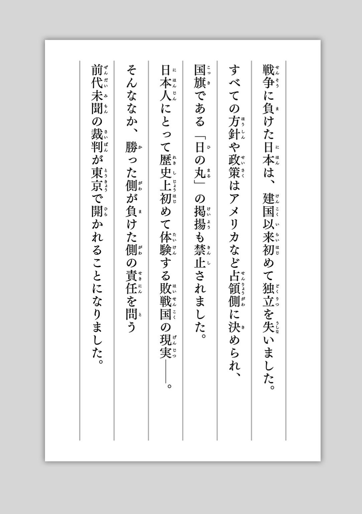
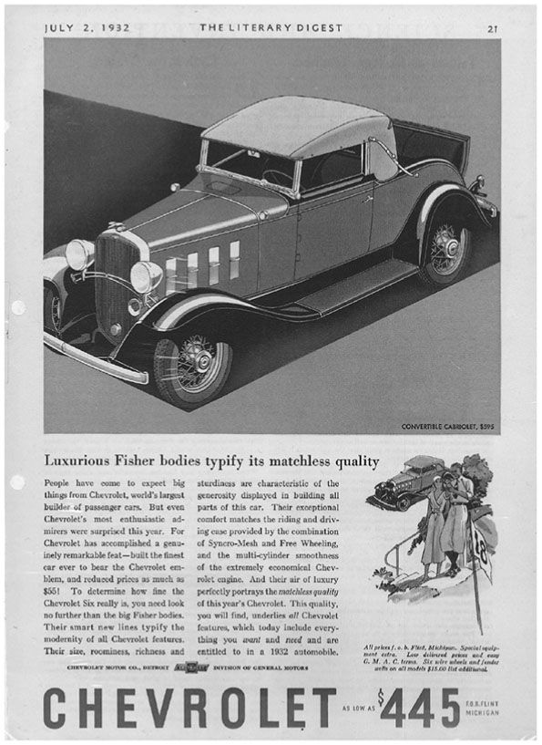

| ［親子で読めるジュニア版］日本はこうして世界から信頼される国となった | |
| 佐藤 芳直 | |
| (2014) | |
この作品は縦書きでレイアウトされています。
また、ご覧になる機種により、表示の差異が認められることがあります。
一部の漢字が簡略字で表示されていることがあります。
東 日 本 大 震 災 から８か月 後 、私 は出 張 先 のニューヨークで、見 ず知 らずの黒 人 青 年 からふいに声 をかけられました。
「Japanese people is so beautiful.」
ＩＴ企 業 を経 営 しているという彼 は、「日 本 人 は美 しい」とたしかに言 い、大 きなひとみから涙 を零 したのです。そして、震 災 を伝 えるニュース映 像 で、混 乱 のなかを助 け合 い、譲 り合 い、他 人 に配 慮 しながら落 ち着 いて行 動 する日 本 人 の姿 を見 て心 底 感 動 したのだと語 り、なぜ日 本 人 はそうなのか、と尋 ねるのです。
私 は彼 に、それが日 本 人 特 有 の生 き方 であり、そんな日 本 人 らしさがあったからこそ日 本 は今 日 まで繁 栄 してこれたのだと思 うと告 げました。
20 世 紀 を一 言 で要 約 するとしたら、日 本 が躍 進 した世 紀 、日 本 が世 界 を変 えた１００年 と言 ってよいでしょう。
勤 勉 、まじめ、正 直 。私 はこの三 つが日 本 人 の三 大 特 性 だと考 えますが、そんな日 本 人 が生 み出 す技 術 や製 品 はいまだ世 界 のトップグループにあります。また、近 年 アニメや料 理 に代 表 される日 本 文 化 が世 界 中 の人 々 を魅 了 しています。
経 営 コンサルティングという仕 事 をしている者 として、これからの21 世 紀 も、ますます日 本 は新 たな価 値 を創 造 しつづけることができると断 言 できます。なぜなら、技 術 も文 化 もすべては先 祖 から受 け継 いできた日 本 人 としての特 性 や生 き方 から生 み出 されたものであり、それは日 本 人 にしかつくれないものだからです。
つまり、世 界 の人 たちが魅 了 されているものとは、じつは日 本 人 らしさそのものなのです。
日 本 の外 に出 ると実 感 します。私 たちがいまあるこの日 本 という国 が、いかに世 界 の人 たちから信 頼 され、愛 され、憧 れられているかということを。
しかしその一 方 で、ここ最 近 、国 内 のさまざまな分 野 で仕 事 をされている人 たちと接 していて感 じることがあります。それは、いま日 本 人 の多 くが自 信 を失 い、生 き方 に迷 っているのではないかということです。とりわけ子 どもたち世 代 が未 来 について悲 観 的 にとらえている現 実 を知 り、深 く考 えさせられます。
その原 因 は、私 たち大人 にあります。残 念 ながら私 たち大人 が正 しい歴 史 というものを語 ってこなかったからだと思 うのです。
この「いま」の日 本 は、私 たちがつくったものではありません。私 たちの先 祖 が、未 来 の私 たちに手 渡 してくれたものです。世 界 から信 頼 され、憧 れられているいまの日 本 を築 いてくれた先 祖 の歴 史 を正 しく学 ぶことができなければ、未 来 をどう生 きればいいのかがわからなくなるのも当 然 かもしれません。
この本 は、私 たち日 本 人 が知 っておきたい先 祖 の生 き方 とはなにかを、歴 史 のなかから私 なりの視 点 で選 んで紹 介 したものです。各 章 に出 てくるいくつかの出 来 事 や名 前 はおそらく小 学 校 6 年 生 以 上 であれば学 校 で教 わったことがあるはずです。しかし、その内 容 は初 めて聞 く話 がほとんどだと思 います。試 験 には出 ませんが、みなさんのこれからの人 生 にとって必 ずや糧 となる大 事 な話 を集 めました。
家 族 や友 人 など、みなさんでこの本 を読 んでもらえたとしたらそれ以 上 の喜 びはありません。
２０１４年
10
月
佐 藤 芳 直
いま学 生 のみなさんがまだこの世 に生 まれていなかった１９８５年 、中 東 でお隣 同 士 の国 であるイランとイラクは、激 しい戦 争 をしていました。
いわゆる「イラン・イラク戦 争 」（１９８０～１９８８年 ）です。歴 史 の教 科 書 や副 教 材 などで習 ったことがある人 も多 いのではないでしょうか。
そんななか、戦 争 後 半 の85 年 ３月 17 日 、イラクのサダム・フセイン大 統 領 は、敵 国 のイラン上 空 を飛 行 する航 空 機 を、「48 時 間 以 降 、無 差 別 に攻 撃 、撃 墜 する」と宣 告 したのでした。
イラン国 内 では、一 挙 に緊 張 が高 まりました。とくにイランの首 都 テヘランはすでにイラクから発 射 されたミサイルによって大 きな被 害 を受 けており、混 乱 は激 しいものでした。
その当 時 、産 油 国 であるイランには、世 界 各 国 から多 くのビジネスマンが仕 事 のために訪 れ住 んでいました。もし、フセイン大 統 領 の宣 告 どおり、48 時 間 以 降 、イラン上 空 を飛 ぶあらゆる航 空 機 が撃 墜 されるとすれば、それまでにテヘランを脱 出 しなければなりません。まさに、生命 の危 険 すらあったのです。
イランで自 国 民 が働 いていた各 国 は、独 自 にテヘランに向 けて救 援 機 を派 遣 し、自 国 民 の救 出 を開 始 しました。そんななか、ただ一 か国 だけ、救 援 機 の手 配 ができない国 がありました。
そう、わが日 本 でした。
当 時 の日 本 政 府 は、日 本 航 空 （ＪＡＬ）に対 して救 援 機 の派 遣 を打 診 していました。ところが、日 本 航 空 の側 では、「48 時 間 以 内 ではテヘランに到 着 しても、安 全 に脱 出 するのは難 しい」と政 府 の依 頼 を断 ったのです。政 府 としても、安 全 が保 証 されない空 域 に、民 間 の航 空 機 を飛 ばすわけにはいきませんでした。
そこで、自 衛 隊 機 の派 遣 も検 討 されたのですが、残 念 ながら当 時 の国 内 法 上 、紛 争 地 域 への自 衛 隊 派 遣 は不 可 能 なことでした（２０１４年 夏 、安 倍 総 理 は「集 団 的 自 衛 権 」の行 使 容 認 を、国 会 ではなく内 閣 の閣 議 決 定 で行 いました。今 後 、もし同 様 のケースが起 こった場 合 、自 衛 隊 機 などの派 遣 が可 能 になるのか、現 在 議 論 が進 められているところです）。
そのころ、テヘラン市 内 には、まだ３００人 を超 える日 本 人 が出 国 を望 んで待 機 していました。
日 本 からの救 援 機 が派 遣 されないと聞 かされたとき......彼 らの間 では、絶 望 の思 いがこくなっていったにちがいありません。
刻 一 刻 と撃 墜 宣 言 のタイムリミットが近 づいてくるなか、突 然 奇 跡 のような知 らせがもたらされました。イランの日 本 大 使 館 からの要 請 を受 けたトルコ政 府 が、テヘランに救 援 機 を２機 飛 ばしてくれるというではありませんか。
大 使 館 から連 絡 を受 けた日 本 人 たちは、大 急 ぎで爆 撃 の恐 怖 のなかをテヘランにある空 港 へと向 かいました。空 港 に着 いたとき、彼 らが目 にしたのは、救 助 を求 めて待 機 している数 百 人 のトルコ人 たちでした。
そのことを知 った日 本 人 は、たとえトルコから救 援 機 が到 着 しても、自 国 民 であるトルコ人 を優 先 的 に救 援 するはずだと感 じました。トルコ救 援 機 で日 本 人 が本 当 に出 国 できるのかと、疑 心 暗 鬼 だったそうです。
ところがそのとき、トルコの人 々 は口 々 に同 じ言 葉 を叫 んだのです。
「日 本 人 にその救 援 機 に乗 ってもらうのだ！ 先 人 が受 けた恩 を返 すときだ！」
そしてその言 葉 どおり、見 ず知 らずの日 本 人 を救 援 機 に乗 るよう送 り出 してくれたのでした。
最 後 の救 援 機 が日 本 人 を乗 せてイラン国 境 を越 えたのは、無 差 別 撃 墜 命 令 のわずか４時 間 前 でした。そして、その後 は１機 の救 援 機 も飛 来 することはありませんでした。まさにラストチャンスだったというわけです。
ちなみに、最 後 の救 援 機 を日 本 人 に譲 ったために飛 行 機 に乗 れなかったトルコ人 たちは、トラックや乗 用 車 に分 乗 。そして、イラン国 境 近 くの山 を越 え、１週 間 近 くかけて祖 国 トルコへと避 難 したのでした。
なにも知 らないみなさんがこの話 を聞 いても、そんな緊 迫 した状 況 で、なぜトルコの人 々 が日 本 人 に救 援 機 を譲 ってくれたのか、不 思 議 に思 うことでしょう。
「先 人 が受 けた恩 を返 す」。トルコの人 たちが口 にしたその「恩 」というものを知 るためには、みなさんも、いや私 さえも生 まれるはるか昔 の日 本 で起 こった、ある出 来 事 までさかのぼる必 要 があります。
大 日 本 帝 国 憲 法 が発 布 された翌 年 、１８９０（明 治 23 ）年 の９月 16 日 のことです。
１隻 の軍 艦 が、おりからの台 風 に巻 き込 まれて、和 歌 山 県 串 本 沖 の紀 伊 大 島 付 近 で座 礁 しました。破 損 した船 底 から蒸 気 機 関 に浸 水 した結 果 、水 蒸 気 爆 発 を起 こして船 体 は破 壊 され、５８７名 の乗 員 が犠 牲 になる大 惨 事 となりました。
軍 艦 の名 はエルトゥールル号 。オスマン帝 国 、現 在 のトルコの親 善 使 として、日 本 へ派 遣 された軍 艦 で、帰 国 するために１日 前 に横 浜 を出 航 したばかりの事 故 でした。
９月 16 日 の夜 10 時 、座 礁 し大 破 したエルトゥールル号 の乗 組 員 が、崖 をよじ登 って紀 伊 大 島 の灯 台 にたどり着 くと、灯 台 守 はすぐに近 くの村 へと知 らせに走 りました。
外 国 船 の遭 難 を知 った島 民 は、大 荒 れの海 に飛 び込 むなど懸 命 な救 出 活 動 を行 った結 果 、69 名 の乗 員 を救 い出 すことに成 功 したのでした。
貧 しい村 ではありましたが、村 民 たちは自 らの備 蓄 食 料 をもち出 し、可 能 なかぎりの手 厚 い看 護 を続 けました。そして、日 本 政 府 の救 援 隊 がたどり着 くまで、トルコ人 乗 員 たちの生命 を守 りぬいたのでした。
そして事 故 からおよそ３週 間 後 の10 月 ５日 、69 名 の生 存 者 は、日 本 海 軍 の軍 艦 「金 剛 」「比 叡 」の２隻 に分 乗 し、オスマン帝 国 へ帰 国 の途 につきました。
軍 艦 の派 遣 は明 治 天 皇 のご指 示 でした。当 時 の日 本 は、明 治 維 新 から22 年 、国 づくりの途 上 でもあり、虎 の子 である２隻 の軍 艦 をトルコまで派 遣 することは、大 変 な決 意 だったと推 察 されます。
このような日 本 の尽 力 に対 して、オスマン帝 国 国 内 は感 動 の思 いに包 まれたということです。
「日 本 になにかあれば、今 度 は私 たちが恩 を返 すのだ」
そんな言 葉 とともに、トルコの人 々 は、エルトゥールル号 の悲 劇 の物 語 と、日 本 人 から受 けた恩 情 への感 謝 を心 と歴 史 に刻 んだのでした。そして、現 在 でも学 校 の教 科 書 にエルトゥールル号 事 件 が取 り上 げられているのです。
１９８５年 、テヘランの空 港 で、日 本 人 に自 国 の救 援 機 を譲 ったトルコの人 たち。
そう、彼 らは95 年 前 に起 きたエルトゥールル号 遭 難 の際 の恩 を返 そうとしてくれたのでした。
無 差 別 撃 墜 が数 時 間 後 に始 まるという、絶 体 絶 命 の状 況 下 で、まさに生命 がけの「恩 返 し」といえるでしょう。
当 時 、テヘランにいたトルコ人 たちの多 くは、軍 人 や警 察 官 ではなく一 般 の市 民 でした。
自 らの危 険 を顧 みることなく、見 ず知 らずの日 本 人 を救 おうとした人 間 の勇 気 のすごさと、語 り継 がれてきた先 人 の恩 を返 そうとするトルコ国 民 としての自 尊 心 と律 義 さ。私 は、ひとつの出 来 事 が長 い歳 月 をかけて代 々 語 り継 がれてきたという事 実 に、胸 が熱 くなるのです。
「親 からの恩 は、子 に返 せ」
子 どものころ、私 は父 からよくそう言 われました。「いいかい、親 が死 んだら、初 めて親 のありがたさ、恩 というものがわかるんだぞ。そしてその恩 は次 の世 代 に返 していくんだぞ」。そう教 えられたものです。
同 時 に「恩 送 り」についても教 わってきました。
みなさんのなかには、「恩 送 り」という言 葉 に初 めてふれるという人 もいるかもしれません。「御 恩 」の「恩 」に「送 り届 ける」の「送 り」と書 いて、「おんくり」と読 みます。
意 味 は、受 け取 った祖 先 からの恩 は、未 来 の子 孫 のためにより大 きくして未 来 に送 る、というもの。とても美 しい日 本 語 だと思 いませんか？
日 本 の漁 民 たちがトルコの人 たちに贈 った「恩 送 り」。それに対 して、１００年 近 い歳 月 をへて今 度 はトルコの人 たちから日 本 人 に贈 られた「恩 送 り」。
国 や人 種 、宗 教 のちがいを超 え、そしてはてしないときの流 れを超 え、人 間 と人 間 が思 い合 う奇 跡 が、この物 語 には満 ちあふれています。
ところで、１９８５年 にトルコの人 たちがとった勇 気 ある行 動 について、「日 本 がこのところ対 トルコ経 済 援 助 を強 化 してきたこと、それが日 本 人 救 援 の理 由 だろう」と論 評 する日 本 のマスコミもありました。
この記 事 に対 し、駐 日 トルコ大 使 ヌルベル・ヌレッシ氏 が、次 のように投 書 で反 論 しました。
「純 粋 に人 道 的 な見 地 から発 したトルコ航 空 の今 回 の措 置 を、日 本 とトルコとの経 済 協 力 関 係 、つまり日 本 からトルコへの経 済 協 力 に結 びつける見 方 があり（中 略 ）そのことに対 して深 い悲 しみを覚 えています」
自 国 民 の「命 と金 」。この二 つを天 秤 にかける国 家 など、あってはなりません。
しかし私 たち日 本 人 は、経 済 大 国 を自 覚 しだしたころから、人 間 としてのあるべき常 識 を失 いはじめていたのかもしれません。
先 人 が蒔 いた福 の種 が、95 年 の歳 月 をへて、２００人 以 上 の子 孫 の生命 を助 けた。それはまさに時 空 を超 えたロマンでもあります。
ひるがえって、いまを生 きる私 たちは、未 来 へと受 け継 がれるであろう〝福 の種 を蒔 くような生 き方 〟ができているでしょうか？
紀 伊 大 島 の漁 民 たちは、「未 来 のために」などと考 えて荒 れ狂 う海 に飛 び込 んだわけではありません。そのときの心 情 を、悠 久 のときの彼 方 にいる彼 らに問 えば、おそらくこう答 えるでしょう。
「自 分 たちはただ日 本 人 として、いや、人 間 としてとるべき道 を、当 然 のこととして行 っただけだ」
私 たちが未 来 に手 渡 せるもの──それは、人 間 として誠 実 に日 々 の行 為 を重 ねていくなかで、いつしか積 み上 がっていくものなのだと、歴 史 は語 っているようです。
そして同 時 に、「語 り継 ぐ」こともまた大 切 なのではないでしょうか。
次 の時 代 へと手 渡 すバトンは、過 去 から語 り継 がれてきたことのなかにこそ見 えてくるはず。まさに、このエルトゥールル号 事 件 の一 件 のように。
熊 野 灘 の大 海 原 を見 下 ろすように建 てられた「トルコ軍 艦 遭 難 慰 霊 碑 」の石 碑 。
それは日 本 とトルコの友 好 の証 であると同 時 に、未 来 へと手 渡 すべき貴 重 な「恩 送 り」の物 語 がつまったバトンなのです。
みなさんは勉 強 は好 きですか？ 一 日 に何 時 間 くらい勉 強 していますか？ なかには学 校 以 外 に塾 に通 ったり、通 信 教 材 の問 題 に向 き合 ったりしている人 もいるかもしれませんね。
それでは、「そもそもどうして勉 強 しなければならないんだろう？」と考 えたことはあるでしょうか。
もし、みなさんからそう問 われたら、私 はこう答 えます。「将 来 の生 き方 を考 えるために勉 強 するのです」と。
じつはこれ、ある先 人 の言 葉 から思 いついたことです。その人 はこんなことをいっていました。
「自 分 の長 所 を知 ってから、どう生 きるか決 めなさい」
吉 田 松 陰 という人 の言 葉 です。
松 陰 は、幕 末 の長 州 藩 （現 在 の山 口 県 ）で活 躍 した武 士 ・思 想 家 で、国 中 の多 くの人 に影 響 を与 えました。と同 時 に、20 代 後 半 で刑 死 するまでのごく短 い間 に教 育 に力 を注 ぎ、多 くの優 れた教 え子 を輩 出 します。松 陰 の人 生 をふり返 ることで、勉 強 する意 味 や生 きる意 味 が見 えてくるはずです......。
松 陰 の話 をひもとく前 に、やはり幕 末 という同 じ時 代 に倒 幕 で活 躍 する薩 摩 藩 （現 在 の鹿 児 島 県 ）の事 情 を見 ておきます。
歴 史 を知 れば知 るほど、あるひとつの真 理 にたどり着 きます。世 の中 で起 こることは、すべて偶 然 などではなく、必 然 性 があって起 こる。そんな真 理 です。
世 の中 を変 える人 財 （人 材 ）は、あるとき、ある場 所 に群 がるように生 まれてくる。このこともまた、ひとつの真 理 のようです。
鹿 児 島 市 の中 央 、甲 突 川 という川 の下 流 あたりに、加 治 屋 町 という名 の地 区 があります。ほぼ５００メートル四 方 の小 さな町 ですが、その小 さな一 地 区 は、歴 史 に名 を残 した偉 人 と呼 ばれる人 物 を数 多 く輩 出 しています。
西 郷 隆 盛 、大 久 保 利 通 、東 郷 平 八 郎 、大 山 巌 、山 本 権 兵 衛 、村 田 新 八 ......。ほかにも数 多 くの人 物 が、この加 治 屋 町 の出 身 です。

西 郷 隆 盛 といえば、みなさんも知 っているように明 治 維 新 の立 役 者 です。その西 郷 の育 った家 から５分 ほど歩 いたところに、大 久 保 利 通 が生 まれた家 もあります。
大 久 保 は、維 新 成 立 後 に富 国 強 兵 路 線 を明 確 に打 ち出 し、現 代 に続 く官 僚 機 構 の基 礎 を築 くなど、近 代 日 本 のかたちを作 った人 物 です。のちに、西 南 戦 争 （１８７７／明 治 10 年 ）が起 こり、二 人 は反 乱 軍 、政 府 軍 のそれぞれの実 質 トップとして激 突 することになります。
ただ、二 人 は幼 少 期 から少 年 期 にかけての教 育 をともに受 けた親 友 同 士 で、明 治 維 新 までその関 係 は続 くのです。
薩 摩 という大 きな藩 で、わずか５００メートル四 方 の加 治 屋 町 という小 さな場 所 から、国 家 をかたちづくった人 物 が数 多 く生 まれ育 っていたという事 実 には驚 かされます。
日 露 戦 争 という日 本 の興 亡 をかけた戦 いを勝 利 に導 いた二 人 の将 軍 、満 州 軍 の総 司 令 官 ・大 山 巌 、連 合 艦 隊 の司 令 長 官 ・東 郷 平 八 郎 の二 人 も、くしくもこの地 区 の出 身 です。
人 財 は群 生 するといわれますが、たしかにそう思 えます。
そのころ、薩 摩 藩 には「郷 中 教 育 」という独 特 の教 育 システムがありました。
子 どもたちは６歳 になると「舎 」という場 に集 まり、先 輩 が後 輩 を指 導 するという形 式 でこの教 育 を受 けました。
郷 中 教 育 は、いまも語 り継 がれる三 つの教 えを、教 育 の柱 としています。
一 、負 けるな
一 、嘘 をつくな
一 、弱 いものをいじめるな
いまでもすべての人 に通 じる、正 しい教 えではないでしょうか。
学 びのスイッチというものは、自 分 自 身 が目 標 としたいと思 えるような尊 敬 できる誰 かがいて初 めて自 然 に入 るものです。どんなによいことであっても、それを教 えてくれる人 に対 して尊 敬 心 が生 まれなければ、身体 にすっと入 ってくることはありません。
加 治 屋 町 には、西 郷 隆 盛 という尊 敬 すべき大 先 輩 がいました。西 郷 の息 吹 にふれることのできた少 年 たちの興 奮 は、どれほどのものだったでしょう。
その後 、西 郷 の指 導 を間 接 的 にしか受 けられなかった少 年 たちにも、伝 説 的 な人 物 が先 輩 にいたという事 実 は大 きなものであったことでしょう。
師 とは、直 接 的 な言 葉 でなにかを教 える人 だけではありません。正 しい生 き方 を示 し、その人 の将 来 の生 きる道 筋 を、なるほどそうかと納 得 させてくれる人 をさすのではないかと思 います。
薩 摩 とともに、幕 末 期 に倒 幕 への道 を駆 け抜 けたのが長 州 藩 です。
そこにも、少 年 たちが尊 敬 の目 を輝 かせた人 物 がいました。
吉 田 松 陰 その人 です。
明 治 維 新 は、近 代 化 に遅 れた時 代 に決 別 し、天 皇 中 心 の国 家 としてまとまることで西 欧 の植 民 地 とされない強 い日 本 をつくることをめざしました。
長 州 藩 で、その理 論 を唱 えた中 心 的 な人 物 が吉 田 松 陰 です。
松 陰 は、１８３０年 に杉 家 の次 男 として長 門 国 萩 松 本 村 （山 口 県 萩 市 の一 地 区 ）に生 まれました。
幼 いころに生 家 を離 れ、兵 学 の師 範 を家 業 とする吉 田 家 の養 子 となり、６歳 で当 主 となります。
10 歳 のときには、藩 校 の明 倫 館 で山 鹿 流 兵 学 を講 義 し、11 歳 のときには藩 主 ・毛 利 慶 親 公 の前 で『武 教 全 書 』という本 の戦 法 編 三 戦 を講 義 するなど、松 陰 の天 才 ぶりを伝 える逸 話 が数 多 く残 っています。
24 歳 になった松 陰 は、伊 豆 下 田 に２回 目 の来 航 をしてきたペリー艦 隊 の船 に、同 じ長 州 藩 の知 人 である金 子 重 之 輔 とともに乗 り込 みます。１８５４年 の３月 のことでした。
アメリカという国 を知 りたい。行 ってどんな国 か、実 際 にこの目 で見 てみたい。その一 心 で、幕 府 や藩 に許 可 を得 ずに密 航 をはたそうとしたのです。
しかし、日 本 と友 好 条 約 を締 結 したばかりのアメリカは幕 府 に気 を遣 い、松 陰 の申 し出 を断 りました。のちに「下 田 踏 海 」と呼 ばれるこの事 件 で、松 陰 は萩 にあった野 山 獄 に投 獄 されることになってしまいました。
野 山 獄 とは、長 州 藩 内 にあった武 士 階 級 の者 だけを収 容 する監 獄 でした。
そこで松 陰 は、囚 人 たちを相 手 に儒 学 の教 えなどを説 く『孟 子 』の講 義 を始 めます。このときの講 義 はのちに「講 孟 余 話 」としてまとめられています。
ところで、獄 中 にいる松 陰 が獄 舎 の囚 人 たちへの講 義 ができたり、新 入 りである松 陰 の講 義 を囚 人 らがおとなしく聞 いたりしたのはなぜだったのでしょう。
それは、松 陰 の罪 状 が国 策 （鎖 国 令 ）を犯 してまでも海 外 に遊 学 しようとしたという、驚 天 動 地 の罪 だったということと、入 獄 してからの松 陰 の勉 強 ぶりにほかの囚 人 たちが驚 き興 味 をもったからではないでしょうか。
このとき、松 陰 は入 獄 ２か月 間 で１０６冊 、翌 年 の年 末 に出 獄 するまでに、さらに５５４冊 の本 を読 破 したほどの勉 強 量 だったといいます。
松 陰 の講 義 を受 けた囚 人 の数 は11 名 でした。そして、この獄 中 での勉 強 会 はその後 もつづいていきます。句 や唐 詩 など、それぞれに優 れた者 がその分 野 の講 義 を行 うというかたちで、学 びを共 有 する場 に発 展 していくのです。ついには獄 を管 理 する役 人 まで学 びの場 に参 加 したといいます。
松 陰 はどんな人 間 にも一 、二 の才 があると考 えていました。そしてその才 、つまり長 所 に学 ぼうとする態 度 が人 間 を成 長 させるとも考 えていたのです。
その信 念 は囚 人 に対 してさえ、なにも変 わることはありませんでした。
「一 事 の罪 何 ぞ遽 に全 人 の用 を廃 することを得 んや」
松 陰 の言 葉 です。
たとえ罪 や問 題 のある人 間 であっても、悪 いのはその一 事 だけで、その人 間 を全 否 定 することは正 しくない。そんな松 陰 の人 間 に対 する優 しい視 点 がかいま見 える考 え方 といえます。
松 陰 は、優 れた思 想 家 、教 育 者 である一 方 、実 践 の人 、行 動 の人 でもありました。
入 獄 のきっかけとなったペリー艦 隊 への交 渉 など、机 上 の学 問 だけに生 きる人 間 には思 いもつかない行 動 です。まして、言 葉 も通 じない外 国 人 の船 のなかに乗 り込 んで、「米 国 へ連 れて行 け！」と直 談 判 におよんだのですから、その大 胆 さは並 大 抵 ではありません。
幕 末 のころ、志 ある武 士 階 層 の人 々 は、日 本 は西 洋 国 家 によって侵 攻 され、植 民 地 にされるのではないかという恐 怖 心 を抱 いていました。強 大 な力 をもつと信 じられていた隣 国 の清 でさえ、アヘン戦 争 で英 国 に敗 れ、半 植 民 地 にされてしまっていたからです。
まさにその時 期 に、ペリー艦 隊 が日 本 に現 れたのでした。
松 陰 は、この知 らせを聞 くや「見 たい！」と思 ったのでしょう。
いますぐ黒 船 を見 たい。その黒 船 を作 ったアメリカという異 文 化 の国 を見 たい。
そう熱 望 し、そして後 先 を考 えることなく、そのときに最 善 と思 える行 動 に出 たのです。
よいと思 ったことは損 得 の計 算 をせず、即 行 動 する。それが松 陰 の信 念 でした。
「至 誠 にして動 かざるもの未 だ是 あらざる也 」
この孟 子 の言 葉 を、松 陰 は弟 子 たちによく語 っていました。
至 誠 ──それは、正 しいこと、よいと思 うことを即 行 動 に移 すこと、また貫 くことです。
幕 末 の長 州 で「奇 兵 隊 」をつくり上 げた高 杉 晋 作 も、吉 田 松 陰 門 下 生 です。松 陰 がもっとも高 く評 価 した弟 子 で、幕 末 の戦 いでの晋 作 の縦 横 無 尽 の戦 いぶりは、「胸 躍 る」、そんな形 容 がぴったりくるようなものでした。
晋 作 が初 めて松 陰 を訪 ね、入 門 を願 ったとき、ペリー艦 隊 に対 する幕 府 の弱 腰 を追 及 する趣 旨 の書 を提 出 しました。
〈黒 船 など、さっさと乗 り込 んで敵 の大 将 ペリーを殺 せば、退 散 しただろうに。いやいや、火 をつければ、沈 めることだってできる......〉
そんな内 容 の書 を松 陰 は突 き返 します。そして、こんな言 葉 を晋 作 に告 げたのです。
「事 を論 ずるには、当 に己 の地 、己 の身 より見 を起 すべし」
なにかを議 論 するときは、己 の身 、つまり自 分 の力 でできることを言 いなさい。己 の地 、つまり自 分 の立 場 で為 せることから言 いなさい。お前 は黒 船 を見 たか？ あの巨 大 な船 に乗 ったのか？ 空 虚 な論 議 をすべきではないぞ。松 陰 はそう言 いたかったのでしょう。
至 誠 を通 せよ。お前 の才 を活 かすいちばんの指 針 だぞ。
実 践 と行 動 を重 んずる、松 陰 の人 となりを感 じさせる一 言 です。
さて、その後 １８５６年 に野 山 獄 を出 た松 陰 は、自 宅 謹 慎 を命 じられ幽 囚 の身 となってしまいます。
現 在 、山 口 県 萩 市 には、松 陰 をまつる松 陰 神 社 があります。境 内 には、松 陰 が講 義 を行 った私 塾 、「松 下 村 塾 」の建 物 も、修 復 されて現 存 しています。
松 下 村 塾 を初 めて見 る人 は、一 様 に同 じ感 想 を口 にするようです。
こんなに小 さいのか......。こんなに粗 末 な建 物 だったのか......。
そうです。小 さく粗 末 なこの松 下 村 塾 から、きわめて優 秀 な人 財 が次 々 に輩 出 され、いまの日 本 への道 が続 いていったのです。
松 下 村 塾 は、もとは１８４２年 に松 陰 の叔 父 にあたる玉 木 文 之 進 が始 めた、長 州 藩 士 の子 弟 のための私 塾 です。松 陰 自 身 も、幼 少 のころから叔 父 に厳 しく鍛 えられたのでした。
野 山 獄 を出 た松 陰 が、謹 慎 していたわずか三 畳 間 の自 室 で、身 内 に孟 子 の講 義 を始 めると、近 隣 の子 弟 や噂 を聞 きつけた人 が大 勢 集 まり、部 屋 はすぐに手 狭 になりました。そこで、庭 の畑 にあった納 屋 を改 造 して松 下 村 塾 として引 き継 ぐことになったのです。
松 陰 の松 下 村 塾 には、武 士 階 層 だけではなく、農 民 の子 も商 人 の子 もいました。多 くは近 所 の住 人 でしたが、噂 を聞 きつけ遠 方 から来 る者 もいました。
平 均 年 齢 は18 歳 程 度 、最 年 少 は９歳 。ちなみに、松 下 村 塾 には入 塾 試 験 はありませんでした。
そのころ、幕 府 の大 老 ・井 伊 直 弼 は、揺 らいでいた幕 府 の権 威 を立 て直 そうと「安 政 の大 獄 」を始 めます。朝 廷 を重 んじるべきだ、外 国 は追 い払 うべきだといった思 想 をふりかざし、幕 府 の政 治 姿 勢 に反 対 する尊 皇 攘 夷 派 の人 々 を厳 しく処 罰 したのです。松 陰 もこの政 治 の流 れに巻 き込 まれ、野 山 獄 に再 収 監 されることになります。
再 び収 監 されるまでの間 、松 下 村 塾 で教 えた期 間 は実 質 １年 １か月 間 でしかありませんでした。
その短 期 間 に学 んだ塾 生 の数 は、70 名 とも90 名 とも伝 えられています。
ごく短 期 間 の教 育 ではありましたが、その後 塾 生 から２名 の内 閣 総 理 大 臣 が誕 生 しています。初 代 総 理 大 臣 の伊 藤 博 文 と、軍 人 として陸 軍 のトップに上 りつめ総 理 にもなった山 縣 有 朋 です。ほかにも３名 の国 務 大 臣 も生 まれています。品 川 弥 二 郎 、山 田 顕 義 、野 村 靖 です。
本 来 この５人 のなかで、身 分 的 に藩 校 の明 論 館 に入 れたものは品 川 ただ一 人 でした。つまりほかの４人 は、武 士 とはいえ下 級 の出 身 であったということです。そのような身 分 にかかわらず、学 びの門 を開 いた松 陰 の意 志 が、人 財 を育 てたといえるでしょう。
この５名 以 外 にも、志 半 ばで倒 れた優 れた人 物 がいました。高 杉 晋 作 、久 坂 玄 瑞 、入 江 杉 蔵 などです。
総 理 や大 臣 になった５名 以 上 に、松 陰 が大 きく期 待 したエリートでした。彼 らは維 新 にいたる戦 いの最 中 に死 んでしまいますが、その死 はたしかな導 火 線 として近 代 日 本 の幕 開 けに連 なっていきました。
わずか29 年 という短 い生 涯 の間 に、これだけの数 の偉 人 を育 んだ吉 田 松 陰 。いったい、なぜこれほどまでの教 育 の成 果 をあげられたのでしょうか。
理 由 のひとつに、松 陰 のすぐれて優 しい人 柄 があったようです。
「学 とは人 たる所 以 を学 ぶ也 」
松 陰 は学 びの目 的 をそう語 っています。人 間 はどう生 きるべきか、それを学 ぶのだよと。
松 下 村 塾 の講 義 室 には、「聯 」という、門 人 への憲 法 のようなものが書 かれた竹 が掲 げられていて、現 地 に行 くといまもレプリカで見 ることができます。この「聯 」には、こんな文 章 が書 かれています。
「万 巻 の書 を読 むにあらざるよりは、いづくんぞ千 秋 の人 たるを得 ん。一 己 の労 を軽 んずるにあらざるよりは、いづくんぞ兆 民 の安 きを致 すを得 ん」
読 書 をしなさい。それは古 からのすばらしい賢 人 の教 えにふれることですよ。小 さな当 たり前 のことを、大 切 にしなさい。労 を惜 しむようでは、世 の人 々 に役 立 つ人 間 にはなれませんよ。
松 陰 は、人 間 の偉 大 さを教 えようとしました。そして、当 たり前 のことをきっちりとつづけていけば、誰 でも世 の役 に立 つ人 になれると説 いたのです。
いまを生 きる私 たちにとっても、勇 気 をもてる言 葉 ではないでしょうか。
松 陰 が塾 生 に語 ったいちばん大 切 な言 葉 は、「志 を立 てて萬 物 の源 を為 す」という言 葉 だと思 います。
志 こそが、すべての源 だというのです。松 陰 がいう志 とは、たんに自 分 の立 身 などではなく、世 のため、人 のために役 立 とうという思 いです。
いつの時 代 でも、思 春 期 の子 どもの多 くは、自 分 に疑 問 をもつものです。
「自 分 のような人 間 にも、世 の中 に役 に立 てる長 所 はあるのか？」
これに対 しても、松 陰 ははっきりと断 言 しています。
「人 賢 愚 ありといえども、各 々 一 、二 の才 能 なきはなし」
人 によって頭 の良 し悪 しはあるだろう。しかしどんな人 間 にも、ひとつや二 つの長 所 は必 ずあるのだよと。その長 所 を活 かせば、必 ず志 にたどり着 くと松 陰 は教 えたのです。
長 所 を見 つけるためには、読 書 をしなさい。どんなことも怠 らず、日 々 の小 さな行 為 一 つひとつに全 力 で真 剣 に臨 みなさい、と松 陰 は言 っています。
萩 の地 で謹 慎 を命 じられ、松 下 村 塾 を開 塾 してすごしていた松 陰 は野 山 獄 に再 収 監 され、その後 江 戸 送 りになりました。
多 くの塾 生 、家 族 は、これが死 出 の旅 になるだろうとの予 感 をもって、万 感 の思 いで見 送 ります。
「誠 をもって役 人 に話 せば、正 しい考 え方 は理 解 されるだろう。そのことを、実 際 に試 してみたい」
そんな言 葉 を塾 生 たちに残 し、萩 を後 にした松 陰 は、萩 城 下 をいよいよ離 れる瞬 間 の思 いを次 のように詠 みました。
かけまくも 君
が国
だに 安
かれば身
をすつるこそ 賤
が本
意
也
日 本 の国 が安 らかにつづいていくのであれば、自 分 の一 身 はどうなってもかまわない。そのような意 味 です。松 陰 は死 罪 を告 げられる前 からそれを予 見 し、母 にも次 のような主 旨 の手 紙 を書 いています。
〈私 の学 問 がいたらず浅 かったために、幕 府 役 人 の考 えを正 すことができませんでした〉
死 罪 になることも、自 分 の学 びが浅 かったからだ。すべては自 分 の責 任 だ、というのです。
まさに、至 誠 をとことん実 践 する人 生 でした。
「 至 誠 にして 動 かざるもの 未 だ 是 あらざる 也 」
至 誠 の態 度 を貫 いてさえいれば、どんなことでも実 現 できる──松 陰 の大 切 な思 いでした。
松 陰 の斬 首 が決 行 されたのは、１８５９年 のことでした。
身
はたとひ 武
蔵
の野
辺
に 朽
ちぬとも 留
め置
かまし 大
和
魂
私 のこの身 は武 蔵 の地 で朽 ちてしまっても、私 の魂 は日 本 に留 まり国 を守 りつづけるぞ。
そんな言 葉 を塾 生 たちに残 して、松 陰 は逝 きました。
両 親 へは、優 しさにあふれた辞 世 の句 を残 しています。
親 思 ふ 心 にまさる 親 心 けふの音 づれ 何 ときくらん
また、至 誠 の人 らしいこんな句 も残 しています。
かくすれば かくなるものと 知
りながら 已
むに已
まれぬ 大
和
魂
あえて解 説 はしません。みなさん自 身 で考 えてみてください。
松 陰 の死 からわずか８年 で、江 戸 徳 川 幕 府 は倒 れました。松 陰 の蒔 いた種 は、その後 、さまざまな流 れと合 わさりながら、大 きな力 となってひとつの花 を咲 かせていきます。
どんな時 代 も、行 動 、至 誠 、優 しさは、人 の心 を動 かし、大 きな力 を育 むものです。
松 陰 の29 年 の人 生 から、私 たちが学 ぶべき大 切 な教 えです。
地 球 儀 を見 れば、日 本 とアメリカは太 平 洋 をはさんで向 かい合 う隣 国 同 士 だということがすぐわかります。
江 戸 時 代 、３００年 近 く「鎖 国 」を続 けていた日 本 は、アメリカによって「開 国 」へと向 かい、明 治 へと移 っていきました。
幕 末 から明 治 にいたるまでの間 、日 本 は「植 民 地 にされたくない！」という危 機 感 でまとまりました。
有 色 人 種 の国 家 で近 代 化 に真 っ先 に成 功 したのも、その強 い危 機 感 があったからです。そういう意 味 では、アメリカの存 在 が日 本 の近 代 化 を促 した、という見 方 もできなくもありません。
この章 では、近 代 の日 本 が「独 立 」を成 しえた精 神 について見 ていきます。そのためには、少 し長 くなりますが中 世 から近 代 のヨーロッパ諸 国 やアメリカのようすも確 認 しておく必 要 があります。
明 治 維 新 から５年 目 に、福 沢 諭 吉 が『学 問 のすゝめ』を発 表 します。明 治 ５年 から明 治 ９年 までの間 に17 編 にわたって書 かれたものですが、トータルで３００万 部 売 れたといわれている本 です。
当 時 の日 本 の人 口 は、およそ３０００万 人 ですから、じつに10 人 にひとりが買 った計 算 になる超 大 ベストセラーです。約 １億 ３０００万 人 の人 口 がいる現 在 の日 本 で、トータルで50 万 部 や１００万 部 売 れる本 が大 ベストセラーといわれることとくらべても、いかに『学 問 のすゝめ』が明 治 初 期 の人 々 に受 け入 れられたかがわかるというものです。
その書 き出 しは、多 くの人 が知 る有 名 な一 節 から始 まっています。
「天 は人 の上 に人 を創 らず、人 の下 に人 を創 らずといえり」
人 間 は生 まれながらにして上 下 はない。みんな、平 等 に生 まれてくる──という意 味 です。
この言 葉 は、初 代 アメリカ大 統 領 、ジョージ・ワシントンによる、アメリカ合 衆 国 独 立 宣 言 に触 発 されたものといわれています。
徳 川 幕 府 が倒 れ新 しい時 代 へと日 本 が舵 を切 るなかで、人 には上 下 がないのだ、との諭 吉 の書 き出 しには多 くの日 本 人 が希 望 を抱 いたことでしょう。
しかし、維 新 直 後 の日 本 人 が『学 問 のすゝめ』に熱 中 したのは、むしろその次 の一 節 ではないでしょうか。
「何 故 金 持 ちもいれば、貧 乏 人 もいるのか？ 貴 人 もいれば、下 人 もいるのか？」
その理 由 が、ひとつの言 葉 に集 約 されています。
〝学 ばないからだ！〟
逆 にいうなら、学 ぶことで下 人 でも貴 人 になれるということです。
本 を読 んだ３００万 人 の日 本 人 は、いまこのときに学 ばなければ、欧 米 諸 国 の奴 隷 として日 本 は植 民 地 にされてしまうかもしれないと、強 い危 機 感 をもったことでしょう。
福 沢 諭 吉 は、『学 問 のすゝめ』を書 きはじめる12 年 前 の１８６０（安 政 ７）年 に、日 本 船 で初 めて太 平 洋 を越 え、日 米 修 好 通 商 条 約 の批 准 （「批 准 」とは、交 わされた条 約 を国 家 間 で確 認 し、正 式 に同 意 すること）のためサンフランシスコへと向 かう咸 臨 丸 に乗 り込 んでいます。
サンフランシスコ、そしてワシントン、ニューヨークで米 国 民 の大 歓 迎 を受 けながら、数 えきれない奴 隷 の存 在 を目 撃 したことでしょう。
そのなかには黒 人 だけでなく、日 本 人 と同 じ黄 色 人 種 の支 那 人 （戦 前 の中 国 は外 国 から「支 那 」と呼 ばれていました）が多数ふくまれていたはずです。
１８５０年 代 のアメリカでは、奴 隷 廃 止 論 が語 られるようになっていました。黒 人 奴 隷 に代 わる働 き手 が求 められ、代 わりに着 目 されたのが、中 国 （清 朝 ）の労 働 力 だったのです。１８６０年 までの10 年 間 で、およそ４万 人 がアメリカへと渡 ったといわれています。
当 時 のニューヨークタイムズにも、次 のような評 論 が載 っています。
「現 在 南 部 にいる黒 人 奴 隷 は２００万 人 、中 国 人 ・苦 力 で置 き換 えが可 能 である。２億 ５０００万 人 の支 那 の人 口 からすれば、２００万 人 は微 々 たるものだ」
中 国 人 労 働 者 を表 す「苦 力 」とは、文 字 どおり奴 隷 そのものだったのです。
幕 末 にいたるまでの日 本 では、徳 川 幕 府 が１６３３年 に鎖 国 令 を出 し、諸 外 国 との国 交 を遮 断 しました。
イエズス会 のようにキリスト教 の布 教 を口 実 に、他 国 を植 民 地 にするポルトガル、スペインの脅 威 を感 じたためとされますが、アジアに進 出 したスペイン、ポルトガル、そしてオランダと諸 大 名 が密 かに交 易 し、力 を蓄 えることを恐 れたからでもありました。
事 実 、奥 州 仙 台 藩 主 ・伊 達 政 宗 は、スペイン人ビスカイを司 令 とする〝サン・ファン・バウティスタ号 〟を編 成 し、メキシコからスペインへと支 倉 常 長 以 下 ６人 を鎖 国 前 の１６１３年 に送 り出 しています。
翌 年 、サン・ファン・バウティスタ号 はメキシコのアカプルコを経 由 し、スペインのマドリードに到 着 します。目 的 のひとつに、世 界 の覇 者 スペインとの軍 事 同 盟 があったといわれています。このときの「慶 長 遣 欧 使 節 」がもち帰 った貴 重 な資 料 は、２０１３年 に世 界 記 憶 遺 産 にも登 録 されました。
いずれにせよ、徳 川 幕 府 は大 航 海 時 代 の世 界 情 勢 、とりわけ激 烈 を極 める帝 国 主 義 ・植 民 地 主 義 の実 態 を敏 感 に察 知 していたのでしょう。
もちろん、日 本 が鎖 国 を宣 言 しても、はいそうですか、と西 欧 が簡 単 に認 めるものではありません。
当 時 の日 本 は、「黄 金 の国 ジパング」として西 欧 諸 国 の憧 れと欲 望 の対 象 だったからです。
マルコ・ポーロはモンゴル帝 国 のフビライ・ハーンに17 年 間 仕 えた役 人 でした。１２９５年 に生 まれ故 郷 であるイタリアに帰 国 してから、伝 聞 をもとにして著 した『東 方 見 聞 録 』で次 のように記 しています。
「この国 では至 る所 に黄 金 が見 つかるものだから、国 人 は誰 でも膨 大 な黄 金 を所 有 している。この国 へは大 陸 から誰 も行 った者 がない。商 人 でさえ訪 れないから、豊 富 な黄 金 はかつて一 片 も国 外 に持 ち出 されなかった」
16 世 紀 にいたるまで、ジパングはとてもたどり着 くことができない〝夢 の国 〟でした。未 発 達 な航 海 技 術 と神 話 時 代 的 な地 図 によるためでした。
当 時 は、スペイン、ポルトガルのあるイベリア半 島 から東 洋 にいたる海 路 は二 つに限 られていました。ひとつは、地 中 海 アレクサンドリアから紅 海 を通 りインド洋 に抜 けるルート。もうひとつは大 西 洋 を南 下 、アフリカ大 陸 喜 望 峰 を東 へと進 みマダガスカルからインド洋 に向 かうルートでした。この二 つのルートでポルトガル、そしてスペインはインド、アジア西 地 域 に進 出 し、植 民 地 にしていきます。
地 球 儀 を見 ればわかりますが、ほかにもルート、それも距 離 の短 いルートがあります。大 西 洋 から太 平 洋 まで、最 短 距 離 で抜 けられるルートは、南 アメリカ大 陸 の南 端 のマゼラン海 峡 経 由 です。ただし、もちろん当 時 は近 道 であるパナマ運 河 （１９１４年 開 通 ）もなく、マゼラン海 峡 には、帆 船 ではとても突 破 できない強 い偏 西 風 が吹 いていて、まさに死 の海 だったのです。
さらに、まだこの時 代 は太 平 洋 は想 像 の海 でしかなく、その存 在 すら実 像 として信 じられてはいませんでした。
１４９２年 、スペインの女 王 、イザベラ一 世 の支 援 を受 けたコロンブスは、黄 金 の国 ジパングに向 かうべく大 西 洋 を西 へ西 へと航 海 に出 ました。
スペイン西 方 のカナリア諸 島 からジパングまでの距 離 は４３００キロ。１か月 も前 進 すれば、黄 金 の国 ジパングにたどり着 くと、コロンブスはイザベラ女 王 を説 き伏 せ、ジパング、そしてアジアの世 界 へ航 海 に旅 立 ちます。それが当 時 の世 界 地 図 の常 識 だったのです。
もちろんコロンブスはジパングにいたることはなく、彼 が、アジア＝インディオスにたどり着 いたと錯 覚 したアメリカ大 陸 が、その行 く手 をふさいでいました。
１４９２年 、コロンブスの大 偉 業 であるアメリカ大 陸 発 見 は、ジパングの幻 想 が導 いたものだったのです。
太 平 洋 の発 見 は、その後 の１５２０年 、マゼランによるマゼラン海 峡 通 過 を待 たなければなりません。
それまでの間 、ジパングの影 はごくまれに遭 難 した者 が見 るだけでした。イベリア半 島 から東 に向 かえば、まさに極 東 、東 のはてにジパングはあり、植 民 地 政 策 の一 環 として向 かうには、はるか遠 い国 だったのです。
黄 金 の国 ジパング。日 本 は偏 西 風 に守 られ、そして東 回 りではあまりにも遠 く、スペイン、ポルトガルの魔 の手 から守 られつづけていたのでした。
コロンブスによるアメリカ大 陸 の発 見 はフロンティアの発 見 であり、まったく新 しい価 値 観 が生 まれる発 端 ともなりました。
15 世 紀 のヨーロッパは、６００年 以 上 続 いた中 世 の終 末 期 でもあり、疲 弊 していました。１４５２年 、オスマン帝 国 のメフメト二 世 が東 ローマ帝 国 の首 都 であるコンスタンティノープルを攻 略 し、強 大 な権 勢 を誇 った東 ローマ帝 国 がイスラム教 徒 によって滅 ぼされます。
当 時 の文 明 の中 心 であった地 中 海 では、世 界 の富 、知 識 が散 逸 し、おりから続 く冷 害 とも相 まって、ヨーロッパは困 窮 し新 しい時 代 の鍵 を求 めつづけていました。
その閉 塞 感 を吹 き飛 ばしたのが、アメリカ大 陸 発 見 だったのです。
文 明 の遅 れた近 代 武 器 をもたない後 進 民 族 が、大 量 の金 銀 とともに暮 らす大 陸 は、ヨーロッパの地 でゆきづまっていた人 々 にとっては夢 のような新 天 地 でした。
１５３２年 には、スペイン人 のフランシスコ・ピサロがインカ帝 国 を攻 略 しますが、わずか１８０名 の兵 と27 頭 の馬 でインカ帝 国 へ進 行 。３万 人 のインカ兵 を蹂 躙 し、皇 帝 をも殺 害 し、インカ帝 国 にあふれていた黄 金 を根 こそぎ強 奪 しています。
植 民 地 主 義 の先 鞭 を切 ったスペインの隆 盛 は、アメリカ大 陸 の発 見 と平 和 な後 進 民 族 の殺 戮 と強 奪 によってもたらされたものでした。
中 世 が終 わり、16 世 紀 に始 まる近 世 では、そのスペインが他 国 のモデルとなり、ヨーロッパ諸 国 を巻 き込 む世 界 基 準 となります。その後 アメリカ合 衆 国 となる大 地 は、植 民 地 主 義 のモデル的 大 陸 となったのです。
フランシスコ・ザビエルが日 本 に到 着 したのは１５４９年 です。
ザビエルは知 性 と理 性 を兼 ね備 え、イエズス会 のキリスト教 幹 部 として日 本 をキリスト教 によって教 化 するという目 的 をもった初 のヨーロッパ人 でした。ザビエルは、日 本 で積 極 的 に布 教 活 動 を進 めますが、その彼 が驚 いたのは、他 の異 民 族 には見 られない日 本 人 の資 質 でした。
名 誉 を重 んじ、不 正 を嫌 い、清 廉 潔 白 であることを生 きる流 儀 とする日 本 人 。非 キリスト教 徒 であり、有 色 人 種 でありながら、正 義 の規 範 をもち秩 序 立 った社 会 をもつ日 本 に、ザビエルはいわば畏 敬 の念 すら抱 いたようです。
ザビエルが日 本 に来 る６年 前 、種 子 島 に着 いたポルトガル人 が鉄 砲 をもたらしました。
日 本 人 はその西 洋 の最 先 端 技 術 をたちまちわがものとし、紀 州 の根 来 衆 （現 在 の和 歌 山 県 に勢 力 をもっていた僧 兵 集 団 ）は、わずか２か月 で鉄 砲 を模 造 してしまったのです。
そして鉄 砲 が伝 わってからわずか30 年 のうちには、現 在 の堺 市 などで鉄 砲 が量 産 されるようになり、日 本 は世 界 一 の鉄 砲 をもつ国 となります。当 時 の日 本 は最 強 の軍 事 国 家 だといっても過 言 ではないでしょう。
そんな日 本 の姿 は、ザビエルの後 輩 たちが詳 細 に本 国 ヨーロッパに伝 えていました。複 雑 な海 岸 線 と地 形 。死 をも恐 れず名 誉 を第 一 とする国 民 性 や最 強 の戦 闘 力 を有 する武 士 の存 在 も伝 わっていたことでしょう。
ヨーロッパからのはるかなる距 離 とともに、さまざまな条 件 で日 本 は簡 単 には植 民 地 にできない国 として、ヨーロッパの人 の記 憶 に刻 まれていったのです。
さて、そのヨーロッパの覇 権 は、西 アジアに植 民 地 を広 げたポルトガルと、新 大 陸 アメリカを侵 略 したスペインが握 りつづけていました。
しかし、大 漁 業 国 としてニシン漁 で財 を成 し、海 運 国 へと進 出 したオランダと、海 賊 の力 、海 軍 の育 成 に力 を入 れたイギリスによって、ポルトガルとスペインの二 大 強 国 は徐 々 に追 われるようになります。
やがて、イギリスが北 アメリカ大 陸 への移 民 の中 心 となります。北 アメリカ東 部 はイギリス人 の支 配 する土 地 となり、１７７６年 アメリカ合 衆 国 としての独 立 を宣 言 した移 民 たちは、このとき初 めて「アメリカ人 」となったのです。
当 時 のアメリカ合 衆 国 は、北 アメリカ大 陸 のほんの一 部 を領 有 するだけの、ごく小 さな国 家 としてスタートしました。彼 らは、未 開 拓 の大 地 フロンティアを求 め、北 米 大 陸 の東 海 岸 の片 隅 から、領 土 を西 へ西 へと拡 大 していきます。先 住 していたインディアンたちを圧 迫 し、強 制 移 住 をさせたばかりか、「クリアランス（粛 清 ）」の対 象 として、戦 いのなかで殺 戮 をくり返 しながら西 進 をつづけました。
途 中 、イギリス、メキシコ、スペインと戦 いながら、西 の外 れのカリフォルニアに到 達 し、広 大 な太 平 洋 にいたったのは１８４７年 のことでした。
アメリカ人 たちは、こうしてインディアンやネイティブアメリカンたちの大 地 を「アメリカ合 衆 国 」にしていったのです。
アメリカ人 たちがカリフォルニアから臨 む太 平 洋 の、その彼 方 にあるのは、ヨーロッパの国 々 が争 うように進 出 する支 那 （中 国 ）大 陸 でした。
当 時 の中 国 の清 国 は、世 界 最 大 の人 口 と市 場 をもつ大 国 でした。19 世 紀 中 ごろの世 界 の人 口 は、推 計 で12 億 人 前 後 。清 国 の人 口 は、その20 ～25 パーセントを占 めると考 えられていました。
貿 易 を経 済 の基 盤 とするために、当 時 のアメリカが次 にめざすべきフロンティアが清 国 であることは、誰 の目 にもあきらかでした。
太 平 洋 をわがものとして、広 大 な支 那 大 陸 に進 出 する。
その清 国 をめざすとき、まるで「通 せんぼ」をしているような、不 思 議 な形 の列 島 がありました。
私 たちの日 本 です。冒 頭 で述 べたように、距 離 は隔 たっていてもアメリカは海 をはさんだ隣 国 なのです。
帆 船 から蒸 気 船 の時 代 に移 りはじめるとともに、その隣 国 という環 境 がクローズアップされていきます。
鎖 国 の影 響 で当 時 はまだ近 代 化 の途 についていない日 本 は、太 平 洋 を西 へと横 断 してくるアメリカにとって、支 那 大 陸 への入 口 として大 きな利 用 価 値 のある島 でした。東 アジアへの進 出 で先 行 していたイギリスに対 抗 するためにも、大 きな魅 力 をもつフロンティアの一 部 だったのです。
すでに世 界 では蒸 気 船 の時 代 が始 まっており、石 炭 の補 給 基 盤 を広 大 な太 平 洋 にもつことは、太 平 洋 を支 配 したいアメリカにとって緊 急 のテーマでもありました。
そのころ、支 那 市 場 の主 導 権 はイギリスが握 っていました。
イギリスは１８４０年 代 にアヘン戦 争 で清 国 を圧 倒 し、香 港 はすでにイギリス領 になるなど、港 の多 くを占 有 していました。
そもそもアヘン戦 争 が起 こったのは、清 国 が当 然 の要 求 と行 動 を起 こしたからでした。
世 界 の陸 地 の１割 を実 質 的 に植 民 地 としていたイギリス大 英 帝 国 。その植 民 地 政 策 の経 済 的 基 盤 は、産 業 革 命 によって可 能 となった大 量 生 産 商 品 の輸 出 にありました。
世 界 の国 々 に先 んじて産 業 革 命 を成 功 させたアドバンテージを発 揮 して、原 材 料 を植 民 地 から安 く手 に入 れ自 国 で工 業 製 品 を生 産 し輸 出 する。そこに莫 大 な富 が生 まれたのです。
しかしイギリスの貿 易 国 のなかで、唯 一 といってよい貿 易 赤 字 国 がありました。それが19 世 紀 中 ごろの清 国 でした。清 国 は、イギリスに対 して茶 と陶 器 という強 い輸 出 商 品 をもっていたためです。
産 業 革 命 を成 功 させ、植 民 地 政 策 をとって豊 かになっていたイギリスの富 裕 層 は、競 って茶 を飲 み、その器 としての陶 器 、装 飾 品 としての陶 器 を買 いあさっていました。
そのため清 国 は、イギリスにとっては数 少 ない貿 易 赤 字 国 で、その赤 字 解 消 のために戦 略 的 な輸 出 商 品 と定 めたのが、麻 薬 であるアヘンだったのです。
中 毒 性 が極 度 に高 く、人 を廃 人 化 させる力 をもつアヘンを年 間 ２４００トン以 上 も輸 出 し、貿 易 収 支 を黒 字 にする。そんな、現 代 では考 えられない国 策 をとる国 が、19 世 紀 の世 界 にはげんにあったのです。
人 としての権 利 、自 由 、生命 、幸 福 の追 求 が認 められるのは白 人 だけでした。
清 国 政 府 は、たび重 なるアヘン輸 出 の禁 止 要 請 を無 視 するイギリスに業 を煮 やし、イギリス船 への臨 時 検 査 を断 行 します。そこから始 まったのがアヘン戦 争 でした。
結 局 、清 国 は２年 におよぶ戦 いに敗 れ、４つの港 を開 港 することとなりました。香 港 を割 譲 した清 国 は、一 部 とはいえ国 土 を植 民 地 にされてしまいます。こうしてイギリスは、マレーシアに続 くアジアでの拠 点 を、東 アジアにも手 にすることになったのです。
支 那 大 陸 との貿 易 のために東 アジアに拠 点 を築 こうとしたアメリカは、イギリスがいまだ盤 石 な影 響 力 をもっていない日 本 に、ペリー艦 隊 を派 遣 します。
鎖 国 という国 策 を２２０年 以 上 も守 りぬいた武 力 後 進 国 であった日 本 。ペリー艦 隊 は、その門 をこじ開 けにやってきたのでした。
４隻 の軍 艦 の使 命 は、次 にめざすフロンティア、支 那 大 陸 への強 力 な足 場 をつくるという、アメリカにとってきわめて重 要 なものでした。１８５３年 ６月 ３日 、アメリカ合 衆 国 の特 命 艦 隊 はペリー提 督 に率 いられて浦 賀 に姿 を現 します。
幕 府 はオランダを通 し、アメリカ艦 隊 が日 本 に開 国 を要 求 するために来 ることを、事 前 につかんでいたといいます。その来 航 に対 して浦 賀 奉 行 所 は、鎖 国 の国 法 に則 って彼 らに長 崎 へ移 動 するよう要 請 しますが、ペリー艦 隊 は次 のように言 い放 ちました。
「大 統 領 からの国 書 を受 け取 らないのなら武 力 攻 撃 をする。負 けた後 、和 睦 を要 請 するときは、この二 旒 の白 旗 を揚 げよ」
まさに、帝 国 主 義 時 代 の外 交 を象 徴 するエピソードといえます。
アメリカの戦 略 的 なテーマは、日 本 に蒸 気 船 の生 命 線 である石 炭 の「貯 炭 場 」をつくることでした。
天 然 の良 港 を多 くもち、石 炭 の生 産 国 でもある日 本 は、そのための格 好 な条 件 を備 えていました。
アメリカは、琉 球 、つまり現 在 の沖 縄 にも着 目 していました。
将 来 的 に、支 那 大 陸 の市 場 とアジアでの軍 事 的 な優 位 を保 つためには最 適 の島 と判 断 し、浦 賀 に来 航 する前 に琉 球 に立 ち寄 っています。
そして、琉 球 政 府 の代 表 に開 国 を要 請 しましたが、本 音 は海 軍 基 地 の建 設 にあったのでしょう。
江 戸 幕 府 の老 中 、阿 部 正 弘 に、翌 年 の再 訪 を告 げて日 本 を離 れた後 も、ペリー艦 隊 は再 び琉 球 に立 ち寄 り、軍 事 攻 撃 を予 告 したうえで、貯 炭 場 開 設 を無 理 やり容 認 させているのです。
鎖 国 を継 続 するか。それとも、開 国 するか──。
アメリカのペリー艦 隊 の来 航 によって、日 本 の歴 史 上 、最 大 の苦 悶 が始 まりました。
鎖 国 を続 けるべきだと説 く人 々 の理 論 は、「尊 皇 攘 夷 」と呼 ばれ、天 皇 を政 治 の中 心 に置 き、あくまでも日 本 の文 化 を守 り、開 国 を要 求 する外 国 （夷 ）は打 ち払 え！ という考 え方 で、これはすなわち西 欧 と戦 うという選 択 です。
勝 てるか負 けるかではなくとにかく戦 うという、相 当 乱 暴 な考 えではありました。
欧 米 からみれば、たしかに当 時 の日 本 は、先 進 文 明 から遅 れた国 だったかもしれません。
しかし、それを単 純 に「遅 れた」という言 葉 でくくるのはまちがいです。
大 きな蒸 気 船 、鉄 砲 や大 砲 、産 業 革 命 から生 まれた大 量 生 産 技 術 ......。
それらは、鎖 国 をして日 本 国 内 だけの経 済 圏 で暮 らし、内 乱 もなく外 国 との戦 いなど考 えたこともないそれまでの日 本 には必 要 ではなかった。それだけのことです。
けれども、日 本 はそんな欧 米 の力 と突 然 に対 峙 させられました。もし戦 えば、清 国 の二 の舞 になるにちがいないと良 識 ある人 々 は理 解 していたことでしょう。
翌 年 、ペリーは７隻 の軍 艦 を引 き連 れて、江 戸 湾 に再 来 しました。
臨 戦 態 勢 をとる米 艦 隊 に対 し、江 戸 幕 府 は日 米 通 商 条 約 の締 結 を決 断 します。
それは、２２０年 以 上 鎖 国 で閉 ざしていた日 本 の門 が、とうとう開 かれるときでもありました。
ついに、日 本 は植 民 地 主 義 ＝帝 国 主 義 の大 海 に、自 らが選 択 し乗 り出 すことになったのです。
そのことによって江 戸 幕 府 は、それ以 後 尊 王 攘 夷 派 によって急 激 に追 いつめられていきました。
一 方 アメリカでも、日 本 の開 国 と同 時 期 に、南 北 二 つに分 かれて戦 う「南 北 戦 争 」が勃 発 します。
その当 時 、アメリカの南 部 は、綿 花 栽 培 を基 幹 産 業 とし、その綿 花 を英 国 に輸 出 していました。そこでは多 くの黒 人 奴 隷 が、農 奴 として働 いていたのです。
それに対 して北 部 は、工 業 化 によってアメリカという若 い国 の未 来 をつくろうと考 える地 域 でした。
南 北 戦 争 の「奴 隷 解 放 戦 争 」という看 板 は、そんな北 部 の代 表 リンカーン大 統 領 が掲 げた、農 から工 への一 プロセスにすぎませんでした。
この戦 争 で、アメリカは70 万 人 以 上 の戦 死 者 を出 します。国 内 の新 旧 勢 力 の戦 いという意 味 では、同 じ性 質 をもつ幕 末 の戊 辰 戦 争 の死 者 が約 ５０００名 であったこととくらべると、その戦 いの非 情 さがわかるというものです。
強 引 な手 段 で日 本 を開 国 させたアメリカでしたが、この南 北 戦 争 によって、遠 い地 域 にある日 本 の侵 略 どころではなくなっていたのです。
そのころ、幕 末 の日 本 では、薩 摩 藩 がイギリスと戦 闘 をしています。
１８６３年 の通 称 「薩 英 戦 争 」です。この戦 いで、英 国 は死 傷 者 60 名 以 上 、旗 艦 では、艦 長 、副 長 が戦 死 しており、17 世 紀 以 降 、アジアの戦 いで最 大 の損 害 といってもよいほどでした。
日 本 の侍 の歴 史 はすでに１０００年 近 くつづいていましたから、薩 摩 藩 士 たちは戦 う気 概 に満 ちていました。銃 砲 などの武 器 は劣 ってはいましたが、一 方 でのちの機 雷 の原 型 のような武 器 を使 用 して敵 艦 を沈 めようとするなど、最 新 の兵 器 も駆 使 していました。
この戦 いによりイギリスは、日 本 は容 易 に植 民 地 にすることはできないと感 じ、方 針 を変 えます。徳 川 幕 府 打 倒 の中 心 勢 力 として薩 摩 藩 を支 援 することにしたのです。
一 方 、フランスは、徳 川 幕 府 を支 援 しており、軍 備 の提 供 も申 し出 ていました。アジアに強 固 な足 場 を作 りたいフランスの意 図 は明 確 で、資 金 、軍 備 を提 供 し、内 戦 を激 化 させてその隙 にどこかの港 を租 借 しようとでも目 論 んでいたのでしょう。
幕 府 と薩 長 が本 格 的 な戦 争 に突 入 すれば、すなわちそれはイギリスとフランスの代 理 戦 争 でもありました。もしそんな大 戦 争 が実 際 に起 こっていたら、どちらが勝 ったとしても、日 本 の一 部 に「租 借 地 」という名 の植 民 地 ができていたことは、十 分 考 えられる当 時 の状 況 だったのです。
国 内 の新 旧 勢 力 の内 戦 に乗 じて、軍 事 的 支 配 力 を強 める。これこそまさに、欧 米 の植 民 地 支 配 の構 造 そのものといえます。
21 世 紀 になっても、どうやらその図 式 は変 わっていないようで、他 国 を支 配 するには、まず反 政 府 勢 力 に資 金 、武 器 弾 薬 などの軍 備 を提 供 して、内 戦 を起 こさせます。ウクライナやシリアをはじめ現 在 のどの紛 争 地 域 でも同 じ図 式 が見 られ、「歴 史 の法 則 」とも呼 ぶべきひとつのパターンといえるでしょう。
江 戸 幕 府 最 後 の将 軍 となった徳 川 慶 喜 は、その図 式 を明 確 に理 解 していたようです。
そして、戦 わずして政 権 を天 皇 家 に返 還 することを選 びます。いわゆる大 政 奉 還 です。
日 本 独 立 の最 大 の危 機 に、「私 」よりも「公 」を大 事 に考 える権 力 者 が、奇 跡 のように日 本 に存 在 していたのでした。
くり返 しますが、日 本 とアメリカ合 衆 国 は、太 平 洋 をはさんで対 峙 している位 置 関 係 にあります。
当 時 の日 本 とアメリカの人 口 は、ともに３０００万 人 ほど。ペリーに鎖 国 という方 針 をこじ開 けられた日 本 の３０００万 人 と、アメリカの３０００万 人 は、太 平 洋 ごしに直 接 向 き合 うこととなりました。
日 本 は、現 在 にいたる歴 史 のどの時 期 にも、東 へ進 みアメリカ大 陸 へ進 攻 する情 熱 や野 望 などもったことはありません。
太 平 洋 は日 本 人 にとって、あまりにも広 い存 在 だったのです。
一 方 のアメリカは、フロンティアを求 めて西 へ西 へと進 むという使 命 感 を明 確 にもっていました。彼 らが世 界 最 大 の市 場 、支 那 （中 国 ）大 陸 に次 なる狙 いを定 めた以 上 、足 場 としての日 本 を開 港 させることも、彼 らの大 事 な使 命 だったのです。
そして南 北 戦 争 が北 軍 の勝 利 で終 わり、国 として工 業 化 路 線 を突 き進 むことになると、アメリカはその輸 出 先 として、アジア、そして世 界 最 大 の市 場 である支 那 大 陸 により興 味 を向 けることになりました。
太 平 洋 の広 がりと、その向 こうにあるものを、それぞれに眺 めることになった日 米 合 わせて６０００万 人 の国 民 たち。しかし両 者 が見 ていた風 景 は、まったくべつのものでした。
支 那 大 陸 に膨 大 な市 場 を見 つけた新 興 工 業 国 家 アメリカと、太 平 洋 の東 の彼 方 からやってきたアメリカ合 衆 国 に帝 国 主 義 を見 せつけられた日 本 。
日 本 は、植 民 地 主 義 、つまり帝 国 主 義 の世 界 の渦 を否 が応 にも直 視 させられることになります。水 中 から空 中 へと飛 翔 する魚 のトビウオのように、日 本 がそれまでの常 識 から飛 び出 して目 にしたものは、西 洋 の列 強 たちが強 さを競 い合 う、まさに恐 怖 の世 界 でした。
しかし、それは当 時 の常 識 でもありました。
植 民 地 にされたくない。独 立 を守 りぬきたい。
その恐 怖 心 と愛 国 心 が、明 治 という時 代 を生 む原 動 力 となっていたのです。
一 方 、太 平 洋 というフロンティアに出 合 ったアメリカは、太 平 洋 の彼 方 にある大 市 場 としての支 那 大 陸 と、その入 口 としての日 本 、という位 置 づけをしていました。
このころのアメリカは、「マニフェスト・ディスティニー」という言 葉 を好 んで使 っています。直 訳 すると「あきらかな使 命 」という意 味 です。
アメリカ人 は、ヨーロッパを出 て西 のアメリカ大 陸 に移 住 し、さらに西 へ西 へと向 かい太 平 洋 にたどり着 いた。もうアメリカ大 陸 にフロンティアはなく、あとはさらに西 へと向 かい、太 平 洋 をアメリカの海 として支 那 大 陸 をアメリカの市 場 とする。それがアメリカの使 命 、そんな意 味 です。
アメリカのそのような考 えは、88 年 後 に火 蓋 を切 ることになる日 本 とアメリカの戦 争 、大 東 亜 戦 争 の直 接 的 なきっかけになっていったともいえるでしょう。
このように当 時 の世 界 情 勢 からすれば、日 本 は開 国 さえすれば植 民 地 化 をまぬがれるというわけではありませんでした。
鎖 国 をつづけようと、開 国 しようと、いずれにせよ、このときの日 本 は植 民 地 化 の危 機 に瀕 していたことには変 わりありません。
事 実 、日 米 和 親 条 約 、日 米 修 好 通 商 条 約 をアメリカと締 結 した後 、日 本 は続 々 と西 洋 諸 国 との間 に通 商 の条 約 を結 ぶことになり、そのすべてが日 本 にとって不 平 等 な条 約 でした。
輸 入 品 に関 税 をかける権 利 もなく、外 国 の犯 罪 者 を日 本 の法 律 では裁 けないなど、真 の独 立 国 にふさわしい条 約 とは、とてもいえるものではありませんでした。
日 本 の明 治 時 代 は、真 の独 立 の意 味 をよく知 る時 代 だったといえるでしょう。
当 時 の日 本 は軍 事 力 も弱 小 で、貧 しくて気 のいい日 本 などすぐにでも植 民 地 にできる存 在 だと思 われていました。しかし、その後 も日 本 は、タイと並 びアジアで二 つしかない植 民 地 をまぬがれた国 として存 続 しつづけることになります。
いったい、それはなぜだったのでしょうか。
それは、当 時 の日 本 人 の時 代 に対 する意 識 の高 さにあったのだと思 います。
そのころの日 本 人 の識 字 率 （文 字 の読 み書 きができること）は70 ％ です。当 時 の世 界 一 の大 国 イギリスが30 ％ であることを考 えると、ずばぬけた数 値 です。
福 澤 諭 吉 の『学 問 のすゝめ』が、日 本 人 の人 口 の１割 にあたる３００万 人 以 上 の人 々 に読 まれたのも、それだけ読 書 人 口 も多 かったということです。当 時 の日 本 人 は現 在 の日 本 人 以 上 に世 界 情 勢 を理 解 し、物 事 を深 く考 えることのできる教 養 人 だったのです。
多 くの日 本 人 が、日 本 国 の歴 史 への誇 り、そして「植 民 地 にされてなるものか！」という危 機 感 を共 有 していたことで、日 本 はひとつになり、独 立 を守 りぬくことができたのです。
１９０４（明 治 37 ）年 に始 まった日 露 戦 争 での日 本 の勝 利 。それは、日 本 の歴 史 だけではなく、世 界 史 的 にも20 世 紀 最 大 の〝事 件 〟だったといってもけっして過 言 ではありません。
そのころの日 本 は、明 治 維 新 で開 国 してからわずか30 年 あまりで、農 業 と生 糸 の輸 出 くらいしかめぼしい産 業 がなかったアジアの小 国 にしかすぎませんでした。その日 本 が、世 界 最 強 の陸 軍 を有 していたロシアを打 ち破 ったのです。世 界 中 がこの事 実 に驚 きました。
そして日 露 戦 争 は、まちがいなくその後 の世 界 の歴 史 を大 きく塗 り替 える分 岐 点 となりました。それは日 本 とロシア、たんに二 国 間 の関 係 だけではありません。というのも、日 本 の勝 利 をきっかけに、世 界 中 の有 色 人 種 の国 々 の間 に独 立 への気 運 が生 まれたからです。そして、21 世 紀 に向 けて、それ以 降 世 界 はいっそう多 極 化 していったのです。
さらにべつの視 点 からみれば、白 人 国 家 である欧 米 が、20 世 紀 以 降 衰 退 していくその芽 を生 んだ戦 争 だったともいえるでしょう。
世 界 を変 えるきっかけとなった日 露 戦 争 。その事 実 上 の最 終 決 戦 となったのは、九 州 の対 馬 沖 でくり広 げられた日 本 海 海 戦 でした。
開 戦 から８か月 後 、陸 海 で戦 況 が思 うように進 展 しない事 態 を打 開 するため、ロシアの皇 帝 ニコライ２世 はひとつの決 断 をします。
それは、当 時 のロシアが誇 る世 界 有 数 の艦 隊 、第 二 太 平 洋 艦 隊 を、ロシアの極 東 の拠 点 ・ウラジオストクに派 遣 することでした。その艦 隊 は、８隻 の戦 艦 を主 力 とし、通 称 「バルチック艦 隊 」と呼 ばれていました。
バルチック艦 隊 は、北 ヨーロッパのバルト海 に面 するリバウ軍 港 を出 港 し、大 西 洋 からアフリカの喜 望 峰 をへて、インド洋 を経 由 し、はるか極 東 の地 である日 本 をめざす、文 字 どおり大 航 海 に乗 り出 したのです。
現 在 のように、石 油 で船 が動 かせる技 術 はまだありません。最 新 鋭 の軍 艦 とはいえ、当 時 は水 兵 が手 作 業 で石 炭 を釜 に放 り込 むことで船 を動 かしていた時 代 です。そのため、速 力 も遅 く燃 料 補 給 も頻 繁 に行 う必 要 がありました。まさに、空 前 絶 後 の大 航 海 でした。
長 い時 間 を必 要 とする航 海 ですから、当 然 、途 中 では石 炭 補 給 、艦 船 の補 修 、乗 組 員 の休 憩 が欠 かせません。けれども、航 海 ルートぞいのフランスの中 立 植 民 地 などでも、日 本 と日 英 同 盟 を結 んでいたイギリスが裏 から圧 力 をかけてくれたことから、ロシア側 は十 分 な補 給 もままならなかったといわれています。
補 給 や乗 務 員 の疲 労 に苦 労 しながらも、バルチック艦 隊 は３万 ２０００キロの大 航 海 をへて、なんとか日 本 海 へ向 けて航 海 をつづけていました。東 シナ海 から対 馬 海 峡 へとさしかかったのは、航 海 スタートから約 ６か月 後 の、１９０５年 ５月 27 日 のことでした。
もし、日 本 海 に面 した極 東 ウラジオストクの港 にバルチック艦 隊 が入 れば、日 本 海 を制 することになります。ロシア艦 は好 きなときに出 撃 して、内 地 から戦 地 である満 州 （現 ・中 国 東 北 部 ）に兵 隊 や食 料 、武 器 を輸 送 する日 本 の船 を襲 い沈 めてしまうでしょう。そうなれば、日 本 の陸 軍 は勝 ち戦 どころか、戦 争 を続 けることすらできなくなってしまいます。
つまり、日 本 がこの戦 いに勝 利 するためには、日 本 海 軍 はバルチック艦 隊 を撃 滅 しなければならなかったのです。
東 郷 平 八 郎 大 将 を司 令 長 官 とする連 合 艦 隊 は、バルチック艦 隊 を待 ち受 け、日 本 海 に展 開 しました。
同 日 、朝 の５時 すぎ、連 合 艦 隊 を指 揮 する旗 艦 「三 笠 」は、監 視 船 「信 濃 丸 」から、バルチック艦 隊 発 見 の報 せを受 け、参 謀 の秋 山 真 之 が考 案 した有 名 な電 報 を日 本 政 府 に発 信 しました。
「敵 艦 見 ゆとの警 報 に接 し連 合 艦 隊 は直 ちに出 動 、之 を撃 滅 せんとす。本 日 天 気 晴 朗 なれども波 高 し」
近 代 的 艦 隊 同 士 の世 界 最 大 規 模 の海 戦 。そして日 露 戦 争 の命 運 を決 する戦 い......世 界 の国 々 が注 目 する重 要 な戦 いでした。
結 果 は、日 本 海 軍 の圧 勝 でした。
バルチック艦 隊 は全 38 隻 中 、21 隻 が撃 沈 、６隻 が拿 捕 されました。なかでも、主 力 艦 はことごとく沈 むか捕 らえられ、日 本 は補 給 路 を脅 かされる心 配 がなくなりました。ロシア側 は５０００名 近 くが戦 死 し、６０００人 以 上 が捕 虜 となりました。
一 方 、日 本 海 軍 が失 ったのはわずか３隻 の小 型 水 雷 艇 だけで、戦 死 者 は１１７名 でした。世 界 の海 戦 史 に例 のない圧 倒 的 な完 勝 だったのです。
〈日 露 戦 争 の勝 利 は日 本 がおさめるぞ〉
圧 倒 的 な勝 利 を伝 え聞 いた、世 界 中 の人 々 はそう確 信 しました。
なぜ、 世 界 は 日 本 の 勝 利 に 沸 き 立 ったのか？
当 時 のロシアは、ＧＤＰ（国 内 総 生 産 ）は日 本 のおよそ３倍 だったと推 測 されます。そのロシアに、近 代 化 からわずか30 年 ばかりの黄 色 人 種 国 家 日 本 が勝 利 したのですから、世 界 中 の人 々 の驚 きはすごいものでした。
20 世 紀 初 頭 、広 大 なユーラシア大 陸 で有 色 人 種 の独 立 国 家 はたった二 つ、日 本 とタイだけでした。ほかの広 大 な地 域 は、すべて白 人 国 家 の植 民 地 とされ、支 那 （中 国 ）大 陸 もイギリスを中 心 とする白 人 国 家 に植 民 地 にされている最 中 でした。
先 に述 べたように、それら植 民 地 とされていた有 色 人 種 の国 は、黄 色 人 種 の小 国 日 本 が白 人 国 家 ロシアを打 ち破 ったことに興 奮 し、勇 気 をもらったのです。
日 露 戦 争 後 、辛 亥 革 命 で清 国 を倒 し中 華 民 国 建 国 の父 と呼 ばれる孫 文 は、日 本 の勝 利 について次 のように語 っています。
「これは最 近 数 百 年 間 におけるアジア民 族 の欧 州 人 に対 する最 初 の勝 利 であったのであります。この日 本 の勝 利 は全 アジアで影 響 を及 ぼし、アジア全 体 の諸 民 族 は皆 有 頂 天 になり、そして極 めて大 きな希 望 を抱 くに至 ったのであります」
インド独 立 運 動 の闘 士 であり、その後 インド首 相 となったジャワハルラール・ネルーも、１９５７年 に日 本 の岸 信 介 首 相 がインドを訪 問 した際 に、自 分 の人 生 を日 露 戦 争 と重 ね合 わせて次 のように語 っています。
「私 の子 供 のころに日 露 戦 争 というものがあった。そのころのロシアは世 界 一 の陸 軍 国 だった。世 界 中 は、ちっぽけな日 本 なんかひとたまりもなく叩 き潰 されると思 っていた。アジア人 は西 洋 人 にはとてもかなわないと思 っていた。その日 本 が勝 ったのだ。
私 は、自 分 たちだって決 意 と努 力 しだいでは勝 てないはずがないと思 うようになった。そのことが今 日 にいたるまで私 の一 生 をインド独 立 に捧 げることになった。私 にそういう決 意 をさせたのは日 本 なのだ」
そしてまた、日 本 の勝 利 に沸 いたのは、近 隣 のアジア諸 国 だけではありませんでした。
黒 海 をめぐる主 導 権 争 いでつねにロシアの圧 迫 を受 けていたオスマン帝 国 （トルコ）や、一 部 属 領 とされていた北 欧 の国 々 も、日 本 の勝 利 を喜 び讃 えました。
トルコのイスタンブールには、現 在 でも「トーゴー通 り」と呼 ばれる通 りがあります。
日 露 戦 争 の勝 利 を決 定 づけた日 本 海 海 戦 の指 揮 官 、連 合 艦 隊 司 令 長 官 の東 郷 平 八 郎 の名 前 からつけられたものですが、当 時 は子 どもの名 前 にも「トーゴー」や「ノギ」とつける親 も多 かったということです。
ちなみに、「ノギ」は日 露 戦 争 最 大 の激 戦 であった旅 順 要 塞 攻 略 の第 三 軍 司 令 官 ・乃 木 希 典 大 将 に由 来 するものです。
このように、日 露 戦 争 での日 本 の勝 利 に対 し大 きな意 義 を語 る言 葉 や出 来 事 は、数 えきれないぐらいありました。まさに、植 民 地 にされていたアジアの国 々 に、独 立 への気 概 を与 えることができた大 きな出 来 事 だったのです。
私 たちは、どんなに時 代 が変 わろうとも、けっしてこの歴 史 的 事 実 を忘 れてはいけないと思 います。
ところで、逆 に、そのとき日 本 が負 けていたらどうなっていたか、みなさんは想 像 することができますか？
もしも日 本 がロシアに敗 れていたら、日 本 は実 質 的 にロシア領 土 とされ、いまの日 本 には日 本 人 も、日 本 語 もなくなっていたかもしれません。
21 世 紀 に入 っても、世 界 は白 人 国 家 と白 人 が支 配 する植 民 地 だけに色 分 けされていたかもしれません。
歴 史 とはたんなる過 去 にあった出 来 事 ではありません。一 つひとつの歴 史 は、すべて「今 」とつながっています。日 露 戦 争 で勝 利 したという事 実 は、いまのこの日 本 、そして世 界 をかたちづくった大 切 な歴 史 的 事 実 のひとつです。どうかみなさんも、このことは覚 えておいてください。
戦 争 の背 景 も少 しお話 ししておきます。日 露 戦 争 が起 こる前 、ロシア帝 国 は、多 くの国 々 にとって手 ごわい脅 威 でした。
ロシアは広 い国 土 に多 くの海 岸 線 をもっています。西 にバルト海 、南 に黒 海 、そして北 に北 極 圏 のバレンツ海 。東 は日 本 に接 する日 本 海 からオホーツク海 です。
ところが、いずれも冬 に凍 結 する海 で、冬 期 の航 海 が可 能 になる「不 凍 港 」の確 保 は、ロシアにとって長 年 の悲 願 でした。
しかし西 方 は、オスマン帝 国 （トルコ）、プロイセン（ドイツ）、フランスなど強 国 が存 在 し、ヨーロッパ北 部 や黒 海 、地 中 海 に自 由 に港 をつくることはできませんでした。
そのため、西 がダメなら東 と、冬 でも港 が使 える日 本 海 や東 シナ海 をめざすことは、ロシアにとって当 然 の戦 略 だったのです。
とはいえ、19 世 紀 中 ごろまで日 本 海 ・東 シナ海 を制 していたのは清 国 です。清 国 も強 い国 家 で、とても港 を奪 いとれる状 況 ではありませんでした。その清 国 にかげりが出 はじめたのは19 世 紀 の半 ば以 降 のことです。
アヘン戦 争 でイギリスに、日 清 戦 争 で日 本 に相 ついで破 れ、弱 体 化 していた国 力 を世 界 に知 られます。かつては「眠 れる獅 子 」と恐 れられていた清 国 は「張 り子 の獅 子 」とたとえられるようになりました。
アヘン戦 争 の勝 者 となったイギリスが、香 港 、九 龍 半 島 を租 借 地 （実 質 的 な植 民 地 ）とし、清 国 での経 済 的 主 導 権 を握 ると、ロシアも、いまがチャンスとばかりに急 激 に南 下 していきます。
そしてアムール川 以 北 と、日 本 海 に面 した沿 海 州 を事 実 上 のロシア領 とし、１８６０年 にはその南 端 ウラジオストクを軍 港 としたのでした。
ウラジオストクは日 本 海 に面 し、日 本 の目 と鼻 の先 に位 置 します。日 本 人 も、ロシアの脅 威 を実 感 しはじめたのでした。
このようにして、ロシアは極 東 に足 場 は確 保 しました。けれども、ウラジオストク港 も冬 は凍 結 するので使 えません。そこでロシアは、遼 東 半 島 の旅 順 、大 連 を次 の標 的 とします。
日 露 戦 争 の10 年 前 、遼 東 半 島 は、日 清 戦 争 に勝 利 した日 本 が租 借 しようとしていました。清 国 も戦 争 に敗 れた賠 償 としてそのことを認 めていました。しかし、なんとしてでも不 凍 港 を得 たいロシアは、ドイツとフランスを誘 い、ともに日 本 に返 還 を求 めました。これが「三 国 干 渉 」です。
ドイツ皇 帝 のヴィルヘルム二 世 とロシアの皇 帝 アレクサンドル三 世 はいわば親 戚 筋 で、フランスはロシアに莫 大 な金 を貸 す国 だったため、三 国 の結 束 は固 かったのです。
日 本 はこの三 国 干 渉 に屈 し、遼 東 半 島 を返 上 しました。ロシアに対 して軍 事 的 対 抗 などとてもできないと判 断 してのことでした。
日 本 が返 還 した遼 東 半 島 は、３年 後 にはロシアが清 国 から租 借 。ついにロシアは不 凍 港 を得 ました。
この時 代 、「列 強 」と呼 ばれる強 い国 は、自 らの戦 略 をごり押 しして、力 によって他 国 を支 配 していきました。じつはそれは、いまも変 わらない国 際 関 係 の本 質 ともいえます。
２０１４年 、ロシアはウクライナの混 乱 に乗 じて、クリミア半 島 のクリミア自 治 共 和 国 を一 方 的 に自 国 に編 入 すると宣 言 しました。その後 、ウクライナ東 部 にも影 響 力 をおよぼそうとし、現 在 も欧 米 との間 で駆 け引 きが続 いています。日 露 戦 争 から１１０年 後 のいまでも、よく似 たことが行 われているではありませんか......。
話 をもどしましょう。日 露 戦 争 の前 、「ロシアは親 指 、日 本 はノミ」そんな言 葉 を、ロシア高 官 は侮 蔑 の笑 いを浮 かべ、口 にしていたとまで伝 えられています。
まるで「日 本 など眼 中 にないよ」。そんな発 言 です。
白 人 主 導 の世 界 。そして小 国 日 本 。誰 もが頷 かざるをえない言 葉 だったのです。
当 時 の「 世 界 地 図 」は、「 侵 略 地 図 」でもあった
さて、あらためて地 図 を見 てみましょう。
ロシアが日 本 に代 わって租 借 地 とした遼 東 半 島 は、朝 鮮 半 島 の首 根 っこに位 置 し、ロシアがそこから南 に支 那 大 陸 を行 けば、あきらかにイギリスとの衝 突 は避 けられません。
ではロシアは、次 にどの地 域 を自 らの勢 力 下 に置 こうとしたのでしょうか。
そう、朝 鮮 半 島 です。
このころの朝 鮮 は近 代 化 に乗 り遅 れ、経 済 、軍 事 面 でも、欧 米 列 強 とはくらべものにならない次 元 でした。そのうえ身 分 制 度 の融 通 性 がなく、国 民 は疲 弊 し、政 府 の力 も弱 体 化 していました。
ただ、隣 接 する日 本 への反 感 、反 日 意 識 は、そのころから強 いものがありました。ひとつの原 因 として、16 世 紀 後 半 にあった豊 臣 秀 吉 の二 度 にわたる朝 鮮 出 兵 で、国 土 の多 くが荒 廃 したことがあげられます。
大 昔 は日 本 への文 化 の発 信 地 であった韓 国 、朝 鮮 。その自 負 心 は「侮 日 感 」、すなわち日 本 や日 本 人 を侮 る感 情 にかたちを変 えて一 貫 して存 在 しつづけていたのです。
明 治 以 降 、日 本 が急 激 に近 代 化 を進 め、朝 鮮 が指 導 国 として仰 ぎ朝 貢 をつづけてきた清 国 をあっというまに戦 争 で打 ち負 かしたことも、朝 鮮 の人 々 にはおもしろくなかったでしょう。
急 激 に近 代 化 し清 国 への影 響 力 を発 揮 する日 本 。その日 本 を、ロシアは邪 魔 な小 国 と思 っていました。
一 方 、感 情 的 に日 本 を排 したい朝 鮮 は、ロシアと交 流 を深 めていきます。いつの時 代 も、「敵 の敵 は味 方 」なのです。
朝 鮮 はしだいに、ロシアを、政 治 、軍 事 の顧 問 団 として招 き入 れていきました。
ロシアは、朝 鮮 半 島 への外 交 に加 えて、日 本 への進 攻 の準 備 と思 われる行 動 を着 々 と進 めていきます。
皇 帝 のアレクサンドル三 世 、その跡 を継 いだニコライ二 世 は、ロシアの中 心 部 と太 平 洋 岸 を結 ぶ大 動 脈 として、シベリア鉄 道 の建 設 を命 令 。首 都 サンクトペテルブルクを出 て、シベリアのハバロフスク、そして日 本 海 の軍 港 ウラジオストクへいたる、世 界 最 長 の鉄 道 を構 想 したのです。工 事 はウラジオストク側 から始 まり、さらに遼 東 半 島 ・旅 順 へ向 けて、のちの南 満 州 鉄 道 建 設 もスタート。ハルビンとウラジオストクを結 ぶ東 清 鉄 道 とあわせれば、朝 鮮 半 島 への軍 備 輸 送 は容 易 になります。
朝 鮮 半 島 は、まるで「鉤 」のように、日 本 の背 に向 かって突 き出 しており、ロシアの朝 鮮 半 島 の実 質 的 支 配 が進 めば、日 本 への進 攻 は半 分 すんだようなものと考 えられたのです。
なぜなら、朝 鮮 半 島 から対 馬 をへれば、福 岡 の博 多 湾 、あるいは海 岸 線 の広 い山 陰 から津 軽 まで、たちまち上 陸 できるようになるからです。
イギリスやアメリカですら恐 れ、不 戦 を国 是 （国 全 体 としての方 針 ）としていたロシア陸 軍 40 万 人 が、もう日 本 の鼻 先 まで迫 って来 ている──そんな恐 怖 感 に日 本 は包 まれていたのです。
日 本 人 にとって開 国 以 来 最 大 の危 機 が、すぐそこにありました。
列 強 の植 民 地 になる恐 怖 心 が明 治 維 新 の力 となり、「独 立 国 でありたい」という思 いが日 本 人 を一 体 化 させ、近 代 化 を推 し進 める原 動 力 となってきました。
しかし、ロシアの存 在 によってそんな努 力 の歳 月 が台 無 しになる可 能 性 が急 激 に膨 らんでいきました。
日 露 戦 争 の歴 史 を学 ぶとき、私 たちは当 時 の日 本 人 の危 機 感 、切 迫 感 、敵 愾 心 に、思 いをはせる必 要 があるのです。
１９０４（明 治 37 ）年 ２月 、１年 半 あまりにわたる日 露 戦 争 が始 まりました。
当 初 、世 界 は日 露 戦 争 の結 果 をどのように予 測 していたのでしょう。それをわかりやすく示 すデータが、当 時 の「公 債 金 利 」です。
国 の信 用 は、公 債 や国 債 といった、政 府 が直 接 関 係 して売 り出 す債 券 （国 の借 金 ）の金 利 に表 れます。金 利 とは、一 定 の期 間 お金 を借 りたときに相 手 に支 払 う利 子 や報 酬 のことです。信 用 の高 い国 の国 債 金 利 は一 般 に低 く、逆 に信 用 の低 い国 の国 債 金 利 は高 くなります。というのも、安 定 して信 用 のある国 なら破 綻 する可 能 性 は低 いため、金 利 が低 くても借 り手 は納 得 します。一 方 、不 安 定 で信 用 の低 い国 はいつ破 綻 するかもしれないぶん、高 い金 利 を払 わなければ引 き受 け手 が現 れないからです。
開 戦 からほぼ２か月 後 、１９０４年 ３月 末 の日 露 両 国 の公 債 金 利 には、大 きな差 がありました。
●日 本 ６・43 ％
●ロシア ４・２％
日 本 の分 の悪 さをはっきりと示 すデータです。世 界 は客 観 的 にもロシア有 利 と見 ていたというのが現 実 でした。
圧 倒 的 な国 力 、軍 事 力 、世 評 の差 があったなか、なぜ日 本 は超 大 国 ロシアを相 手 に、世 界 史 を塗 り替 えるような勝 利 をおさめることができたのでしょうか。
たくさんの要 因 があるなかで、まず第 一 にあげるとするならば、日 本 の科 学 的 態 度 です。つまり、先 進 的 な科 学 技 術 を積 極 的 に追 い求 め採 用 したことが重 要 な勝 因 のひとつでした。
たとえば、煙 が少 なく連 射 に適 した無 煙 火 薬 の採 用 が一 例 です。爆 発 力 が大 きく、爆 発 時 の温 度 が当 時 の常 識 からみて異 常 に高 い「下 瀬 火 薬 」の開 発 と導 入 。それは、感 度 が強 く危 険 だという理 由 で、西 欧 が導 入 を避 けていた技 術 でした。しかし、日 本 人 はとことん研 究 し、海 軍 の砲 弾 にもちいることに成 功 したのです。
通 信 海 底 ケーブルも、日 本 本 土 と台 湾 、そして朝 鮮 半 島 との間 に張 り巡 らせていました。ケーブルは、イギリス、アフリカ回 線 につながれていて、日 本 に向 かってくるバルチック艦 隊 の動 向 がすばやく伝 わる一 因 となったのです。
開 発 されたばかりの無 線 技 術 を艦 隊 運 用 に採 用 したのも、日 本 海 軍 はもっとも早 いグループでした。
さまざまな最 新 技 術 を先 進 的 に運 用 した日 本 海 軍 は、勝 つべくして勝 ったといえるでしょう。
次 に、日 本 の将 兵 も大 国 ロシアとよく戦 いぬきました。
ロシアが、アジアにおける一 大 軍 港 拠 点 としていた租 借 地 、遼 東 半 島 の先 にある旅 順 。
その旅 順 の攻 防 戦 は、日 露 戦 争 のヤマ場 のひとつで、最 大 の激 戦 地 となりました。旅 順 港 にはロシア第 一 太 平 洋 艦 隊 （旅 順 艦 隊 ）がおり、日 本 輸 送 船 団 の脅 威 でした。戦 地 への補 給 を円 滑 に進 めようとするためにも、旅 順 艦 隊 を無 力 化 しなければなりません。
しかし、緒 戦 で日 本 海 軍 に破 れた艦 隊 は、なかなか港 外 に出 てきません。それではと、ボロ船 を沈 めて港 ごと封 じ込 めてしまう閉 塞 作 戦 を何 度 か行 いますがうまくいきません。
そんなことをしている間 にも、バルチック艦 隊 は着 々 と日 本 へ向 かっていて、もし旅 順 の艦 隊 と合 流 されれば、勝 ち目 はなくなってしまいます。
結 局 、当 初 は予 定 になかった旅 順 要 塞 を陸 上 から攻 略 し、陸 上 からの砲 撃 で旅 順 艦 隊 を無 力 化 する作 戦 を選 ばざるをえなくなってしまいました。
旅 順 港 の背 後 には東 洋 一 といわれる広 大 な旅 順 要 塞 が築 かれていました。日 本 軍 としては、初 めて体 験 する近 代 要 塞 です。コンクリートで固 められ最 先 端 技 術 でつくられた旅 順 要 塞 に、日 本 兵 は突 撃 をくり返 し、死 体 の山 を築 くことになりました。
いま、この巨 大 な要 塞 を陥 落 させなければ日 本 が滅 びる。バルチック艦 隊 が日 本 に来 るまでに旅 順 を手 にしなければ、勝 利 はありえない。突 撃 した将 兵 は、真 剣 にそう考 えていたことでしょう。
３回 の総 攻 撃 の末 に、日 本 軍 は６万 人 近 い死 傷 者 を出 しながら、ようやく旅 順 を陥 落 させました。旅 順 戦 の司 令 官 で元 長 州 藩 士 の乃 木 希 典 大 将 は、ドイツに学 び謹 厳 実 直 を絵 に描 いたような将 軍 でした。人 情 家 でもある乃 木 は、野 戦 病 院 で苦 しむ負 傷 兵 一 人 ひとりの口 に「よくやってくれた。よくやってくれた」と言 いながら、氷 のカケラを入 れて歩 いたと伝 えられています。
これほどの多 くの犠 牲 をはらってでも、旅 順 を落 とすことは、日 本 にとってどうしても必 要 なことでした。そして勇 敢 な日 本 の将 兵 は、みごとにそれを成 しとげたのです。
科 学 技 術 の積 極 的 な採 用 と将 兵 の努 力 、その二 つのことに加 え、日 本 を勝 利 に導 いた忘 れてはならないもうひとつ重 要 な要 因 が、外 交 努 力 による「日 英 同 盟 」の締 結 でした。
イギリスは20 世 紀 に入 るまで、他 国 と同 盟 関 係 を結 んだことはなく、「栄 光 ある孤 立 」を方 針 としながら大 英 帝 国 として世 界 に君 臨 していました。
そのイギリスが、日 露 戦 争 の勃 発 が必 至 となった１９０２年 、日 本 と同 盟 を締 結 したのです。日 英 同 盟 は、イギリス主 導 で結 ばれた同 盟 でした。
イギリスの初 めての同 盟 相 手 が、アジアの一 小 国 日 本 だったことに世 界 の白 人 国 家 は驚 きました。
もちろん、宿 願 の南 下 政 策 を実 現 し、支 那 北 東 部 の支 配 権 を確 立 しつつあったロシアを牽 制 したいという目 論 見 もイギリスにはありました。日 本 が勝 てないまでも、ロシアの国 力 を減 衰 させてくれればよい。英 米 のそんな思 惑 が、当 時 の新 聞 に載 せられた風 刺 画 にも描 かれています。ちなみにこのころ、アメリカは満 州 に進 出 したいという野 望 をもっていました。
しかし、いくらなんでも日 本 と同 盟 まで結 ぶ必 要 がイギリスにあったのでしょうか？ そのような強 い疑 問 の声 がイギリス国 内 をはじめ、西 欧 社 会 から上 がったのも事 実 です。にもかかわらず、なぜ？ じつはその背 景 には、ある日 本 人 の存 在 がありました。
イギリスが日 本 に対 する大 きな信 頼 を寄 せるきっかけになった一 人 の日 本 人 ──その名 は、柴 五 郎 。世 界 では、リュウトナンコロネル（中 佐 ）・シバという名 前 で知 られた軍 人 です。
１９００年 のこと、清 国 の北 京 で「義 和 団 の乱 」という大 規 模 な騒 乱 が起 こります。
「扶 清 滅 洋 」を掲 げ、清 国 から西 欧 諸 国 を追 放 しようとする争 いで、暴 徒 化 した義 和 団 が、列 強 の公 使 館 が集 まる一 角 に押 し寄 せたのです。
そこは東 西 ９００メートル、南 北 ８００メートルの範 囲 に、欧 米 10 か国 と、日 本 の公 使 館 がひしめき合 う地 域 でした。
公 使 館 を護 衛 した欧 米 と日 本 の守 備 兵 は、およそ４００名 。日 本 からは25 名 の将 兵 が参 加 していました。
その日 本 の指 揮 官 が、日 本 陸 軍 の柴 五 郎 中 佐 でした。
暴 徒 たちに、やがて清 国 の軍 隊 や警 察 も加 勢 します。激 しい攻 撃 がつづくなか、ついには日 本 公 使 館 書 記 やドイツ大 使 が殺 害 される事 態 となりました。外 国 公 使 館 を襲 撃 し、外 交 官 まで殺 害 する。そんな非 常 識 が平 然 と行 われ、国 際 常 識 ではコントロールできない暴 徒 がさらに押 し寄 せてきました。
その後 、連 合 軍 の応 援 部 隊 がそれぞれの本 国 から到 着 するまでのおよそ２か月 間 、清 側 の４万 ともいわれる攻 撃 を撃 退 し、外 交 官 や居 留 民 を守 った守 備 兵 たちの先 頭 には、つねに柴 五 郎 中 佐 と日 本 軍 がいました。
イギリス公 使 マクドナルドは、西 欧 諸 国 の将 兵 を、必 要 に応 じて柴 中 佐 の指 揮 下 に組 み入 れたほどです。
「日 本 兵 の勇 気 と大 胆 さは驚 くべきものだ。わがイギリス水 兵 が、これに続 く。しかし、日 本 兵 はずば抜 けて一 番 だと思 う」
イギリス公 使 館 のランスロット・ジャイルズは、日 本 兵 の勇 敢 ぶりを素 直 にそう表 現 しています。
守 備 兵 の指 揮 官 となった柴 五 郎 の勇 敢 さ、そしてなによりもその人 間 性 に、誰 もが敬 意 を寄 せたといわれています。
そんなイギリスの要 人 や他 国 の兵 士 から信 頼 を集 めた柴 五 郎 とは、どのような人 物 だったのでしょうか。
柴 五 郎 は、会 津 藩 士 だった柴 佐 多 蔵 の五 男 として生 まれ、戊 辰 戦 争 に従 軍 しました。
日 本 の歴 史 のなかで、最 大 の悲 劇 のひとつは戊 辰 戦 争 、会 津 藩 討 伐 戦 でしょう。
幕 末 に京 都 守 護 職 を務 めていた会 津 藩 は、つねに天 皇 を大 切 に思 い、事 実 そのように行 動 し、孝 明 天 皇 からも一 番 の信 頼 を得 ていました。ところが、明 治 政 府 が樹 立 されると、江 戸 幕 府 側 に立 ったとして、徳 川 方 最 大 の逆 賊 という汚 名 を一 身 に受 けることになります。会 津 若 松 城 は新 政 府 軍 に囲 まれ、約 ３０００名 の戦 死 者 を出 した悲 運 の藩 です。
維 新 の戦 いにおいて、どの藩 にも例 のない徹 底 的 な戦 いを会 津 藩 は貫 きました。長 州 ・土 佐 を主 力 とする官 軍 の軍 勢 が会 津 に侵 入 するや戦 いの足 手 まといにならないようにと、柴 家 の祖 母 、母 、兄 嫁 、姉 妹 三 人 は皆 、自 害 をしました。
会 津 は降 伏 後 、ほぼ全 藩 をあげて下 北 半 島 に国 替 えをさせられます。冬 は雪 と氷 に閉 ざされ、食 糧 とて十 分 にありません。国 替 えからわずか２年 後 、移 住 者 １万 ３０００人 のうち、壮 健 な者 は２３００余 人 という記 録 が残 っています。
それほどの悲 哀 を、柴 五 郎 は少 年 期 に体 験 しました。
食 料 が欠 乏 するなか、柴 五 郎 の父 、佐 多 蔵 が「死 んだ犬 の肉 を食 べよ」と、五 郎 に命 じます。しかし、のどを通 らず吐 き出 す五 郎 に、佐 多 蔵 はこう言 って叱 責 したといいます。
「会 津 の国 辱 雪 ぐまでは、生 きてあれよ。ここはまだ戦 場 なるぞ」
会 津 の国 辱 を雪 ぐ──。
その後 柴 五 郎 中 佐 が、北 京 籠 城 戦 で発 揮 した力 は、会 津 藩 士 の魂 から生 まれたものだったのかもしれません。
「日 本 軍 を指 揮 した柴 中 佐 は、籠 城 中 のどの士 官 よりも勇 敢 で経 験 があっただけでなく、誰 からも好 かれ、尊 敬 されていた」
のちに出 版 された『北 京 籠 城 』のなかで、ピーター・フレミングは柴 をそう評 価 しています。
柴 五 郎 はその後 、英 国 のビクトリア女 王 をはじめ、多 くの国 から数 々 の勲 章 を授 けられました。
「外 国 人 のなかで、日 本 人 ほど男 らしく奮 闘 し、その任 務 を全 うした国 民 はいない」
これは『ロンドンタイムズ』の社 説 の一 節 ですが、同 様 の評 価 が各 国 に浸 透 しました。
イギリス兵 を柴 五 郎 の指 揮 下 に送 り込 んだ人 物 は、事 件 当 時 にイギリスの在 北 京 公 使 を務 めていたマクドナルドでしたが、その後 彼 は、日 本 公 使 に就 任 します。
マクドナルドが、日 英 同 盟 の影 なる立 役 者 であったことはまちがいないでしょう。
戦 争 中 、そして戦 後 においても、さまざまな日 本 人 の振 る舞 いや言 動 は、世 界 の人 々 の注 目 を集 めます。
日 本 人 の精 神 性 の高 さ、奥 深 さに、世 界 は感 嘆 したのです。
日 露 開 戦 からわずか２か月 後 、ロシア海 軍 の至 宝 といわれていたマカロフ提 督 が戦 死 します。旅 順 港 外 で乗 艦 が機 雷 に触 れて沈 没 したのでした。
そのころのアメリカで、日 本 に対 する世 界 世 論 をよくしようと努 めていたのが金 子 堅 太 郎 でした。金 子 は、セオドア・ルーズベルト大 統 領 とハーバード大 学 の同 窓 生 でした。
福 岡 藩 士 の子 として生 まれた金 子 は、藩 の学 校 ・修 猷 館 で学 び、その後 岩 倉 遣 欧 使 節 団 に同 行 し、ハーバード大 学 に進 み法 律 学 を学 びました。
日 露 戦 争 開 戦 にあたり、伊 藤 博 文 枢 密 院 議 長 の説 得 を受 け、戦 争 終 結 の斡 旋 をルーズベルトに頼 むことを第 一 の目 的 として、金 子 は米 国 に渡 っていたのです。
マカロフ提 督 が戦 死 した翌 日 、金 子 は全 米 の名 士 を招 いてパーティーを開 きます。その席 で金 子 は、マカロフ提 督 に対 する慰 めの気 持 ちをこのように表 しています。
「ここに御 列 席 された、多 数 のお方 はマカロフ大 将 をご承 知 であります。大 将 は世 界 有 数 の戦 術 家 である。この人 が死 なれた。わが国 は今 やロシアと戦 っている。しかし一 個 人 としてはまことにその戦 死 を悲 しむ。敵 ながらも我 輩 はこのマカロフが死 んだのはロシアのためには非 常 に不 幸 であると思 う。
マカロフ提 督 も国 外 に出 て祖 国 のために今 やまさに戦 わんとするときに臨 んで命 を落 としたことは残 念 であろうが、この戦 役 において一 番 に戦 死 したことはロシアの海 軍 歴 史 の上 に永 世 不 滅 の名 誉 を輝 かしたことであろうと思 う。私 はここに追 悼 の意 を表 してもって大 将 の霊 を慰 める」
金 子 のこの言 葉 は、武 士 道 精 神 の表 れとして、アメリカの新 聞 に取 り上 げられました。それは非 キリスト教 国 で黄 色 人 種 の日 本 人 が、信 頼 に値 する価 値 観 をもっていることのひとつの証 とされました。
世 界 に「トーゴー」として知 られる東 郷 平 八 郎 のエピソードも、ひとつ紹 介 しておきましょう。
日 本 海 海 戦 でのロシア将 兵 捕 虜 は６０００人 におよんだことは先 にも紹 介 しました。
海 に投 げ出 された多 くのロシア将 兵 を、懸 命 な救 助 活 動 で救 った日 本 軍 のようすは、戦 時 国 際 法 を徹 底 して守 ったとして、西 欧 の国 から賞 賛 をあびました。
その捕 虜 の一 人 に、バルチック艦 隊 司 令 長 官 、ロジェストヴェンスキー提 督 がいます。
佐 世 保 の海 軍 病 院 に収 用 された提 督 を、東 郷 平 八 郎 が見 舞 いに訪 れました。
枕 元 のいすに腰 かけ、顔 を近 づけて提 督 に語 りかけた言 葉 は、長 い遠 征 を成 功 させたものの、武 運 つたなく敗 れた提 督 への思 いやりにあふれていたといいます。
ロジェストヴェンスキー提 督 は、のちに涙 しながらこう語 りました。
「敗 れた相 手 が東 郷 閣 下 であったこと。それが私 の最 大 の慰 めです」と。
「ノギ」こと乃 木 希 典 についてもさまざまなエピソードがあります。
旅 順 陥 落 後 、ロシア軍 司 令 官 ステッセリが、近 郊 の水 師 営 で行 われた降 伏 式 に出 席 し、両 国 はここで停 戦 条 約 を結 びました。
このとき乃 木 は、ステッセリに帯 剣 を許 します。
それは当 時 の国 際 常 識 から見 ても、敗 者 に対 してあまりに寛 容 な態 度 でした。
さらに、アメリカのニュース会 社 が、降 伏 式 のようすを撮 影 したいと要 請 しますが、乃 木 はこれを断 っています。
「敗 者 に恥 辱 を与 えず」という思 いからでした。
式 の後 、日 本 とロシアの司 令 官 たちが並 んで記 念 写 真 を撮 っていますが、世 界 に配 信 されたこの写 真 は、乃 木 希 典 の顔 に悲 しみが宿 っているとまで評 され、勝 者 と敗 者 の境 など存 在 しないかのような、それぞれの姿 と表 情 に驚 かされます。
「戦 勝 、以 葬 礼 処 之 （戦 いに勝 てば、葬 礼 をもって之 に処 す）」
つまり、勝 者 はまるで葬 礼 の席 に臨 むように、憐 れみの心 を第 一 として敗 者 をむかえるべきだとする老 子 の教 え、そのままの姿 だと語 られています。
いまから１００年 ほど前 、20 世 紀 のはじめに起 こった日 露 戦 争 。世 界 を驚 かせ、そして近 代 史 最 大 の変 化 を世 界 にもたらした日 露 戦 争 。
なぜ日 本 が奇 跡 ともいえる勝 利 をおさめることができたのか──それは、科 学 的 思 考 や技 術 を大 切 にし、一 方 で外 交 努 力 も惜 しまない。さらに、敵 にすら思 いをはせ、勇 敢 に戦 いぬく。そんないまに続 いているはずの日 本 人 の本 性 がもたらした結 果 の勝 利 ではなかったでしょうか。
そして、信 頼 を重 んずるという、数 千 年 来 の日 本 人 の精 神 文 化 もまた、日 本 を勝 利 に導 いたひとつの力 だと思 えるのです。
当 時 の世 界 中 の人 々 の目 に映 った日 本 人 の姿 は、どの国 の国 民 よりもりっぱでした。
世 界 のなかの日 本 の信 頼 をいっきに高 め、日 本 を一 等 国 、世 界 五 大 国 のひとつへと導 いた日 露 戦 争 の話 は、まさに私 たちが長 く語 り継 がなくてはならない大 切 な歴 史 のひとコマなのです。
いつか時 間 があるときに、神 奈 川 県 横 須 賀 市 にある三 笠 公 園 を訪 れてみませんか。いまでも中 央 広 場 に係 留 されている戦 艦 のモニュメントこそ、そう、あのとき日 本 存 続 の危 機 を救 った連 合 艦 隊 司 令 長 官 、東 郷 平 八 郎 が乗 っていた、「三 笠 」なのです。
みなさんは、リンカーンの奴 隷 解 放 宣 言 について習 ったことはありますか？
アメリカで南 北 戦 争 が起 こったころの宣 言 ですね。日 本 では明 治 の初 期 にあたるころです。そんな昔 に、奴 隷 を解 放 、つまり人 種 差 別 をなくす宣 言 をしたアメリカはスゴイ！ 自 由 平 等 と博 愛 の国 だ！ そんなふうに思 っているかもしれません。
けれども、現 実 はまったくちがったものでした。
アメリカでは、１９６４年 まで黒 人 と白 人 、いや有 色 人 種 と白 人 が同 じ病 院 に入 ったり、同 じ学 校 で勉 強 したりすることが許 されていませんでしたし、結 婚 を禁 止 している州 もありました。
ところで、私 たち日 本 人 は有 色 人 種 です。私 たちの先 祖 は、強 烈 な人 種 差 別 の時 代 にあっても、奴 隷 にならない国 を作 ろうと努 力 してきました。
そして、人 種 差 別 自 体 をこの世 からなくそうと世 界 に向 けて声 をあげた最 初 の国 こそが、私 たちの国 、日 本 でした。それはいまから１００年 ほど前 、日 本 人 が示 した勇 気 ある〝事 件 〟として歴 史 に刻 まれています。そのことについて語 る前 に、もう少 しアメリカの人 種 差 別 の実 態 がどのようなものだったのかみていきましょう。
１９６０年 代 前 半 のアメリカ南 部 を舞 台 にした、『ヘルプ～心 がつなぐストーリー～』（テイト・テイラー監 督 、２０１１年 ）という映 画 を観 たことがあるでしょうか。
映 画 に登 場 する白 人 家 庭 には、「ヘルプ」と呼 ばれる黒 人 メイドが働 いており、主 人 の子 どもたちのしつけや世 話 もしていました。
育 児 は、黒 人 メイドたちが当 然 すべき仕 事 のひとつでした。
その白 人 家 庭 の４人 の子 どもたちにとっても、黒 人 メイドは心 から慕 う「育 ての親 」なのですが、それにもかかわらず、黒 人 メイドたちは、主 人 の家 のトイレを使 うことすら許 されていなかったのです。
たとえば、こんなシーンがあります。
猛 烈 な豪 雨 のなか、トイレに行 きたくてうずうずしている黒 人 メイドに、主 家 の婦 人 は、当 たり前 のようにすずしい口 調 で黒 人 メイドに語 ります。
「勝 手 口 に傘 があったわ」
暴 風 雨 でプールサイドのパラソルが吹 き飛 ばされるような状 況 でも、いつものように外 でしてきなさいと命 じるのです。
あまりの暴 風 雨 に、黒 人 メイドは、こっそり家 のトイレを使 ってしまいます。すると、金 切 り声 で婦 人 が叫 びます。
「あなたはクビよ！ けがらわしい、早 く出 ていって！」
黒 人 メイドは、家 を追 い出 され職 を失 いました。
当 時 は、黒 人 はただの〝奴 隷 〟でしかなく、得 体 のしれない病 気 がうつる、けがらわしい、汚 いといった理 由 で、戸 外 で用 を足 すのが常 識 とされていたのです。
また、こんなシーンもありました。
ある慈 善 運 動 家 の奥 様 が、友 人 同 士 の茶 会 で、自 慢 話 をしています。
「黒 人 メイドのトイレを家 の一 角 につくるの。庭 じゃやっぱり非 衛 生 的 だし。この案 は行 政 のトップにも誉 められているのよ」
彼 女 はそれを、ミシシッピー州 ジャクソンのひとつの運 動 にしましょうと、参 加 メンバーに呼 びかけます。
周 囲 からは、大 きな拍 手 が巻 き起 こりました。
そして、雨 風 を避 けられるトイレがつくられたのですが、そのトイレは主 人 たちの豪 華 なトイレとは打 って変 わった裸 電 球 ひとつの粗 末 なトイレでした。
当 時 の黒 人 メイドたちは、どんな気 持 ちでその粗 末 なトイレを使 ったのでしょうか。
なにがあってもけがらわしい黒 人 と白 人 は厳 格 に区 別 するものだと、そんな常 識 を子 育 てをまかせている黒 人 メイドたちにふりかざす白 人 たち......。
60 年 代 といえば、ほんの扉 １枚 か２枚 開 ければのぞける過 去 です。みなさんのお父 さん、お母 さんのなかにもその時 代 に生 まれた人 はいるはずです。
この映 画 が描 いているのは、日 本 でいえば、大 ヒットした映 画 『ＡＬＷＡＹＳ～三 丁 目 の夕 日 ～』と同 じあの時 期 の、アメリカ南 部 の「現 実 」なのです。
当 時 のアメリカ南 部 の諸 州 には、「ジム・クロウ法 」という法 律 がありました。これは黒 人 だけではなく、黄 色 人 種 をふくむ有 色 人 種 と、白 人 との関 係 性 を定 義 したもので、その実 態 は徹 底 した人 種 隔 離 法 でした。
●白 人 女 性 の看 護 師 がいる病 院 に、黒 人 男 性 は患 者 として立 ち入 ることはできない。
●バスの停 留 所 には白 人 用 と有 色 人 種 用 の二 つの待 合 室 を作 らねばならない。チケット売 り場 も二 つべつべつの窓 口 を作 る。
●白 人 と有 色 人 種 が同 じ部 屋 で食 事 ができるレストランは、法 律 違 反 である。
●白 人 学 校 と黒 人 学 校 は教 科 書 もふくめ、厳 密 に分 けられなければならない。
●白 人 と黒 人 の結 婚 は禁 止 。４代 前 までさかのぼり、黒 人 の血 が一 滴 でも流 れている人 間 は、黒 人 とする。
●鉄 道 では、白 人 車 輌 と有 色 人 種 車 輌 に明 確 に分 けられる。
このように「ジム・クロウ法 」の根 底 には、白 人 特 有 の歪 んだ正 義 感 がありました。正 義 感 といっても、それは「分 離 すれども平 等 」という、じつに不 可 解 きわまりないものです。
「人 種 ごとに幸 福 感 はちがうし、権 利 の範 囲 もちがう。そのなかにこそ平 等 がある」
そんな奇 妙 な主 張 が、たった50 年 前 のアメリカでは平 気 でまかり通 っていたのです。
さらに異 様 だったのは、この法 律 に多 くの人 が違 和 感 を覚 えていなかったことです。
「ジム・クロウ法 」がアメリカ合 衆 国 から消 えたのは、リンカーンの奴 隷 解 放 宣 言 からほぼ１００年 後 、１９６４年 になってからのことです。日 本 中 の人 々 が世 界 の平 和 と、国 家 や人 種 を超 えた融 和 と友 愛 に陶 酔 した東 京 オリンピック、その開 催 のほんの数 か月 前 のことでした。
それでは、「ジム・クロウ法 」の撤 廃 後 、アメリカでの有 色 人 種 への差 別 はすっかりなくなったのでしょうか。
撤 廃 後 、30 年 近 くたった90 年 代 の終 わりに、アリゾナ州 にホームステイをしていた私 の友 人 の話 を聞 くと、そうではなさそうです。
ある日 、彼 女 はスーパーマーケットで、レジ待 ちの列 に並 んでいたそうです。
次 はいよいよ自 分 の番 というときに、レジ係 の女 性 が、友 人 を無 視 してその後 ろに並 ぶ客 を手 招 きしたそうです。次 も、そのまた次 も。
「なぜ私 は呼 ばれないの？ 私 が先 じゃない！」
我 慢 できずにそう問 いかけると、レジ係 は憮 然 とした顔 で言 い放 ったのです。
「ユー・アー・イエロー！（お前 は黄 色 人 種 だろう！）」
信 じられないことかもしれませんが、これはほんの十 数 年 前 の、アメリカ南 部 における日 常 のシーンなのです。
アメリカ
人
が
日
本
人
移
民
を
嫌
った
本
当
の
理
由
人 種 差 別 の意 識 というものが明 確 なかたちをとりはじめるのは、その人 種 に対 する嫌 悪 感 と恐 怖 感 が重 なり合 ったときのようです。
優 越 意 識 だけでいられる時 代 の差 別 感 情 は、慈 悲 や慈 善 といった気 持 ちの下 に隠 すことも可 能 なのでしょう。ところが、いったんなにかをきっかけに嫌 悪 や恐 怖 の心 が動 き出 すと、差 別 感 情 はいっきにヒステリックな感 情 へとかたむいていき、その感 情 は、ときに組 織 や国 を一 体 化 させる政 策 として利 用 されるようです。
アメリカには、過 去 に日 本 人 移 民 を差 別 してきた歴 史 があります。その経 過 をふり返 ってみます。
１８９３年 、サンフランシスコ市 教 育 委 員 会 は、市 内 の公 立 学 校 に通 っている１００名 ほどの日 本 人 児 童 に対 して、支 那 （中 国 ）人 学 校 への隔 離 条 例 を決 議 しました。
理 由 として、衛 生 と学 力 の問 題 とされましたが、実 際 には、勤 勉 でよく働 く日 本 人 がアメリカ人 の労 働 環 境 を悪 化 させているというのが、唯 一 の理 由 でした。
１９００年 には、同 じサンフランシスコで大 規 模 な反 日 本 人 集 会 が開 かれています。
論 点 は同 じでした。「よく働 く日 本 人 、貧 しい生 活 環 境 でも文 句 を言 わず未 来 のために働 く日 本 人 。その日 本 人 のせいで白 色 人 種 としてアメリカに移 民 してきた、アイルランド系 移 民 の職 が奪 われていく。そんな日 本 人 は排 斥 してしまおう」というものでした。さらに、アメリカの民 主 主 義 を理 解 せず、アメリカの民 主 社 会 に同 化 もしないからという理 由 も付 け加 えられました。
しかし、アメリカ社 会 に日 本 人 が違 和 感 をもつのは当 然 のことです。「ジム・クロウ法 」が大 手 をふるアメリカの「民 主 主 義 」など、日 本 人 には理 解 しえなかったことでしょう。
人 種 の正 義 が、人 間 の正 義 を超 えるような「民 主 社 会 」への根 本 的 同 化 も、日 本 人 には難 しいことでした。
日 本 人 は、ときに「イエロージャップ」と蔑 称 で呼 ばれる有 色 人 種 です。
アメリカの日 本 人 排 斥 の動 きは、１９０５年 に日 露 戦 争 で日 本 が勝 利 をおさめた後 、嫌 悪 感 と恐 怖 感 の相 乗 効 果 で、よりヒステリックな様 相 をおびていくのです。
黄 色 人 種 国 家 が、白 人 主 権 の世 界 に、突 如 立 ち向 かい勝 利 した。
白 人 大 国 で、アメリカすら戦 争 を避 けようとしたロシアを破 り、国 際 社 会 の主 役 の一 人 として躍 り出 た日 本 。３章 でも触 れたように、日 本 は太 平 洋 をはさんだアメリカの隣 国 です。広 い太 平 洋 を〝自 国 の庭 〟にしようと考 えていたアメリカにとっては、日 本 は脅 威 そのものに見 えたことでしょう。
日 露 戦 争 後 、アメリカ人 は、自 分 たちとは思 考 形 態 も宗 教 もちがう日 本 人 に、いっそうの嫌 悪 と恐 怖 の眼 を向 けはじめたのです。
嫌 悪 の感 情 は、具 体 的 な排 斥 運 動 として現 れました。まずハワイ移 民 の排 斥 法 が成 立 。その後 、１９２４年 に、「絶 対 的 日 本 人 移 民 排 斥 法 」が成 立 するまでつづいていきます。
とくに、太 平 洋 の玄 関 口 である港 町 サンフランシスコ市 民 の反 日 感 情 は過 激 でした。
日 露 戦 争 の日 本 勝 利 の翌 年 には、あらためて日 本 人 の学 童 をアメリカ社 会 から切 り離 そうとする動 きが活 発 化 しています。
どんな小 さな嫌 悪 の火 種 も一 度 生 まれるとくすぶりつづけ、やがて消 せない火 炎 となることもあります。20 年 もつづけば、ときには戦 争 にすら発 展 します。
しかも、私 たち日 本 人 は、他 国 民 の自 分 たちへの嫌 悪 感 の本 質 や原 因 をあまり考 えようとしない民 族 ともいえます。相 手 国 の奥 底 にある本 意 まで見 透 かす能 力 も、いまだ備 えていないようにも思 えます。ただ、その特 性 は、無 類 の人 のよさとして愛 すべきものではあるのですが。
このように、アメリカ国 内 で日 本 人 への差 別 や排 斥 の動 きが激 化 した背 景 には、「黄 禍 論 」の影 響 もありました。
「黄 禍 論 」とは、きっとみなさんが初 めて耳 にする言 葉 ではないでしょうか。
それは、白 色 人 種 にとって黄 色 人 種 、とくに日 本 人 は恐 ろしい脅 威 であるとする主 張 のことです。
世 界 史 というのは、つねにどこかの国 が表 舞 台 に立 ったときに動 き出 すものです。日 露 戦 争 での日 本 の勝 利 がポーツマス条 約 の調 印 で確 定 してからわずか３日 後 の１９０５年 ９月 、ドイツ皇 帝 ウィルヘルム二 世 は、ニューヨークタイムズのインタビュー記 事 のなかで、「黄 禍 論 」についてふれました。
一 種 の人 種 差 別 論 だったといってもいいでしょう。
調 子 にのった黄 色 人 種 国 家 である日 本 には、白 人 国 家 が団 結 して対 抗 すべきである。「黄 禍 論 」を掲 げる白 人 たちは、このように考 え、30 年 以 上 のときをへて、世 界 は大 東 亜 戦 争 への道 へと向 かって進 んでいきました。
ちなみに「大 東 亜 戦 争 」とは、みなさんが学 校 で教 わった「太 平 洋 戦 争 」のことです。ただ、太 平 洋 戦 争 という言 い方 では、日 本 がアメリカと太 平 洋 地 域 で戦 ったという限 定 的 で正 しくないイメージが強 くなってしまいます。実 際 には、東 アジアや東 南 アジアをふくむ広 い地 域 におよんだ戦 争 でしたので、この本 では主 に、当 時 日 本 が公 称 としていた大 東 亜 戦 争 といういい方 を使 用 します。
さて、３章 で詳 しく見 たように、アメリカは、太 平 洋 を間 にはさんで日 本 と向 かい合 う隣 国 です。そして、日 本 のすぐ背 後 には欧 米 列 強 が狙 う大 市 場 の支 那 （中 国 ）がありました。
支 那 大 陸 は、昔 もいまも世 界 最 大 の市 場 です。「黄 禍 論 」が起 こったころの資 本 主 義 のせめぎ合 いも、その支 那 大 陸 での市 場 の奪 い合 いが焦 点 になったのです。
すでに世 界 最 大 の経 済 国 家 となっていたアメリカにとっても、さらなる経 済 成 長 のためには支 那 大 陸 での収 益 が重 要 になっており、その点 では遅 れて資 本 主 義 に参 加 した日 本 も同 じでした。
日 本 とアメリカはいつの時 代 も、太 平 洋 をはさんで向 き合 いながら、その支 那 市 場 をめざす関 係 にあります。この地 理 的 条 件 は、将 来 もずっと変 わることはありません。日 本 列 島 は昔 もいまも将 来 も、支 那 市 場 をめぐるパワーバランスの支 点 として、この場 所 に存 在 しつづけます。
「黄 禍 論 」は急 速 にアメリカに浸 透 していきました。アメリカ国 内 では、すでに日 本 人 差 別 が始 まっており、「黄 禍 論 」を受 け入 れる下 地 はできていました。
そしてもうひとつ、「オレンジプラン」の存 在 についてもふれておく必 要 があります。
オレンジプランとは、日 本 を戦 争 によって支 配 下 に置 こうという、アメリカの戦 略 計 画 書 です。じつは、「黄 禍 論 」の湧 き上 がる８年 前 から、すでに存 在 していました。策 定 者 はセオドア・ルーズベルトで、『シーパワーにおけるアメリカの利 益 、現 在 と将 来 （The Interest of America in Sea Power, Present and Future）』という、海 軍 軍 人 のマハン大 佐 が書 いた本 を題 材 にしています。
この本 には、日 本 人 移 民 の受 け入 れを拒 否 するべきである、国 内 の異 教 徒 をキリスト教 徒 に改 宗 させるべきである、といった内 容 が書 かれていますが、アメリカで力 を得 つつある異 教 徒 の中 心 的 存 在 として取 り上 げられているのが日 本 人 でした。
このマハン大 佐 の本 からは、太 平 洋 を支 配 しアジアの市 場 でアメリカが優 位 に立 つためには、戦 略 的 拠 点 として日 本 を植 民 地 にすべきであるというアメリカの考 えがはっきりと見 てとれます。
１９０５年 のウィルヘルム二 世 の「黄 禍 論 」も加 味 し、翌 １９０６年 にはオレンジプランは次 のように改 訂 されました。
「日 本 を『完 全 な窮 乏 と疲 弊 』に追 い込 む。アメリカは日 本 を『打 ちのめす』まで戦 いをやめず、日 本 に『徹 底 的 ダメージ』を与 えて屈 服 させる。そして日 本 に『アメリカの意 志 』を押 しつけ『アメリカの目 的 』に服 従 させる」
この異 常 とも思 えるような執 念 、決 意 はいったいどこから来 るのでしょう。
さらに、こんな文 章 も書 かれています。
「徹 底 的 に抹 殺 する。悲 惨 な結 末 まで戦 い抜 き、無 条 件 降 伏 させる」
その後 、「オレンジプラン」は数 年 おきに改 訂 されます。マハン大 佐 の考 えはより戦 略 化 されていき、まるで人 種 抹 殺 計 画 の様 相 すらおびていったのです。
日 本 人 にはとても想 像 できないし、そもそも想 像 したくないことです。けれども、当 時 のアメリカの人 種 感 覚 とは、いってしまえば〝こんなもの〟だったのが真 実 でした。
そして、その後 の１００年 にわたって、アメリカのこの意 志 は日 本 へと向 けられつづけたのです。
なお、オレンジプランのなかでは、沖 縄 の戦 略 的 重 要 性 の高 さがくり返 し書 かれています。日 本 への侵 攻 、そしてアジアの軍 事 戦 略 を立 てるうえで、沖 縄 はペリー来 航 のときから変 わらず、自 領 とすべき最 重 要 地 域 とされていました。
いまにいたるアメリカの軍 事 戦 略 、そして沖 縄 に対 する意 志 は１００年 以 上 のときのなかで生 きつづけています。
日 本 人 としても、そのようなアメリカの差 別 ・排 斥 感 情 を、ただ指 をくわえて眺 めていただけではありません。絶 対 的 日 本 人 排 斥 がアメリカで強 まるまでに、人 種 差 別 を正 したいという日 本 人 らしい正 義 感 が発 揮 された、歴 史 上 大 きな出 来 事 がありました。
それは、国 際 連 盟 が舞 台 となりました。
みなさんも知 っているように、国 際 連 盟 とは、第 一 次 世 界 大 戦 後 に設 けられた国 際 機 関 のことです。初 めての本 格 的 な世 界 戦 争 の結 果 があまりにむごかったことをふまえ、今 後 は国 際 機 関 が各 国 の争 いや紛 争 を仲 立 ちしていこうといった狙 いで設 立 されました。
日 本 は戦 勝 国 として、また戦 前 の「五 大 国 」のひとつとして、さらに有 色 人 種 としてただ一 国 、大 きな発 言 力 をもち、国 際 連 盟 では常 任 理 事 国 となりました。その出 来 事 はその自 負 心 が発 揮 されたものでもありました。
１９１９年 ４月 11 日 、第 一 次 世 界 大 戦 の戦 後 処 理 を話 し合 うためのパリ講 和 会 議 が開 かれました。その席 に一 人 の日 本 人 がいました。日 本 から次 席 全 権 大 使 として参 加 した、牧 野 伸 顕 です。
牧 野 は、維 新 で活 躍 した大 久 保 利 通 の次 男 です（養 子 に出 たため苗 字 が異 なる）。11 歳 で岩 倉 遣 欧 使 節 団 に加 わって渡 米 。帰 国 後 は東 京 大 学 （中 退 ）、外 務 省 などをへて、さまざまな要 職 を歴 任 していました。牧 野 は、オーストリア公 使 を務 めていたときなどに、欧 州 で「黄 禍 論 」が広 がらないように働 きかけてもいました。
そんな日 本 人 の代 表 である牧 野 伸 顕 が、パリ講 和 会 議 の席 上 で、白 人 国 家 が仰 天 する法 案 を提 出 したのです。
それは国 際 連 盟 の規 約 に、人 種 的 差 別 の撤 廃 を明 記 させようという驚 くべき提 案 でした。あらゆる人 種 差 別 を各 国 が協 調 して廃 絶 しようとした、当 時 としてはじつに画 期 的 な内 容 だったのです。
提 案 国 が、有 色 人 種 の国 として唯 一 国 際 連 盟 の常 任 理 事 国 となった日 本 だったという点 にも意 義 があります。牧 野 は、
「国 際 連 盟 の盟 約 は、人 種 平 等 の原 則 が固 守 されるべきである」
と、国 際 会 議 の場 で世 界 に向 けて堂 々 と主 張 したのでした。
はたしてそれがどう受 け入 れられ、どういう展 開 になっていくのか、アメリカの黒 人 有 識 者 も、そして白 人 国 家 の関 係 者 も、審 議 のゆくえを息 をのんで見 守 ったことでしょう。
そして多 数 決 の結 果 、「17 対 11 」の賛 成 多 数 で可 決 されたのでした。
１２００万 人 の黒 人 が絶 望 的 差 別 のもとで暮 らしているアメリカの全 米 黒 人 地 位 向 上 協 会 は、次 のようなコメントを発 表 。日 本 人 の快 挙 を絶 賛 しました。
「われわれ黒 人 は、講 和 会 議 の席 上 にて、人 種 問 題 の法 案 について激 しい議 論 を闘 わせている日 本 に、最 大 の敬 意 を払 うものである」
人 種 差 別 撤 廃 法 案 の可 決 ──その瞬 間 、歴 史 の歯 車 はひとつの理 想 へと回 転 しはじめるはずでした。
ところが、驚 くべき事 態 が起 こり会 議 場 は騒 然 となります。
議 長 であるアメリカ大 統 領 ウィルソンが、突 然 こう宣 言 したのです。
「日 本 の提 案 は、否 決 された」
「このような重 大 な案 件 は、全 会 一 致 でなければ、認 めるわけにはいかない」
アメリカという新 興 国 家 の正 体 がムキ出 しになった一 言 でした。
当 然 、牧 野 は強 硬 に抗 議 しました。
なぜ、すべての議 案 が多 数 決 で決 せられるなかで、人 種 差 別 撤 廃 法 案 だけが全 会 一 致 でなければならないのかと。
しかし、議 長 のウィルソンはまったく取 り合 おうとしませんでした。
これまで述 べてきたように、白 人 社 会 にとって人 種 差 別 は常 識 ともいえる仕 組 みでした。社 会 の構 造 といってもよいでしょう。人 種 的 な優 越 感 は、新 興 国 を束 ねるエネルギーでもありました。そしてまた、資 本 主 義 を支 える奴 隷 的 労 働 を正 当 化 するためにも必 要 なことだったのです。
牧 野 は、この法 案 が多 数 決 で承 認 された事 実 を議 事 録 に記 すことを求 めました。有 色 人 種 国 家 としての日 本 の、せめてもの意 地 でした。
アメリカでの絶 対 的 日 本 人 移 民 排 斥 法 への動 きは、まちがいなくこのときから加 速 しました。
日 本 からの移 民 の排 除 、在 米 日 本 人 の土 地 の取 得 の禁 止 、学 童 、生 徒 の隔 離 。これらを正 当 だとする法 案 が次 々 とアメリカ国 内 で出 されていきます。
「黄 禍 論 」、それに誘 発 されるように制 作 され改 訂 を続 ける「オレンジプラン」は、仮 想 敵 国 、日 本 を滅 ぼす計 画 をより激 しいものにしていったのです。
絶 対 に滅 ぼすべきは日 本 人 。危 険 分 子 である異 文 化 、非 キリスト教 黄 色 人 種 である日 本 人 はアメリカ本 土 から追 放 し、アジアの一 角 に推 し込 めなければならない。
その結 果 、日 本 はきっと支 那 大 陸 への移 民 政 策 を推 し進 めるにちがいないと、アメリカは考 えていました。日 本 の耕 地 は狭 く、増 大 する人 口 を農 業 によって養 う土 地 は日 本 にはあまりにも乏 しかったのです。
と同 時 に、アメリカ・白 色 人 種 国 家 と支 那 大 陸 でぶつかるにちがいないと、長 期 的 視 野 でも予 測 していました。そのときに、日 本 を徹 底 的 に滅 ぼせばよい。それが彼 らの最 終 的 な狙 いだったのです。
現 在 も 生 きている 国 際 社 会 の 暗 黙 のルール
牧 野 の議 案 がパリ講 和 会 議 で否 決 されたその年 、アメリカの鋼 鉄 の生 産 量 は３１５万 ３０００トンに達 していました。かたや日 本 は、59 万 ６０００トン。その差 は５倍 以 上 にものぼりました。
当 時 は鉄 の生 産 量 が国 家 の力 を示 すひとつの物 差 しとされていました。日 本 とアメリカとの国 力 の差 は歴 然 としていたのです。
そのため、このときの日 本 がアメリカに対 して事 を構 える、まして戦 争 にいたるとは考 えもおよばなかったはずです。しかし、アメリカはさまざまな工 作 で、日 本 を窮 地 に追 い込 む方 策 を実 行 しはじめます。
日 本 にとって、白 人 国 家 との掛 け橋 となっていたイギリスとの同 盟 関 係 を廃 止 させる道 を推 し進 めたのもそのひとつです。そのために、日 英 同 盟 の推 進 派 であった英 国 首 相 ロイド・ジョージの堅 い意 志 を覆 させるさまざまな工 作 を行 う徹 底 ぶりでした。
１９２２年 ７月 、日 英 同 盟 の期 限 満 了 による解 消 は、日 露 戦 争 の勝 利 から17 年 後 の出 来 事 です。
このときを境 に、日 本 は白 人 国 家 と距 離 をおき、結 果 的 にはアメリカの長 期 的 戦 略 のシナリオどおりに国 際 的 孤 立 へと向 かい、大 東 亜 戦 争 への道 を歩 んでいくことになります。
ところで、残 念 なことに、白 人 国 家 の有 色 人 種 国 家 にたいする差 別 は、現 代 もなくなったとはいえません。
日 本 は１９９２年 のアルベールビル、94 年 のリレハンメルオリンピックと、スキー競 技 ノルディック複 合 （ジャンプ＋距 離 ）で、２大 会 連 続 の団 体 優 勝 をとげました（それまで４年 おきに同 年 に行 われていた夏 冬 五 輪 を、94 年 以 降 それぞれ２年 おきにするための調 整 で、この２大 会 は間 隔 が２年 と短 かった）。
「キング・オブ・スキー」。スキー競 技 の頂 点 と評 されるノルディック複 合 での優 勝 者 に与 えられる称 号 を、スキー後 進 国 の日 本 が獲 得 したのです。
その圧 倒 的 強 さは、スキーを国 技 とする北 欧 、東 欧 、西 欧 諸 国 に衝 撃 をもたらしました。国 際 スキー連 盟 が、ルール改 正 を提 案 し、日 本 が得 意 とするジャンプの得 点 比 重 を下 げたのはその直 後 のことです。結 果 、日 本 の順 位 は低 下 傾 向 となり、その後 のオリンピックでは金 メダルから遠 ざかっていくことになります。
そのほか、例 をあげればキリがありませんが、日 本 が技 術 や用 具 の工 夫 で金 メダルを獲 得 した競 技 に対 して、横 槍 が入 ることはこれまでにも多 々 ありました。
ソウル五 輪 の１００メートル背 泳 ぎで金 メダルを獲 った鈴 木 大 地 選 手 は、独 自 に工 夫 したバサロ泳 法 というスタート直 後 からの潜 水 の長 さで勝 利 を勝 ち取 ります。けれども、以 降 、潜 水 の距 離 に制 限 が課 されました。日 本 の国 技 柔 道 は、日 本 の主 張 が認 められずに国 際 大 会 では白 と青 の胴 着 で対 戦 するようになりました。一 方 、イギリスの国 技 であるラグビーやサッカーは、ワールドカップでも、また五 輪 を除 く国 際 大 会 でも、いまだに「イングランド、スコットランド、ウェールズ、北 アイルランド」と四 つに分 かれて出 場 します。
あるいは、ひねくれた見 方 かもしれません。けれども黄 色 人 種 の国 技 の伝 統 は軽 んじられ、白 色 人 種 の国 技 の伝 統 は守 られている──そうともいえるのではないでしょうか。
世 界 のルールは白 人 が決 める。
そんなバカなと、みなさんは思 うことでしょう。それもそのはずです。私 たちはみんな国 際 親 善 という言 葉 がなんの疑 いもなく語 られる現 代 を生 きてきましたから、信 じられない気 持 ちがあるのもまた当 然 のことです。
しかし、16 世 紀 以 降 の歴 史 を深 く知 れば知 るほど、現 在 の世 界 の価 値 観 である資 本 主 義 の制 度 ・仕 組 みを５００年 のときのなかでつくってきたのは、まぎれもなく白 色 人 種 であり、彼 らの価 値 観 なのです。
政 治 経 済 の仕 組 みだけではなく、文 化 やスポーツでも事 情 は同 じです。白 色 人 種 優 先 の世 界 がいまも底 堅 く存 在 しているのが現 実 なのです。
それは、21 世 紀 の今 日 にいたるまで、国 際 社 会 の暗 黙 のルールとして生 きています。
私 たちは、この事 実 を心 の片 隅 にしっかりと刻 印 しておく「責 任 」があります。
なぜなら、白 人 社 会 の常 識 であった人 種 差 別 にたった一 国 、有 色 人 種 として立 ち向 かった先 祖 をもつ国 民 だからです。
「 日 本 は 悪 い 国 だった」という 日 本 人 の 思 い 込 み
「日 本 は侵 略 国 家 でした」
「日 本 は悪 い国 だった」
過 去 の戦 争 について子 どもたちに教 えるときに、そんな言 葉 で語 る大 人 が多 いとよく聞 きます。
実 際 、私 もその話 につながるような経 験 をしたことがあります。
私 の会 社 に入 社 したばかりの新 人 女 性 社 員 と話 していて、修 学 旅 行 の話 題 になったときのことです。
九 州 出 身 の彼 女 の修 学 旅 行 先 は、広 島 ・岡 山 でした。
広 島 では、平 和 記 念 公 園 を訪 れ、石 碑 を見 て、原 爆 資 料 館 と原 爆 ドームも見 学 したということです。
原 爆 資 料 館 といえば、被 爆 直 後 の広 島 の街 のようすや、被 爆 に苦 しむ人 々 の写 真 、原 子 爆 弾 の惨 さを示 す遺 品 の数 々 が展 示 されている施 設 です。
「戦 争 は本 当 に悲 惨 だと思 いました。二 度 とくり返 してはいけないですね」
「でも、日 本 が悪 いことをしたから、しかたがないのですよね......」
驚 くほどはっきりと、彼 女 はそう言 いきりました。
（悪 いことをしたから!? ）
何 十 万 人 という広 島 の市 民 が原 爆 の苦 しみを受 けた......。
長 崎 も世 界 で２発 目 の原 爆 被 爆 地 になった......。
それが「悪 いことをした当 然 の結 果 」だという彼 女 の認 識 に、驚 きを禁 じえませんでした。
「悪 いことって、どんなこと？」
そう質 問 すると、彼 女 は少 しうつむきながら次 のように説 明 してくれました。
アメリカに宣 戦 布 告 もなしに真 珠 湾 を奇 襲 して戦 争 をしたこと。これまでの歴 史 のなかで中 国 や韓 国 といったアジアの国 々 を侵 略 し、大 変 な数 の人 々 を殺 したこと......。そして、最 後 にこう言 いました。
「だから原 爆 を落 とされてもしかたがないと、先 生 から教 えられました」
私 は、仰 天 して言 葉 を失 いました。
日 本 は 他 国 の 植 民 地 にならない 道 を 選 択 した
１９４１年 12 月 ８日 未 明 、日 本 軍 はアメリカ海 軍 の太 平 洋 艦 隊 の基 地 があるハワイ・オアフ島 の真 珠 湾 を奇 襲 攻 撃 しました。これが３年 以 上 におよぶ大 東 亜 戦 争 （太 平 洋 戦 争 ）の始 まりでした。
日 本 がアメリカに仕 掛 けた戦 争 ──これが歴 史 的 事 実 なのはたしかです。
しかし、それはあくまでも「教 科 書 の年 表 的 な記 述 」にしかすぎません。
何 度 か述 べてきましたが、教 科 書 に載 っている人 物 や出 来 事 だけが歴 史 ではありません。その事 実 にいたった理 由 や背 景 、当 時 の世 界 の情 勢 や価 値 観 がどのようなものだったのかを考 えることこそが、本 当 の意 味 で「歴 史 を知 る」ということです。
歴 史 には光 もあれば、陰 もある。正 義 もあれば、不 義 もあるのです。
しかし、絶 対 に忘 れてはいけないことがあります。
それは、時 代 がちがえば価 値 観 もちがうということと、その時 代 を生 きた人 々 への愛 情 です。
現 在 の価 値 観 だけで歴 史 をふり返 ると、その時 代 その時 代 を懸 命 に生 きていた先 祖 の心 情 に思 いをはせることができなくなるのです。
現 在 の言 葉 の定 義 どおり、他 国 に進 攻 し、植 民 地 とする行 為 を「侵 略 」とするならば、たしかに日 本 は侵 略 国 家 だったということになります。
日 清 戦 争 という清 国 との戦 争 では、勝 った賠 償 として台 湾 （いまの中 華 民 国 ）を獲 得 していますし、１９１０年 には西 欧 列 強 の了 解 のもとで、朝 鮮 半 島 も、併 合 （植 民 地 化 ）しています。
さらに、日 英 同 盟 に基 づいて参 戦 した第 一 次 世 界 大 戦 では、それまでドイツ領 だったミクロネシア諸 島 、パラオ、マーシャル、北 マリアナ、ミクロネシアなどの南 洋 諸 島 の委 託 統 治 を国 際 連 盟 によってまかされています。
しかし、これらすべては、その当 時 の価 値 観 では「侵 略 」とはいえません。
日 本 が侵 略 国 家 だったというのは、あくまでも現 在 の定 義 に照 らしてのことなのです。
もうひとつしっかり理 解 しておきたいことは、15 世 紀 以 降 、世 界 の国 々 は二 つに分 けられていたという歴 史 上 の事 実 です。
それは、世 界 の国 々 は植 民 地 をもつ国 と、植 民 地 にされる国 の２種 類 しかなかったという事 実 です。
植 民 地 をもって自 分 の国 土 から経 済 圏 を拡 げていくという考 え方 を「帝 国 主 義 」といいます。
コロンブスのアメリカ大 陸 発 見 から20 世 紀 のなかごろまで、帝 国 主 義 、すなわち植 民 地 を獲 得 することこそが、各 々 の国 力 を示 すバロメーターでした。
５００年 ほどにわたって、相 つぐ戦 争 で武 力 を発 達 させていたヨーロッパ諸 国 は、帝 国 主 義 の勝 利 者 でした。そして、当 然 の戦 果 としてアジア、アフリカ、南 アメリカを次 々 と植 民 地 にしていったのです。
広 大 なアフリカ大 陸 、そしてアジアにいたる国 で、20 世 紀 初 頭 に独 立 を保 っていたのは、エチオピア、タイ、日 本 のわずか３か国 だけでした。
それ以 外 の国 は、すべて全 土 か領 土 の一 部 が白 人 国 家 の植 民 地 にされていたのです。
幕 末 の動 乱 を超 え、世 界 と対 峙 する明 治 の時 代 に突 入 した日 本 は、植 民 地 にされない道 を選 びました。
裏 を返 せば、それは植 民 地 をもつ国 になるという選 択 でもあったのです。
原
子
爆
弾
の
実
験
場
にされた
広
島
と
長
崎
「原 子 爆 弾 は、できるだけすみやかに日 本 に対 し使 用 されるべきであり、それは労 働 者 の住 宅 に囲 まれた軍 需 工 場 に対 して使 用 されるべきである。その際 、原 子 爆 弾 についてなんら警 告 を行 ってはならない」
この記 述 は、原 子 爆 弾 使 用 を協 議 していた「暫 定 委 員 会 」での、ヘンリー・スチムソン陸 軍 長 官 の決 定 書 簡 から抜 粋 したものです。
アメリカが日 本 に対 してなんの警 告 も与 えず、非 戦 闘 員 である市 民 の頭 上 でいきなり原 爆 を使 用 するという恐 ろしい決 定 が下 されたのは、１９４５年 のアメリカ時 間 ６月 １日 のことでした。
翌 月 にはニューメキシコ州 の砂 漠 で核 実 験 に成 功 し、トルーマン大 統 領 は、８月 ３日 以 降 に、広 島 、小 倉 、新 潟 、長 崎 のいずれかの都 市 に原 爆 を投 下 することを正 式 命 令 しました。
さらにスチムソン陸 軍 長 官 は、マリアナ諸 島 のテニアン島 を基 地 とする第 ５０９部 隊 に対 し、小 編 隊 での高 高 度 飛 行 による日 本 進 入 をくり返 すよう作 戦 命 令 を出 しています。
なんのための命 令 だったかというと、日 本 人 に高 高 度 で進 入 するＢ29 の少 数 機 編 隊 を見 慣 れさせるためでした。実 際 の原 爆 投 下 機 が目 標 地 に進 入 したときに、無 警 戒 の街 に対 して原 爆 を落 としたかったのです。
この作 戦 どおり、８月 ６日 、広 島 に進 入 したＢ29 「エノラゲイ号 」はなんの迎 撃 を受 けることもなく広 島 に原 爆 を投 下 することに成 功 しました。
不 意 を突 かれた広 島 市 民 は、これによって12 万 人 以 上 が被 爆 死 したのです。一 命 を取 りとめた人 も、放 射 能 をあびたことで後 遺 症 に苦 しみ、現 在 も闘 病 を続 ける人 が数 多 くいます。
アメリカは、ドイツに原 爆 を使 用 するつもりはなかった、ともいわれます。
同 じ白 色 人 種 の国 ドイツではなく、黄 色 人 種 の国 、日 本 を投 下 先 に選 んだのでした。
原 爆 投 下 にいたるプロセスにおいて、アメリカ指 導 部 の考 え方 には、人 間 が人 間 に示 すべき一 片 の慈 愛 も感 じられません。当 時 でもいまでも、原 爆 投 下 のプロセスと実 行 のすべてが国 際 法 に違 反 していることは、議 論 の余 地 がありません。
くわしく原 爆 投 下 のプロセスについて語 ってきましたが、その目 的 は、たんにアメリカという国 を糾 弾 するためだけではありません。悲 しいいい方 になってしまいますが、戦 争 とは、ある面 では〝そんなもの〟であるということもまた、目 をつむってはいけない現 実 の姿 だとも思 うからです。
ただ、アメリカの原 爆 投 下 実 行 までのプロセスが、このように短 期 間 のうちにいっきに進 んでいたという事 実 に注 目 しないわけにはいきません。
なぜアメリカは、これほどまでに原 爆 投 下 を急 いだのでしょうか。
それは、日 本 の国 土 を利 用 しての〝実 験 〟という意 味 合 いがあったからです。
ドイツでウランの核 分 裂 反 応 が発 見 されたのは、１９３８年 のことです。膨 大 なエネルギーを放 出 する核 分 裂 反 応 を軍 事 的 に利 用 する研 究 は、ドイツのヒトラーによってスタートしました。アメリカ、イギリス、そしてほかならぬ日 本 もほぼ同 時 期 にその研 究 に入 っています。
１９４０年 になって、高 純 度 ウラン２３５をもちいた原 子 爆 弾 の構 想 をまとめたのはイギリスでした。その情 報 は、翌 年 には同 盟 国 アメリカにもたらされ、同 年 秋 にはアメリカ大 統 領 ルーズベルトが原 爆 開 発 計 画 を本 格 的 に発 足 させることを決 定 。陸 軍 を中 心 とした一 大 国 家 プロジェクト、「マンハッタン計 画 」は、わずか４年 で原 爆 を現 実 のものとしたのです。
実 証 実 験 成 功 から、広 島 への投 下 までは、わずか20 日 あまりというスピードでした。
ソ連 が対 日 参 戦 を約 束 したことにより、すでに戦 時 体 制 を維 持 できていない日 本 が降 伏 するのではと考 えたからで、そうなればアメリカは、原 爆 投 下 の機 会 を失 ってしまうことになります。
第 ２弾 の投 下 、長 崎 への原 爆 投 下 が急 がれたのも、ウラン型 原 爆 とはちがうプルトニウム型 原 爆 を実 験 したい思 惑 があったからといわれています。
原 爆 開 発 に投 入 されたアメリカ国 民 の税 金 は、当 時 の国 家 予 算 の40 パーセントともいわれる莫 大 な金 額 でした。万 が一 にも、原 子 爆 弾 を投 下 できないまま戦 争 が終 わってしまえば、大 統 領 選 挙 にも影 響 しかねない──。そんな事 情 さえあったともいわれています。
また、原 子 爆 弾 による威 力 を世 界 に見 せつけることで、第 二 次 世 界 大 戦 後 の対 ソ戦 略 の一 環 として、アメリカの軍 事 力 が勝 っていることを示 したかったとする説 もあり、私 にはそのとおりだったと思 えるのです。
アメリカ国 内 の選 挙 事 情 や、敵 対 国 への武 力 の誇 示 のために愛 する人 が被 爆 したのだと知 れば、遺 族 の思 いはいかばかりでしょうか。爆 死 した日 本 人 たちは、どれほど無 念 だったことでしょうか。
「犬 の飼 い主 が悪 ければ、犬 も罰 しなければならない。日 本 の指 導 者 の残 虐 で不 法 な行 為 の責 任 を、日 本 国 民 が受 けるのは当 たり前 だ」
フランクリン・ルーズベルト大 統 領 は、原 爆 投 下 を決 めた話 のなかでそう発 言 をしています。彼 が言 う「残 虐 で不 法 な行 為 」とは、大 東 亜 戦 争 開 戦 にあたって、日 本 海 軍 が行 った真 珠 湾 への第 一 撃 をさします。
しかし、真 珠 湾 攻 撃 と、原 爆 投 下 を同 列 にくらべることはできません。
日 本 の真 珠 湾 攻 撃 は、あくまでも軍 事 施 設 を標 的 にした限 定 的 なものでした。一 方 、原 爆 の投 下 は多 数 の民 間 人 までも無 差 別 に標 的 としたものです。
その正 当 性 を、犬 をたとえに使 って語 るルーズベルト大 統 領 の発 言 は、けっして許 されるものではありません。
そもそも、ルーズベルト大 統 領 は平 和 公 約 を掲 げて大 統 領 選 に当 選 しました。それはヨーロッパ大 陸 と同 様 に東 洋 にも適 用 されるものでした。
開 戦 直 前 の１９４１年 10 月 。アメリカの国 務 長 官 （日 本 では外 務 大 臣 にあたる職 ）ハルは、日 本 との和 平 交 渉 の事 実 上 の中 止 を告 げます。そして、翌 11 月 にはいまでも語 り継 がれる、「ハルノート」と呼 ばれる絶 望 的 な通 告 が日 本 側 に手 渡 されました。
８章 でもふれますが、戦 後 に開 かれた「極 東 軍 事 裁 判 」で判 事 の一 人 パル判 事 はハルノートについてこう語 っています。
「現 代 の歴 史 家 でさえも、次 のように考 えることが出 来 たのである。すなわち、今 次 大 戦 についていえば、真 珠 湾 攻 撃 の直 前 に米 国 国 務 省 が日 本 政 府 に送 ったものと同 じような通 牒 を受 け取 った場 合 、モナコ公 国 やルクセンブルク大 公 国 でさえも合 衆 国 に対 して戈 （先 に剣 をつけた長 い武 器 ）をとって起 ち上 がったであろう」
モナコもルクセンブルクも国 土 の小 さな国 で、兵 力 をほとんどもちません。ルクセンブルクは、当 時 は永 世 中 立 が国 是 でもありました。絶 対 に勝 ち目 のないそれらの国 であっても、アメリカに立 ち向 かっただろうと、パル判 事 はいっているのです。
米 国 政 治 学 会 会 長 、歴 史 学 会 会 長 を歴 任 したチャールズ・Ａ・ビーアドはその著 書 『ルーズベルトの責 任 』のなかで、ハルノートについてこう記 しています。
「アメリカの茫 漠 とした歴 史 の中 でもハル国 務 長 官 がルーズベルト大 統 領 の承 認 をえて、１９４１年 11 月 26 日 に日 本 に手 渡 した覚 書 は突 出 したものだった。地 域 全 体 に及 ぶアメリカのアジア政 策 に照 らした最 も厳 しい条 件 を日 本 に指 示 したものだった」
ハルノートは、古 い帝 国 主 義 の考 えを新 しい装 いの言 葉 で記 したものと、誰 の目 にも映 りました。そして日 本 にこの文 書 を渡 すことが、結 果 として戦 争 への道 になると、ルーズベルトもハルも理 解 していたと述 べているのです。
アメリカ政 府 は、戦 争 へのプロセスを着 実 に進 み、戦 う意 思 に満 ちていたのは確 実 です。そのうえで、日 本 に先 に手 を出 させる必 要 だけがあったのです。
「太 平 洋 情 勢 の安 定 を図 った日 本 との交 渉 は終 了 した」
「日 本 軍 は数 日 のうちに攻 撃 行 動 を起 こすと予 想 される」
ハルノート提 出 の翌 日 、アメリカ政 府 は軍 のトップにそのように打 電 しました。事 実 上 戦 争 状 態 になったことを伝 えていたのです。
日 本 をアメリカ攻 撃 に駆 り立 てる手 順 は、こうして進 められていきました。
真 珠 湾 攻 撃 の代 償 として、原 爆 を投 下 したというのは、こじつけにすぎないのです。
ルーズベルト大 統 領 の側 近 であるホプキンスが、真 珠 湾 攻 撃 直 前 に、「日 本 から最 初 に奇 襲 を受 けるのは残 念 だ」と述 べたことに対 して、ルーズベルトが答 えたと記 す資 料 が残 っています。
「我 々 はそうすることができない。われわれは民 主 主 義 国 家 であり、平 和 を愛 する国 だ」
このように、真 珠 湾 攻 撃 はアメリカの意 思 に導 かれたものだったといえるのです。
そんなことはなにも知 らない広 島 市 42 万 人 、長 崎 市 24 万 人 の罪 なき市 民 の頭 上 に、原 爆 は投 下 されました。
広 島 と長 崎 とを合 わせて、20 万 人 以 上 にのぼる人 類 史 上 類 のない殺 戮 でした。
広 島 の平 和 記 念 公 園 には、原 爆 死 没 者 の慰 霊 碑 が建 てられています。その碑 文 は次 のようなものです。
「安 らかに眠 って下 さい過 ちは繰 返 しませぬから」
この過 ちとは、単 に日 本 が戦 争 をしたという過 ちではないことを、どうかみなさんも知 っておいてください。
たとえどんな理 由 があれ、どんな理 屈 があれ、原 爆 のような大 量 殺 戮 兵 器 を一 般 市 民 の人 々 の頭 上 で爆 発 させたことは、断 じて過 ちでしかありません。国 家 の意 思 のなかに、一 般 市 民 の大 量 殺 戮 を容 認 することなど、けっしてあってはならないことなのです。
鹿 児 島 県 知 覧 。
日 本 人 なら、死 ぬまでにぜひ一 度 は訪 ねてほしい場 所 です。
知 覧 は戦 争 中 に陸 軍 の航 空 基 地 があった町 です。１９４５年 ２月 以 降 は、「陸 軍 特 別 攻 撃 隊 ・知 覧 基 地 」となり、ここから４３９名 にのぼる若 者 たちが大 空 に飛 び立 ち、そして二 度 と還 ることはありませんでした。
そのころの日 本 は、マリアナ諸 島 を失 い、サイパン島 やテニアン島 から飛 来 するアメリカ陸 軍 の大 型 爆 撃 機 Ｂ29 によって本 土 が空 襲 にさらされるようになっていました。また、フィリピンを失 ったことで南 方 からの石 油 や鉱 物 資 源 の輸 送 が困 難 になり、劣 勢 はあきらかでした。沖 縄 への米 軍 上 陸 が間 もなく始 まろうとしていた時 期 でもありました。
そんな追 い込 まれた状 況 をなんとか立 て直 そうとして組 織 されたのが特 攻 隊 です。初 めての特 攻 隊 の出 撃 は、フィリピン攻 防 戦 の最 中 、１９４４年 の10 月 のことでした。
想 像 してみてください。自 らが操 縦 する飛 行 機 に爆 弾 を積 み、敵 の艦 隊 に必 死 に突 入 していく姿 を。
この場 合 の「必 死 」とは、まさに文 字 どおり、必 ず死 ぬことを意 味 しています。
アメリカ軍 からは、「神 風 」「ＫＡＭＩＫＡＺＥ攻 撃 」と呼 ばれ恐 れられていました。
そして事 実 、特 攻 隊 は、絶 望 的 な状 況 下 でアメリカ軍 に大 きな損 害 を与 えたのです。
現 在 、知 覧 の飛 行 場 跡 は整 備 され、「知 覧 特 攻 平 和 会 館 」が建 っています。会 館 には特 攻 兵 として、死 んでいった若 者 たち千 余 名 の遺 書 と遺 影 が展 示 されています。
知 覧 に行 ってみる──そのことで、教 えられていない歴 史 のひとコマを見 ることになるでしょう。そして戦 争 の非 情 さと、死 ぬという意 味 をあらためて思 い知 る機 会 になるはずです。
戦 争 は、嫌 だ。戦 争 は、絶 対 反 対 だ。それは、誰 もが心 に抱 いている感 情 です。
この21 世 紀 という時 代 に戦 争 を肯 定 し、戦 争 が大 好 きだという人 間 など、少 なくとも戦 後 長 い間 平 和 を享 受 している日 本 人 にはいないのではないでしょうか。
特 攻 出 撃 した若 者 のうち、３割 はまだ10 代 の少 年 飛 行 兵 でした。知 覧 特 攻 平 和 会 館 に展 示 された幼 い遺 影 と哀 切 に満 ちた遺 書 を読 んで、涙 を流 さない日 本 人 もまたいないと思 います。
「相 花 信 夫 少 尉 の遺 書 」（昭 和 20 年 ５月 ４日 出 撃 戦 死 18 歳 ）
母 を慕 ひて
母 上 お元 気 ですか
永 い間 本 当 に有 難 うございました
「我
六
歳
の時
より育
て下
されし母
継 母 とは言 へ世 の此 の種 の女 にある如 き」
不 祥 事 は一 度 たりとてなく
慈
しみ育
て下
されし母
有
難
い母
尊
い母
俺 は幸 福 だった
遂 に最 後 迄 「お母 さん」と
呼 ばざりし俺 幾 度 か思 い切 って呼 ばんとしたが
何 と意 志 薄 弱 な俺 だったらう
母 上 お許 し下 さい
さぞ淋 しかったでせう
今 こそ大 聲 で呼 ばして頂 きます
お母 さん お母 さん お母 さんと （ルビを除 き原 文 ママ）
出 撃 にあたって、それまでなかなか「お母 さん」と言 えなかった継 母 への思 いをこめた遺 書 なのでしょう。
かつて私 が知 覧 特 攻 平 和 会 館 を訪 れたとき、数 人 の女 子 高 校 生 が、この遺 書 を読 んで感 想 を言 い合 っていました。
「かわいそうね。私 たちと変 わらない年 よ」
その会 話 を聞 いて、私 は思 わず声 をかけました。
「かわいそうといってはいけないよ。ありがとうございました、と言 うのだよ。あなた方 のお陰 で私 たちはすばらしい未 来 を生 きています、とね」
特 攻 は、戦 時 中 の「狂 信 的 」日 本 人 の象 徴 として、語 られてきた側 面 もあります。
けれども、世 界 中 で、特 攻 ＝カミカゼは、日 本 人 に対 する信 頼 感 の一 端 としても語 られているのだという事 実 も心 に留 めておかなければなりません。
人 間 にとってたしかなことは、ひとつだけです。それは、誰 しもいつか必 ず死 ぬということです。そんな人 生 を、虚 しいものだと思 う人 もいるかもしれません。
けれども、だからこそいまを生 きているすばらしさを愛 しいと感 じ、輝 くような生 への憧 憬 が湧 きあがってくるのではないでしょうか。
人 間 は、生命 をなにかに代 えて生 きているのだとも思 います。
一 刻 一 刻 、私 たちの命 は減 っていきますが、その反 対 側 にいまを生 きているという証 が刻 まれていくはずなのです。大 切 に生 きるとは、そのことを心 に留 めて生 きるということです。
自 分 の生命 があきらかに有 限 なものだと知 り、ましてあとわずかであると自 覚 したとき、人 は必 ず自 分 の生 の意 味 、あるいは死 の意 味 を求 めようとするものです。そして、これまでの人 生 で自 分 の生命 をかけがえのないなにかに代 えることができたかどうか──その実 感 を求 めるものではないでしょうか。
鹿 児 島 にある知 覧 特 攻 平 和 会 館 を訪 ね、圧 倒 的 な数 の「死 への覚 悟 」にふれたときに、そのことを、言 葉 ではなく心 で理 解 することができるでしょう。
特 攻 兵 は、けっして自 殺 したのではありません。
軍 人 として、特 攻 兵 として操 縦 桿 を握 り、激 しい敵 戦 闘 機 の攻 撃 や、敵 艦 からの対 空 砲 火 を突 破 し、体 当 たりを敢 行 する。それはたしかに「誰 かのため」だったのです。
大 東 亜 戦 争 （太 平 洋 戦 争 ）末 期 の特 攻 の成 功 率 、つまり敵 艦 に体 当 たりできた確 率 は、わずか14 パーセント程 度 といわれています。それでも、通 常 の攻 撃 にくらべれば相 応 の戦 果 をあげたといえます。なぜなら、ベテランパイロットの多 くが戦 死 したことで、戦 争 終 盤 では日 本 の航 空 部 隊 の攻 撃 能 力 は開 戦 当 初 よりずいぶんと劣 ってましたし、そのうえ、アメリカ軍 側 の迎 撃 態 勢 が大 きく強 化 されていたため、上 空 から爆 弾 や魚 雷 を投 下 するといった通 常 の攻 撃 は、すでに思 ったほどの効 果 を発 揮 できなくなっていたからです。
しかし、特 攻 兵 たちの覚 悟 の死 の重 さから見 れば、やはり特 攻 による戦 果 も〝わずか〟だったと思 えてしまうこともまた否 定 できません。
１９４５年 ４月 以 降 の沖 縄 戦 をめぐる特 攻 作 戦 で、知 覧 は陸 軍 特 攻 隊 の中 核 的 基 地 となりました。陸 軍 特 攻 隊 全 体 で特 攻 戦 死 した１４１７名 のうちの、４３９名 が知 覧 から出 撃 しました。
これとはべつに、同 じ鹿 児 島 の鹿 屋 をはじめ、全 国 の海 軍 基 地 からも２５３１名 が特 攻 で戦 死 しています。
およそ４０００名 のかけがえのない犠 牲 をはらい、米 軍 の艦 艇 ２００隻 以 上 を撃 沈 あるいは撃 破 し、４０００名 以 上 を戦 死 させ、戦 傷 者 も含 めて９０００名 以 上 の犠 牲 を米 軍 に強 いたといわれています。
日 本 の特 攻 攻 撃 のあまりの猛 威 に、沖 縄 を包 囲 していた米 海 軍 部 隊 は、南 方 海 上 に離 脱 しようとしたという話 も伝 わっているほどです。
知 覧 基 地 から攻 撃 目 標 であるアメリカ艦 隊 がいる沖 縄 の海 上 まで２時 間 。その間 、彼 らはなにを思 いながら飛 行 していったのでしょうか。そして、目 標 に突 入 する瞬 間 、彼 らの胸 に去 来 したものはなんだったのでしょうか。
ある航 空 将 校 はこう語 っています。
「これで命 中 するとわかったとき、幸 せに胸 をふくらませたであろう気 持 ちは、自 分 の経 験 に照 らして信 じています」
ほかにも数 多 くの航 空 将 兵 が同 じような述 懐 をしています。特 攻 が成 功 するとの確 信 に、彼 らが胸 をふくらませた幸 せ──それこそが、「自 分 の生 命 を『なにか』に代 えることができたことへの喜 び」だったのではないかと思 うのです。
その「なにか」というのは、たとえば、愛 すべき人 を守 る礎 になれたという確 信 。そしてきっと自 分 の死 が、未 来 の日 本 人 の勇 気 の種 になるだろうとの願 いだったのではないでしょうか。
知 覧 を訪 れ、多 くの魂 の声 にふれると、素 直 にそう思 えます。
アメリカ人 で、ブラウン大 学 図 書 館 研 究 員 のマクスウェル・Ｔ・ケネディはこう語 っています。
「アメリカの若 者 は、戦 争 中 のアメリカ軍 人 の犠 牲 は、アメリカの自 由 を守 るために必 要 だと教 えられている。
日 本 軍 の上 層 部 が、敗 北 を十 分 に認 識 したうえで大 勢 の若 者 を神 風 特 攻 隊 に任 命 したのは、絶 望 的 な大 義 のために命 を捧 げた若 者 たちの倫 理 規 範 が、以 後 何 千 何 万 年 と人 々 の自 己 犠 牲 精 神 をかき立 てつづけるであろうと考 えてのことだった。
彼 らの最 後 の望 みは、未 来 の日 本 人 が特 攻 隊 の精 神 を受 け継 いで、強 い心 をもち、苦 難 に耐 えてくれることだった。
現 代 を生 きる私 たちには、神 風 特 攻 隊 という存 在 をただ理 解 できないと拒 絶 するのではなく、人 の心 を強 く惹 きつけ、尊 ばれるような側 面 もあったのだということを、いまこそ理 解 すべきではないだろうか」
林 尹 夫 大 尉 は、京 都 大 学 文 学 部 西 洋 史 科 在 学 中 、海 軍 に学 徒 出 陣 し、敗 戦 の１か月 前 に戦 死 した人 物 です。
彼 が書 き遺 した日 記 や手 紙 が『わがいのち月 明 に燃 ゆ』（ちくま文 庫 ）という本 にまとめられています。そのなかに次 のような文 章 があります。
「戦 地 に敢 然 と突 っ込 む人 は尊 いのだ。けだし共 同 体 を擁 護 するために、我 等 の祖 先 と、同 時 代 人 と、子 孫 と、伝 統 と未 来 の擁 護 のために。それが日 本 において、時 代 の強 弱 の差 こそあれ、共 同 体 の精 神 的 中 心 となってきたことはいうまでもない」
少 々 難 解 かもしれませんが、いまこの一 文 を読 むと、私 は、不 思 議 と２０１１年 ３月 11 日 の出 来 事 を思 い出 します。
彼 がいう「共 同 体 の精 神 的 中 心 」。
それは、先 祖 がつくってきた郷 土 、いまをともに生 きる肉 親 や仲 間 、そして未 来 を生 きるだろう子 孫 のためには、死 ぬこともいとわない。そんな心 のあり方 をさしているのです。
未 曾 有 の大 災 害 といわれた東 日 本 大 震 災 に際 し、多 くの日 本 人 がその精 神 を行 動 で示 したことは、私 たちの記 憶 に新 たなところです。
林 尹 夫 大 尉 のいうように、時 代 の変 遷 のなかで強 弱 の波 はあっても、たしかに私 たちのなかに受 け継 がれている精 神 というものを考 えずにはいられません。
誰 かのための自 分 。
誰 かのための自 分 の生命 。
そう思 うことのできる尊 い心 を、たしかに私 たち日 本 人 は受 け継 いでいます。
もちろん、自 分 の生命 ほど大 切 なものはありません。しかし、「自 分 の生命 よりも尊 いものがある」ということも事 実 であると、私 たちは強 く教 えられてきたのです。
フランシスコ・ザビエル以 降 、多 くの外 国 人 は日 本 人 を表 す言 葉 に「気 高 さ」をあげています。
気 高 さとは、自 らの命 より大 切 ななにかを自 覚 している人 に宿 る輝 きのことです。
大 震 災 の当 日 、自 らの生命 を投 げ打 ってでも地 域 住 民 を救 おうとした警 察 官 や消 防 団 の人 々 。津 波 にのみ込 まれるその瞬 間 まで、避 難 を呼 びかけた若 い女 性 公 務 員 。
原 発 の危 機 に出 動 し、体 をはって守 った自 衛 官 や消 防 官 、原 発 職 員 。流 れゆく濁 流 から、見 ず知 らずの他 人 を救 う市 民 。
彼 らが生命 に代 えても守 ろうとした「なにか」を、あのとき私 たちは思 い知 ったはずです。
戦 前 、戦 中 に、日 本 人 はその「自 分 の生命 よりも尊 いなにか」を総 称 して「クニ」と言 ったのだと、鳥 濱 初 代 さんは言 います。
鳥 濱 初 代 さんは、知 覧 にあった軍 指 定 の食 堂 「富 屋 食 堂 」（現 富 屋 旅 館 ）で、幾 多 の特 攻 兵 を見 送 った「特 攻 おばさん」こと鳥 濱 トメさんの義 理 の孫 にあたります。トメさんの思 い、そして特 攻 兵 の思 いを若 者 に語 りつづけています。
トメさんのことは、石 原 慎 太 郎 氏 が監 修 した映 画 『俺 は、君 のためにこそ死 ににいく』（２００７年 東 映 ）でも描 かれ、岸 恵 子 さんが演 じています。
いま、私 たちが、特 攻 兵 たちの生 身 の姿 や声 を知 ることができるのは、トメさんが、戦 争 中 に交 流 した彼 らのことを語 り継 いでくれたおかげです。特 攻 隊 が飛 び立 った飛 行 場 跡 に立 つ「知 覧 特 攻 平 和 会 館 」の建 設 も、トメさんの情 念 のたまものなのです。
終 戦 の翌 日 に、トメさんは飛 行 場 の一 隅 に墓 標 を立 てたといわれています。
「特 攻 隊 は無 駄 死 にだ、犬 死 にだ。終 には戦 犯 だとまで言 う人 がいる。そうじゃない。彼 等 は国 を守 る、その純 粋 な気 持 ちで飛 び立 ったんだ」
そう訴 えたいがための行 動 だったということです。
やがて知 覧 にも、米 軍 が占 領 軍 としてやってきます。その駐 留 部 隊 を横 切 って、トメさんは毎 日 欠 かさず、線 香 と花 を手 向 けに墓 標 に通 いました。当 時 は、日 本 の軍 国 主 義 礼 賛 はもちろん、戦 争 を想 起 させる発 言 や発 信 、行 動 は占 領 軍 によって禁 じられていたころです。それでもトメさんは、お墓 参 りを欠 かしませんでした。ときにはそんなトメさんを、米 軍 人 が墓 標 までジープに乗 せてくれたといいます。
ときとして、純 粋 な心 は日 本 人 以 外 にも伝 わるものなのです。
この章 の冒 頭 でも述 べましたが、世 界 の戦 史 史 上 において、意 図 的 に死 ぬことを絶 対 とする作 戦 命 令 は、日 本 の特 攻 隊 が初 めてでした。そして、それが最 初 で最 後 でなくてはなりません。
２００１年 にアメリカのニューヨークで起 きたいわゆる「９・11 」の際 、その自 爆 テロと、日 本 の特 攻 隊 を比 較 したり、同 一 視 したりする論 調 が一 部 で起 こりました。
しかし、両 者 はまったく性 質 のちがうものであることを私 たち日 本 人 はしっかりと訴 えなくてはなりません。
日 本 の特 攻 隊 は、日 の丸 をつけた軍 用 機 で、敵 の軍 艦 や施 設 に突 入 したもので、それはテロではなく軍 事 行 動 です。
ハイジャックした民 間 機 で一 般 市 民 が働 く高 層 ビルに突 っ込 む、などという卑 劣 なテロと一 緒 にしてもらってはこまります。
また、かつてはこんな説 が流 布 されたこともありました。
「当 時 の日 本 将 兵 は、洗 脳 されていた」
本 当 にそうだったのでしょうか。
戦 前 の日 本 には、「海 兵 、陸 士 、一 高 」といういい方 がありました。
村 で一 番 優 秀 な人 間 は、海 軍 の将 校 を養 成 する海 軍 兵 学 校 へ。二 番 目 に優 秀 な人 間 は、陸 軍 士 官 学 校 へ。そして三 番 の人 は、将 来 東 京 帝 国 大 学 へ進 むために旧 制 の第 一 高 等 学 校 へ行 く──そういう意 味 です。
戦 前 の海 軍 兵 学 校 や陸 軍 士 官 学 校 の受 験 倍 率 は、20 ～40 倍 にもおよびました。
それほどの難 関 を突 破 した者 のうち、とくに優 れた学 科 や運 動 能 力 、動 体 視 力 をもったエリートだけが、さらに航 空 部 隊 へと進 むことができたのです。航 空 将 校 になれたのは、いわば東 京 大 学 に入 れて、かつ甲 子 園 大 会 でもエースで四 番 をまかせられる人 間 だけだったとたとえればわかりやすいでしょうか。
一 般 の兵 士 も同 様 でした。体 力 や視 力 はもちろん、たとえば星 や島 の位 置 から自 らの飛 ぶ位 置 や基 地 までの航 路 、燃 料 消 費 量 などを計 算 する知 力 や判 断 能 力 が求 められます。つまり、志 願 したからといって簡 単 に航 空 部 隊 に配 属 されるわけではなかったのです。
選 り抜 きのエリートたちだっただけに、けっして簡 単 に「洗 脳 」される人 たちではありませんでした。それどころか、彼 らは「やがて日 本 は負 ける」という未 来 を予 見 していたはずだったとさえ思 います。
そんな彼 らが、いったいどんな思 いで敵 に突 入 していったのか。その胸 の内 に思 いをはせてみてください。
敗 戦 の時 期 が少 しでも遅 れること。
日 本 本 土 への上 陸 を少 しでも米 軍 がためらうこと。
そんなことを願 っていたのではないでしょうか。
あるいはそれ以 上 に、アメリカに負 けたとしても、勇 敢 に生命 を捨 てて戦 った先 祖 がいるという事 実 を、未 来 の日 本 人 が心 に留 めてくれることを強 く願 っていたのではないでしょうか。
〈ぼくらは命 がけでクニを守 りぬこうとした。そんな自 分 たちの思 いを、ちゃんと受 けとってほしい〉
そのように願 って亡 くなっていった先 祖 がわずか70 年 ほど前 にいたのだという歴 史 の事 実 を、私 たちはけっして忘 れてはなりません。
「クニ（国 ）」という言 葉 に、そのような思 いをこめた辞 世 の句 が遺 されています。
死 するとも なほ死 するとも
我 が魂 よ
永 久 にとどまり
御 国 まもらせ
沖 縄 方 面 で特 攻 死 した、緒 方 襄 中 尉 が出 撃 前 に詠 んだものです。
御 国 ──この言 葉 は、未 来 を生 きている私 たちのことです。
〈僕 はいま、死 へと飛 び立 つよ。でも僕 の魂 はね、永 久 に君 たちのことを守 っているよ〉
このような言 葉 を遺 された私 たちは、本 当 に幸 せな子 孫 ではないでしょうか。そして、次 の世 代 にも伝 えなければと、心 から思 うのです。
特 攻 兵 が 未 来 の 日 本 人 に 託 した 願 い
「クニ」──この言 葉 から描 く姿 は、特 攻 隊 員 一 人 ひとり少 しずつちがっていました。
23 歳 で戦 死 した海 軍 兵 学 校 出 身 の関 行 男 大 尉 にとって、それは最 愛 の妻 でした。１９４４年 10 月 、彼 は初 めての特 攻 隊 の指 揮 官 として、フィリピンの飛 行 場 を離 陸 しました。
「ぼくは、天 皇 陛 下 とか日 本 帝 国 のためとかで行 くんじゃない。最 愛 のＫＡ（奥 様 ）のために行 くんだ。命 令 とあらば止 むを得 ない。ぼくは彼 女 を守 るために死 ぬんだ。最 愛 の者 のために死 ぬ。どうだ素 晴 らしいだろう」
関 大 尉 は、従 軍 していた同 盟 通 信 社 の特 派 員 ・小 野 田 記 者 にそう語 ったと伝 えられています。彼 らはそれぞれに苦 悩 のなかにありながら、生命 よりも大 切 なそれぞれにとってのなにかを見 出 して飛 び立 っていきました。
先 述 の鳥 濱 初 代 さんは、特 攻 兵 が最 後 の時 間 をすごした富 屋 食 堂 （現 富 屋 旅 館 ）を訪 れる人 々 に、いまでもこう問 いかけるそうです。
「私 たちは、特 攻 出 撃 された思 いの涯 をちゃんと生 きていますか？」
「死 んだ甲 斐 があった。そう言 ってもらえるいまをつくり、一 所 懸 命 にいまを生 きていますか？」
私 たちは、そのような問 いかけに胸 を張 って、
「はい！」と答 えられる生 き方 をしているでしょうか。
「枝 幹 二 大 尉 遺 言 」（１９４５年 ６月 ６日 出 撃 戦 死 。富 山 県 22 歳 ）
あんまり緑 が美 しい
今日 これから死 にいくことすら忘 れてしまひさうだ。
真
青
な空
ぽかんと浮
かぶ白
い雲
六 月 のチランは
もうセミの声 がして
夏 を思 はせる
作 戦 命 令 を待 っている間 に
小 鳥 の声 がたのしさう
「俺 もこんどは小 鳥 になるよ」
日 のあたる草 の上 に
ねころんで
杉 本 がこんなことを云 つてゐる
笑 はせるな
本
日
十
三
時
三
十
五
分
いよいよ知 ランを離 陸 する
なつかしの祖 国 よ
さらば
使 いなれた
万 年 筆 かたみに
送 ります。 （ルビを除 く原 文 ママ）
死 を前 にして、こんなにも透 明 な詩 を書 き遺 した特 攻 隊 員 がいました。
誤 解 を恐 れずにいえば、これは過 去 を必 死 に生 きた先 祖 から未 来 に生 きる私 たち日 本 人 へのラブレターではないでしょうか。
この詩 に表 れている平 穏 な心 は、未 来 への安 心 、つまり私 たちに対 する信 頼 から生 まれているのではないかと私 には思 えるのです。
かたみに残 した万 年 筆 。枝 幹 二 大 尉 はその万 年 筆 でどんな物 語 を、言 葉 を書 きつづけたかったのでしょう。そして、その万 年 筆 を手 にした後 世 を生 きる人 々 に、どんな思 いを綴 ってほしいと思 ったのでしょう。
いまを生 きる私 たちは、たしかに、特 攻 隊 の人 々 から「未 来 」を託 されています。
〈そうか、日 本 の未 来 はこんなふうになったのか。ぼくたちも生 きたかった未 来 だ。もしもぼくたちの死 がその一 助 になったのだとしたら死 んだ甲 斐 があった。ありがとう〉
先 人 たちがそう思 ってくれるような「いま」をつくる。
先 人 たちの思 いを心 の一 片 において「いま」を生 きる。
それが、いまこの日 本 に生 まれた私 たちの使 命 なのではないでしょうか。
フランス人 の作 家 で、政 治 家 でもあったアンドレ・マルローは、かつて特 攻 隊 について、次 のような主 旨 の発 言 をしています。
日 本 は太 平 洋 戦 争 に敗 れはしたが、そのかわりなにものにも代 えがたいものを得 た。それは世 界 のどんな国 も真 似 のできない特 別 攻 撃 隊 である。彼 らには権 勢 欲 とか名 誉 欲 などはかけらもなかった。祖 国 を憂 える尊 い情 熱 があるだけだった。代 償 を求 めない純 粋 な行 為 、そこにこそ真 の偉 大 さがある。
フランス人 のなかには、特 攻 隊 の出 撃 機 数 と戦 果 を比 較 して、こんなにも少 ない撃 破 数 なのになぜ若 い生命 を犠 牲 にと、疑 問 を抱 く人 もいます。そういう人 たちに、私 はいつも言 ってやるのです。
「母 や姉 や妻 の生 命 が危 険 にさらされるとき、自 分 が殺 されると承 知 で暴 漢 に立 ち向 かうのが息 子 の、弟 の、夫 の道 である。愛 する者 が殺 されるのをだまって見 すごせるものだろうか？」と。
歴 史 とは、ましてや戦 争 というものは、いまの価 値 観 や善 悪 で判 断 するものでも、断 罪 できるものでもありません。大 事 なことは、いまを生 きる私 たち自 身 が、その時 代 その時 代 を懸 命 に生 きた人 たちの心 情 に思 いをはせ、そのときの彼 らの声 に耳 をすまし、未 来 を生 きる私 たちが託 された思 いとはなにかを考 えつづけることです。
それは同 時 に、いまの日 本 の信 頼 を築 きあげてくれた先 祖 に、そして平 和 で豊 かないまを築 く礎 となった祖 先 の勇 気 と愛 情 に、敬 意 をもつということでもあります。
人 間 は誰 かのために生 きているのだということに気 づかせてくれる場 所 、それが知 覧 です。
いつの日 か、ぜひ足 を運 んでみてください。

みなさんは、現 在 世 界 にはいくつの国 があるか知 っていますか？
大 阪 万 博 が開 かれたころ、私 は小 学 生 でした。そのとき学 校 で１４０か国 と教 わりました。
それがいまや、日 本 が承 認 している国 だけでも１９４か国 ですから、日 本 やそのほかの地 域 をふくめたら２００以 上 もあります。１９９１年 からの20 年 間 だけでも、38 の国 が独 立 をはたしています。
独 立 はとても大 切 なことです。自 分 たちで、自 分 たちの国 のありようを決 められる。国 民 が、他 国 の指 示 や、強 制 に従 って生 きなくてもいい。それが独 立 国 家 です。
では、かつて日 本 が独 立 国 でなかった時 期 があるといったら、みなさんは信 じるでしょうか？
父 から譲 り受 けたカメラには英 語 の文 字 が刻 まれています。
「Occupied Japan（オキュパイド・ジャパン）」
占 領 下 の日 本 、という意 味 です。
大 東 亜 戦 争 で敗 けた日 本 は、戦 後 の６年 間 、独 立 国 家 ではありませんでした。すべてアメリカを中 心 とする連 合 国 によって統 治 されていました......。
戦 勝 国 が 敗 戦 国 を 裁 いた「 東 京 裁 判 」
大 東 亜 戦 争 の敗 戦 。
それは、世 界 でもっとも長 い歴 史 をもつ日 本 人 が、初 めて直 面 した圧 倒 的 な敗 北 感 でした。
その敗 戦 のショックをより大 きくさせ、その後 の日 本 人 の歴 史 観 を狂 わせたのが、極 東 軍 事 裁 判 でしょう。
この裁 判 は「東 京 裁 判 」ともいわれており、敗 戦 国 の戦 争 責 任 を、戦 勝 国 が裁 いたものでした。「日 本 だけが悪 である」とする、まるで復 讐 劇 のような一 方 的 な裁 判 だったように思 えます。
裁 判 の大 きな目 的 は、戦 争 を起 こした日 本 人 に、その罪 の意 識 を徹 底 的 に刷 りこむことで、二 度 と白 人 国 家 に対 して戦 争 など起 こそうと思 わせないようにすることでした。
この裁 判 の根 底 に流 れる価 値 観 から歴 史 を見 る立 場 を、「東 京 裁 判 史 観 」などといいます。現 在 まで、その流 れは続 いており、総 理 や大 臣 の靖 国 神 社 参 拝 や昨 今 の集 団 的 自 衛 権 をめぐる問 題 などにも絡 んでくることです。
ごく簡 単 にいえば、東 京 裁 判 史 観 を肯 定 する人 は、「日 本 は先 の戦 争 でアジア諸 国 などに非 道 なことをした。その誤 った侵 略 の事 実 を忘 れてはならず、そこから学 び反 省 しつづけなければならない」という立 場 です。
一 方 、東 京 裁 判 史 観 を否 定 する人 とは、「先 の戦 争 にも、相 応 の理 があって日 本 だけが一 方 的 に悪 いわけではない。反 省 するべきはするが、侵 略 のお詫 びを延 々 とつづける必 要 もない」といった立 場 です。私 自 身 も、基 本 的 にはこの立 場 です。
以 上 はモデル的 にまとめたもので、実 際 には両 者 の中 間 的 な考 えの人 がいたりと、東 京 裁 判 史 観 をめぐる考 え方 や立 場 は大 人 の間 でもさまざまです。思 想 や信 条 の自 由 がある民 主 主 義 の日 本 なのですから、当 然 といえば当 然 のことですが。
ただ、ひとつみなさんにも知 っておいてほしいのは、裁 判 の開 催 当 時 から東 京 裁 判 史 観 を否 定 する専 門 家 もいたという事 実 です。
東 京 裁 判 には11 名 の裁 判 官 判 事 が連 合 軍 総 司 令 官 マッカーサーにより任 命 され、そのなかに唯 一 国 際 法 の権 威 者 であるインド人 のパル判 事 がいました。
パル判 事 は、東 京 裁 判 の性 格 を次 のように指 摘 したのです。
「復 讐 の欲 望 を満 たすために、単 に法 律 的 な手 続 きを踏 んだにすぎない、というようなやり方 は、国 際 正 義 の観 念 とはおよそ縁 遠 い。こんな儀 式 化 された復 讐 は、瞬 時 の満 足 感 を得 るだけであって、究 極 的 には後 悔 をともなうことは必 然 である」
東 京 裁 判 は、主 に「平 和 に対 する罪 」、「戦 争 犯 罪 」、「人 道 に対 する罪 」の三 つの罪 で被 告 を追 及 しました。
インドのパル
判
事
が
指
摘
した
日
本
の
正
当
性
平 和 に対 する罪 とは、日 本 が一 方 的 に、平 和 を求 めていたアメリカやイギリスを謀 略 のうえに計 画 的 に侵 攻 をした、その罪 をさしています。
大 東 亜 戦 争 の前 、アメリカは日 本 と戦 争 状 態 にあった中 華 民 国 に対 して経 済 面 だけでなく、軍 事 面 でも援 助 をし、戦 闘 に参 加 するアメリカ人 もいました。そして、東 南 アジアへの進 出 をやめないという口 実 で、日 本 への石 油 、鉄 をはじめ地 下 資 源 の輸 出 を禁 じるという経 済 制 裁 を断 行 しました。
「その国 は必 然 的 にこの紛 争 に軍 事 的 干 渉 をすることになるのであり、宣 戦 の有 無 にかかわらず、戦 争 の当 事 国 となるのである」
パル判 事 は、日 本 の戦 争 の出 発 点 をそこまで逆 上 ると指 摘 したのです。
だとすれば、日 本 の政 治 家 、軍 人 だけに、平 和 に対 する罪 を問 えるのでしょうか？
そして、真 珠 湾 攻 撃 が宣 戦 布 告 の前 に行 われた背 信 的 戦 争 行 為 であったとする点 についても、パル判 事 はその論 を却 下 し、宣 戦 布 告 は儀 式 の問 題 にすぎないとしています。
さらに、パル判 事 は、英 国 植 民 地 であるインド代 表 というよりも、東 洋 人 の代 表 として次 のように述 べています。
「東 半 球 内 における、いわゆる西 洋 諸 国 の権 益 は、おおむねこれらの西 洋 人 たちが過 去 において軍 事 的 暴 力 を変 じて、商 業 的 利 潤 をなすことに成 功 したことの上 に築 かれたものである」
「もちろんかような不 正 は、彼 らの責 任 ではなく、この目 的 のために剣 に訴 えた彼 らの父 祖 たちのしたことである」
「平 和 に対 して軍 事 的 暴 力 を振 るう事 は、欧 米 諸 国 も業 とした事 で、欧 米 の権 益 である当 時 の植 民 地 もその結 果 獲 得 したものではないか」
これらの発 言 は、東 京 裁 判 の正 当 性 に対 する強 烈 な一 撃 といえます。
平 和 に対 する罪 を断 じる権 利 など、誰 にもないではないか？ そもそも当 時 の国 際 法 では、「戦 争 という行 為 で国 際 紛 争 を解 決 してはならない」と、たしかに規 定 されてはいましたが、いわゆる自 衛 戦 争 は除 外 されていました。
問 題 は、その「自 衛 」の定 義 は各 国 が判 断 するとされていたことです。
ようするに、戦 争 をめぐる判 断 は各 国 に委 ねられていました。となれば「平 和 に対 する犯 罪 」など、どうにでも作 り上 げられる性 質 のものだったことになります。
石 油 を止 められた日 本 が、軍 備 が立 ちゆかなくなる前 に立 ち上 がったのも当 然 「自 衛 」の範 囲 であった、と主 張 することもできるのではないでしょうか。
「 戦 勝 国 が 日 本 に 人 道 の 罪 を 問 えるのか？」
パル判 事 は、日 本 の過 去 の欧 米 諸 国 に対 する提 案 をあげて、「戦 勝 国 が日 本 に人 道 の罪 を問 うことはできるのか？」とも問 いただしています。
日 本 が第 一 次 世 界 大 戦 後 の１９１９年 に、パリ講 和 会 議 において人 種 差 別 撤 廃 法 案 を提 示 したとき、この法 案 は多 数 決 で可 決 されたにもかかわらず、米 英 を中 心 とする欧 米 諸 国 の反 対 で結 局 否 決 されました。そのことは第 ５章 で詳 述 したとおりです。
はたしてそのとき、「人 道 」ということは考 慮 されたでしょうか？
パル判 事 は、この点 も、欧 米 諸 国 が「すべてを自 己 都 合 で解 決 した」と厳 しく指 摘 しています。
さらに人 種 差 別 撤 廃 法 案 の否 決 は、日 本 人 に日 本 人 は黄 色 人 種 であることを突 きつけるために行 われたのではないかとも指 摘 しています。
そして、無 差 別 殺 戮 といえる原 子 爆 弾 の使 用 については、もっとも強 い批 判 を下 しています。
第 一 次 世 界 大 戦 の際 、ドイツ皇 帝 ヴィルヘルム二 世 は、オーストリア皇 帝 への手 紙 に、次 のように書 いたといわれています。
「この戦 争 を早 く終 えるためには、国 民 を殺 してもいいし、民 家 を略 奪 してもいい。とにかく早 く戦 争 を終 えたほうがいい」
パル判 事 はこの例 を引 き合 いに出 して、強 烈 に原 爆 投 下 を批 判 したのです。
「戦 争 を早 く終 わらせるために」
いまでもアメリカが原 爆 投 下 を正 当 化 するために、よく口 にする理 由 です。しかしその根 底 にあるものとして「日 本 悪 人 説 」も唱 えられていました。前 章 で述 べたように、犬 をたとえに出 したルーズベルトのひどい発 言 もあるほどです。
しかし、そんな理 屈 が正 当 化 されるはずもないのです。
東 京 裁 判 では、日 本 の教 育 のなかで日 本 人 の優 秀 さを教 えたことすら、侵 略 主 義 の証 だとする極 端 な論 もありました。
これまでも述 べてきたように、白 色 人 種 の的 として次 々 植 民 地 になるアジア諸 国 のなかで、日 本 は奇 跡 的 に独 立 を保 っていました。アジア人 、黄 色 人 種 を白 色 人 種 とくらべて劣 等 人 種 だとする白 人 優 越 主 義 が、欧 米 の植 民 地 主 義 の根 本 にあったのです。
そのような時 代 に、自 国 民 族 の優 秀 さを語 り合 うことは、自 己 防 衛 の方 法 として必 要 なことだと、パル判 事 は訴 えたのです。
日 本 は、日 露 戦 争 で白 色 人 種 の大 国 ロシアに勝 った後 も黄 色 人 種 としての差 別 を受 けつづけました。それどころか、躍 進 する日 本 への警 戒 心 から、アメリカでは日 本 人 移 民 への迫 害 、排 斥 が加 速 していきました。
「白 人 国 家 はその排 斥 運 動 において、日 本 人 を含 む被 排 斥 国 民 の国 民 的 感 受 性 に対 してなんらの考 慮 も払 わなかった」
そんな欧 米 諸 国 の態 度 のなか、日 本 の教 育 が問 題 だとは思 えない。そのようにパル判 事 は論 じています。
私 たちの祖 先 である日 本 民 族 は、１万 ５０００年 以 上 も前 に土 器 文 明 をもった、世 界 最 古 の文 明 国 です。そして、１５００年 以 上 も続 く世 界 最 古 の王 朝 を有 する国 でもあります。
日 本 には世 界 に誇 るべき最 古 の文 明 史 、文 化 史 があるのです。
にもかかわらず、戦 後 ずっと、日 本 の神 話 や古 代 史 、また明 治 維 新 以 降 の近 代 史 を、日 本 の学 校 教 育 でくわしく教 えることは少 ないのが現 状 です。科 学 的 ではない神 話 を信 じ込 ませた戦 前 教 育 が日 本 を誤 らせたとの考 えからです。
そして、日 本 のもつ文 化 ・文 明 の歴 史 的 な奥 深 さや優 れた内 容 を教 えることを、戦 前 の軍 国 主 義 教 育 につながるとして排 除 してきました。
明 治 維 新 以 後 の日 本 は、ただ軍 国 主 義 の方 向 へと進 みつづけ、狂 信 的 侵 略 国 家 として拡 大 したと語 る大 人 も少 なくありません。
しかし、そもそも神 話 とは、いまの科 学 常 識 から見 れば非 科 学 的 なものなのです。どこの国 の神 話 に、科 学 的 な物 語 があるというのでしょう。
神 話 には、祖 先 が感 性 でとらえた祖 国 の魂 が宿 っています。その魂 にふれ、私 たちにも受 け継 がれている感 性 に気 づくことは、日 本 ばかりではなくそれぞれの国 にとって、民 族 の絆 を宿 すためのごく自 然 の行 為 ではないでしょうか。
戦 前 教 育 の全 否 定 と戦 前 の日 本 が置 かれていた環 境 から目 をそらしつづける考 え方 が、私 たちの心 の芯 を歪 めているように思 えてなりません。
大 東 亜 戦 争 の勝 利 者 、真 の勝 利 者 はじつは日 本 だったのではなかろうか？
これはなにも、日 本 人 の強 がりでも一 部 の偏 狭 な国 粋 主 義 者 の主 張 でもありません。戦 後 、時 間 をへるなかで欧 米 の識 者 がもった感 慨 でした。このように、過 去 の出 来 事 に対 する評 価 や人 々 の歴 史 観 は、移 ろっていくものなのです。
真 の勝 利 者 が日 本 とは、いったいどういう意 味 なのでしょうか。
大 東 亜 戦 争 の緒 戦 、日 本 は広 大 な東 アジアからアメリカ、英 国 、オランダを追 い出 しました。その結 果 、アジアの人 々 は、白 人 が自 分 たちより優 れているという〝催 眠 術 〟から目 覚 めたのです。
「日 本 は西 洋 をアジアから追 い出 し、西 洋 の植 民 地 勢 力 の権 威 を失 堕 させることに成 功 した。その結 果 西 洋 はアジア、ついでアフリカからの西 洋 化 された非 西 洋 世 界 に対 する支 配 権 を放 棄 せざるをえなくなった」
日 本 でも多 くの人 に知 られる著 名 な経 営 学 者 のＰ・Ｆ・ドラッカーは、明 治 維 新 以 降 の日 本 と西 洋 の対 決 の結 果 を日 本 の勝 利 とする理 由 をそう述 べています。
劣 等 民 族 として白 色 人 種 に隷 属 しつづける有 色 人 種 国 家 の最 後 の砦 として、日 本 は結 果 的 にアジア、アフリカ諸 国 の独 立 を成 しとげる起 爆 力 となりました。
「日 本 人 が歴 史 上 に残 した業 績 の意 義 は、西 洋 人 以 外 の面 前 において、アジアとアフリカを支 配 してきた西 洋 人 が過 去 ２００年 の間 に考 えられていたような、不 敗 の半 神 ではないということを明 らかに示 した点 にある」
イギリスの歴 史 学 者 、アーノルド・Ｊ・トインビーも大 東 亜 戦 争 の意 義 をそう述 べています。
１９８５年 、戦 争 で負 傷 したり病 気 になった元 軍 人 の団 体 「日 本 傷 痍 軍 人 会 」代 表 団 がオランダを訪 問 したとき、アムステルダム市 長 であり、内 務 大 臣 のサンティン氏 は、こう述 べたと伝 えられます。
「あなた方 の日 本 国 は、アジア各 地 で侵 略 戦 争 を起 こして申 し訳 ない、アジアの諸 民 族 に大 変 迷 惑 をかけたと自 らを蔑 み、ぺこぺこと謝 罪 していますが、これは間 違 いです。あなた方 こそ自 らの血 を流 し、アジア民 族 を解 放 し、救 い出 すという人 類 最 高 の良 いことをしたのです。本 当 に悪 いのは、侵 略 をして権 力 を振 るっていた西 欧 人 の方 です。日 本 は戦 いに敗 れましたが、東 亜 の開 放 は実 現 しました。すなわち、日 本 軍 は戦 勝 国 のすべてを東 亜 から追 放 して終 わったのです。その結 果 、アジア諸 民 族 は各 々 独 立 を達 成 しました。日 本 の功 績 は偉 大 であり、血 を流 して闘 ったあなた方 こそ、最 高 の功 労 者 です」
誤 解 しないでほしいのですが、私 はなにも大 東 亜 戦 争 をすべての意 味 で、善 なる戦 いといっているのではありません。戦 争 という行 為 は時 代 のさまざまな環 境 や情 勢 のなかで起 こり、勝 者 と敗 者 に分 かれます。とはいえ、勝 者 が善 で敗 者 が悪 であるといいきれるものではありません。さらに、ある戦 争 を未 来 から見 た場 合 、必 ずなんらかの時 代 的 な役 割 があります。その視 点 を捨 ててはならない、ということです。
私 たち日 本 人 は、「東 京 裁 判 」で戦 勝 国 が一 方 的 に押 しつけようとした、日 本 だけが悪 であるとする考 え方 に、いつまでも縛 られていてはいけないと思 うのです。いまこそ、もっと広 い視 野 で世 界 史 の流 れを見 るべきときではないでしょうか。
日 本 は支 那 大 陸 に攻 め込 み、中 華 民 国 と戦 闘 をくり広 げました。そして、多 くの中 華 民 国 の人 々 に被 害 を与 えました。その大 きなきっかけは、満 州 国 の創 立 にあります。
しかし、日 本 が支 那 大 陸 に満 州 国 をつくった点 を侵 略 と呼 ぶことに対 しても、パル判 事 は「欧 米 列 強 と同 じような侵 略 的 手 段 で、権 益 を手 に入 れた」と記 し、かつ「その権 益 には、自 衛 、自 己 保 全 の権 利 がある」とも述 べています。
いま、この時 代 ではとても認 められないと思 われる手 段 であっても、大 東 亜 戦 争 の時 代 にあっては、強 国 の常 識 だったというわけです。
パル判 事 は、国 際 的 な見 地 から公 正 な判 断 を下 しているように思 えます。
事 実 、判 事 は、ロシアが共 産 党 国 家 ソ連 となって領 土 的 野 心 とともに思 想 的 野 心 をもって支 那 大 陸 北 方 にあったことも、日 本 の危 機 感 の源 だったと指 摘 しています。
さらには、支 那 大 陸 でも中 華 民 国 の国 家 体 制 が揺 らぎ、中 国 共 産 党 が躍 進 しようとしていた事 実 をもとに、共 産 主 義 の攻 勢 から日 本 を守 る必 然 性 にも言 及 しています。
みなさんはまだ習 ったことがないかもしれませんが、地 政 学 という学 問 があります。国 の発 展 ・戦 略 や政 治 現 象 が、地 球 上 における国 の位 置 関 係 など地 理 的 条 件 といかに密 接 に関 係 しているのかを研 究 する学 問 です。
そんな地 政 学 的 な日 本 の特 殊 な環 境 を、東 京 裁 判 の後 に深 く知 ることになった人 物 は、皮 肉 なことに東 京 裁 判 の主 幹 者 であったマッカーサー元 帥 その人 でした。
マッカーサーは、中 国 共 産 党 軍 が北 朝 鮮 とともに突 然 韓 国 に攻 め込 んだ「朝 鮮 戦 争 （１９５０～53 年 ）」でも、最 高 司 令 官 を務 めました。
共 産 軍 、つまり中 共 と北 朝 鮮 の攻 撃 の前 に、韓 国 軍 とアメリカを中 心 とする国 連 派 遣 軍 は圧 倒 され、いっきに朝 鮮 半 島 南 端 にまで押 し込 まれ、敗 亡 の瀬 戸 際 に立 たされました。ソウルを失 った韓 国 側 は、南 部 の釜 山 を臨 時 首 都 としてギリギリで踏 みとどまっていたのです。
そのときマッカーサーは、日 本 にとっての朝 鮮 半 島 の意 味 を知 ると同 時 に、満 州 という朝 鮮 半 島 と大 陸 との緩 衝 地 帯 の重 要 性 を痛 いほど思 い知 ったことでしょう。
大 東 亜 戦 争 のころ、ソ連 の進 攻 が朝 鮮 半 島 の半 ばを超 えてしまえば、日 本 の防 衛 などおぼつかない状 況 だったでしょう。朝 鮮 半 島 の釜 山 から博 多 までは約 ２１０キロ。軍 艦 でわずか５時 間 足 らず。攻 撃 機 であれば、１時 間 もかからずに飛 来 できました。
日 本 が明 治 維 新 以 降 、つねにロシア・ソ連 という超 大 国 と対 峙 し、絶 えざる圧 力 のもとにあったという地 政 学 的 な環 境 の重 みということにも、マッカーサーは思 いいたったはずです。
朝 鮮 戦 争 中 に、追 い込 まれたマッカーサーは、トルーマン大 統 領 に戦 線 での原 爆 の使 用 、そして満 州 の爆 撃 と、東 シナ海 に面 する支 那 大 陸 の全 港 の封 鎖 を進 言 します。
しかし、第 三 次 世 界 大 戦 になることを恐 れたトルーマンはこの進 言 を受 け入 れず、マッカーサーを解 任 しました。
まだ朝 鮮 戦 争 が休 戦 にはいたっていなかった１９５１年 ５月 、アメリカ上 院 の軍 事 外 交 合 同 委 員 会 で、マッカーサーはこう証 言 しました。
「......したがって彼 ら（日 本 ）が戦 争 に飛 び込 んでいった動 機 は、大 部 分 が安 全 保 障 の必 要 に迫 られてのことだったのです（Their purpose, therefore, in going to war was largely dictated by security.）」
領 土 的 野 心 からでもなく、侵 略 意 思 をもって大 東 亜 戦 争 に入 ったのでもない。
日 本 の地 政 学 的 な、そして時 代 的 な背 景 から見 れば、大 東 亜 戦 争 は大 部 分 が自 衛 目 的 であった──。
連 合 国 側 の最 高 司 令 官 だった人 物 がそのように証 言 した事 実 は、残 念 ながら、あまり知 られていません。
不 思 議 なことに、いまでも日 本 人 の多 くは、大 東 亜 戦 争 の原 因 のすべては日 本 の侵 略 的 野 心 からで、一 方 的 に悪 いのは日 本 だと信 じています。
戦 争 をただ賛 美 するのではありません。支 那 大 陸 とアジア諸 国 の惨 禍 は心 に刻 むべきです。と同 時 に、私 たちは、多 くの犠 牲 の意 味 をもっと考 えるべきです。そして、悪 い国 と指 摘 されると、ただ自 虐 的 に首 を垂 れ戦 争 の意 味 を論 じることすら避 ける、そんな風 潮 を変 えていく責 任 があります。
東 京 裁 判 で裁 かれた結 果 、６人 の刑 死 者 が出 ました。日 本 の罪 、つまり侵 略 国 家 としての罪 状 は確 定 していると信 じられています。しかし、そんな「東 京 裁 判 史 観 」の中 身 や背 景 を、未 来 のためにいま見 直 したいと思 うのです。
自 分 たちの祖 先 の選 択 を批 判 することは簡 単 です。
しかし、一 番 大 事 なことは、歴 史 をじっくり顧 みて、過 去 に生 きた日 本 人 の必 死 さや国 の独 立 を守 り被 支 配 民 族 にならないように戦 った人 々 の「思 い」に耳 をかたむけ、深 く知 ろうとしつづけることです。
その努 力 こそが、私 たちが先 人 から受 け取 ったものの大 きさを知 ることにもつながるはずです。
それを知 ってこそ、私 たちは、これからの日 本 を生 きる子 孫 になにを手 渡 していくべきかということに思 いいたるのではないでしょうか。
この章 の最 後 に、ひとつの風 景 を紹 介 したいと思 います。
みなさんは、太 平 洋 上 のミクロネシア地 域 にあるパラオという国 の国 旗 を見 たことがあるでしょうか。色 こそちがえ、デザインは一 見 すると日 の丸 そのものです。
パラオは１９１４年 に日 本 の委 任 統 治 領 になって以 来 、敗 戦 まで日 本 の施 政 のもとにありました。
戦 後 、日 本 に代 わってアメリカに統 治 されていたパラオが独 立 する際 、かつての統 治 国 日 本 が、学 校 をつくり、畑 をつくり、発 電 所 をつくり、パラオのために尽 くしたことを思 い出 し、制 定 した国 旗 だといわれています。
いまでもパラオの国 民 の８割 ほどの人 たちの姓 名 には日 本 の名 前 がつけられているそうです。独 立 式 典 では、日 本 の「君 が代 」が流 れてとても感 動 した、と親 しい人 から聞 きました。
「統 治 時 代 の日 本 人 は、皆 すばらしかった。白 人 とはまったくちがった」
パラオの人 たちはそう語 ってくれたそうです。その話 を聞 いて、私 は涙 をとめることができませんでした。
歴 史 にはいろいろな面 があります。そして、どちらか一 方 だけが正 しく、どちらか一 方 だけが悪 いということはまずありません。
日 本 はすばらしい国 です。
この国 を守 り、いまこの日 本 を遺 してくれた人 たちのことを、私 は誇 りに思 います。
人
生
をなにかに「
見
立
てる」
日
本
人
の
特
性
日 本 車 のアメリカ市 場 への挑 戦 の話 に入 る前 に、私 たち日 本 人 が先 祖 から代 々 受 け継 いでいる日 本 人 らしさのひとつ、「見 立 てる」ということについてふれておきたいと思 います。
『「縮 み」志 向 の日 本 人 』（講 談 社 学 術 文 庫 ）という本 があります。１９８２年 に、韓 国 人 の李 御 寧 氏 によって書 かれました。
著 者 の李 氏 はその本 で、日 本 人 の生 活 観 や人 生 観 を分 析 したうえで、日 本 人 の特 性 を、「縮 める」、「畳 む」、「詰 める」、そして「見 立 てる」と指 摘 しました。
たしかに私 たち日 本 人 は、「縮 める」ということにかけて、独 自 の才 能 をもっているといえるでしょう。
支 那 （中 国 ）から伝 わった「うちわ」をもとに、折 りたたみ可 能 な「扇 」を作 り出 したのは、その代 表 例 です。
また、「折 りたたみ傘 」という便 利 な携 帯 品 を実 用 化 したのも日 本 人 です。
「弁 当 」は、近 年 アメリカでも急 速 に広 まりました。街 角 やスーパーマーケットで「ＢＥＮＴＯ」という文 字 を当 たり前 に目 にするほどに普 及 しています。
小 さくする。縮 める。畳 む。詰 める。
そこから生 まれるかわいらしい雰 囲 気 を、日 本 人 は昔 から愛 してきました。
みなさんが小 学 校 の歴 史 の授 業 で教 わったことのある作 家 、清 少 納 言 も『枕 草 子 』に次 のように書 いています。
「なにもなにも ちひさきものは みなうつくし」
小 さなものはどんなものでもすべて美 しい──という意 味 で、いまふうに表 現 するなら、「カワイイ！」という表 現 になるのでしょうか。
近 年 、日 本 食 （日 本 料 理 ）は世 界 中 に広 がり、驚 くほど受 け入 れられています。味 や見 た目 のよさはもちろん、現 代 の健 康 志 向 や病 気 予 防 の面 から、そのヘルシーさが高 い評 価 を得 ているようです。
そんな日 本 食 （和 食 、日 本 人 の伝 統 的 な食 文 化 ）が、２０１３年 に世 界 無 形 文 化 遺 産 に登 録 されたことは、みなさんもニュースで知 っていることでしょう。
日 本 は世 界 一 の食 の国 ──それがもはや世 界 の定 評 です。
日 本 食 の料 理 人 は、ひとつの素 材 をじっと見 つめ、熟 知 し、思 いをこめてその味 を完 成 に近 づけていく。そのことを「自 分 自 身 の成 長 」に見 立 て、料 理 という〝一 事 〟に自 分 の人 生 までもつめこみ、技 術 を磨 き上 げていくことを喜 びとします。
この出 汁 のなかには、自 分 の人 生 そのものがつまっている──そのような思 いをこめて技 術 を子 や弟 子 に伝 え、代 を重 ねてひとつの味 を追 求 しつづける姿 はけっしてめずらしくありません。日 本 の料 理 界 ではよく目 にすることです。
げんに、和 食 を世 界 無 形 文 化 遺 産 に推 薦 したユネスコの委 員 たちも「文 化 の多 様 性 を反 映 し、人 類 の創 造 性 を証 明 している」と評 価 しています。
自 分 の人 生 をふり返 り、なにを残 せたか、次 代 になにを手 渡 せたかに思 いをはせる日 本 人 。
自 分 の人 生 をなにかに見 立 て、なにかに代 えようとする、人 生 哲 学 。
過 去 をふり返 ると、そのような哲 学 を胸 に生 きてきた先 人 たち一 人 ひとりの思 いの結 晶 が、日 本 の歴 史 そのものをつくり上 げてきたということを実 感 します。
みなさんにも、そのことをぜひ知 っておいてほしいのです。
さあ、ここからがこの章 のテーマである自 動 車 の話 です。
現 代 のアメリカでは、日 本 車 の市 場 占 有 率 は40 パーセントを超 えています。けれども、日 本 車 がアメリカに受 け入 れられるようになったのは戦 後 で、戦 前 の日 本 の自 動 車 産 業 は、まったく存 在 感 がありませんでした。
「モータリゼーション」という言 葉 を聞 いたことはありますか。自 動 車 が普 及 し人 々 の生 活 に欠 かせないものになることをいいます。そのためには自 動 車 を大 量 生 産 する仕 組 みが必 要 になります。それを最 初 に実 現 したのが、１９０８年 にアメリカ人 のヘンリー・フォードが開 発 した「Ｔ型 フォード」です。
それまでもさまざまなタイプの自 動 車 が各 国 で考 案 され、実 際 に作 られてはいました。しかし、世 界 で初 めて大 量 生 産 されて大 成 功 をおさめたのがＴ型 フォードでした。
その後 、モータリゼーションは、アメリカ全 土 にまたたく間 に広 がっていきます。
国 土 が広 大 で、自 動 車 なしには人 々 の生 活 が成 り立 ちにくいお国 柄 だけに、いわば当 然 の流 れでした。
Ｔ型 フォード誕 生 から２年 後 の１９１０年 には３万 ５０００台 が、27 年 までの19 年 間 では１５００万 台 以 上 が生 産 され、アメリカ国 内 を中 心 に走 りまわっていました。
驚 くことに、現 代 の自 動 車 の基 本 的 な技 術 や機 能 は、１９４０年 ごろのアメリカでほぼ完 成 されています。オートマチックトランスミッション、パワーウィンドウ、パワーステアリング、カーラジオ......。これらがすべて40 年 代 に当 たり前 になっていたという事 実 には心 底 驚 かされます。
左 の写 真 は１９３０年 代 のＧＭ（ゼネラル・モーターズ）の雑 誌 広 告 です。まるで明 日 の朝 刊 に載 っていてもおかしくないほどすてきなイラストではありませんか。アメリカ人 の自 動 車 に対 する憧 れも、30 年 代 にはすでに成 熟 していたことを感 じさせる広 告 です。

一 方 、日 本 の戦 前 の自 動 車 業 界 はというと、みなさんも知 っている会 社 、あのトヨタがせいぜい年 間 ５０００台 のトラックをつくっていた程 度 でした。
戦 争 でアメリカに敗 れたことで、戦 後 この数 字 はさらに大 きく落 ち込 みます。
１９４７年 版 の『自 動 車 年 鑑 』によれば、１９４０年 を１００とすると、戦 後 2 年 目 の46 年 の実 動 可 能 な自 動 車 数 は、「トラック＝46 」「乗 合 自 動 車 ＝35 」「乗 用 車 ＝18 」という悲 惨 なありさまです。日 本 の自 動 車 業 界 は、戦 争 でほぼ壊 滅 状 態 となっていたのです。
戦 後 、連 合 国 （ＧＨＱ）側 には、日 本 には絶 対 に近 代 工 業 を再 開 させない、という方 針 がありました。つまりそれは、日 本 が二 度 と戦 争 を起 こせないように、戦 闘 機 や戦 艦 などの製 造 に結 びつく工 業 技 術 を日 本 にもたせまいとする意 思 でもありました。なかでも、航 空 機 の生 産 と研 究 は全 面 的 に禁 止 され、自 動 車 の生 産 も厳 しく制 限 されたのです。
戦 後 ４年 間 に許 されていた乗 用 車 生 産 台 数 は、年 間 わずか３００台 以 内 でした。
この自 動 車 に対 する制 限 令 は、１９４９年 には撤 廃 されることになりましたが、当 時 の日 銀 総 裁 はこんな発 言 をしています。
「日 本 はアメリカ車 の中 古 を使 えばいい」
「国 際 分 業 の建 前 からいって、日 本 で自 動 車 産 業 を育 成 しようと努 力 することは意 味 をなさぬ」
いまの私 たちからすれば、とんでもない暴 言 にも聞 こえるかもしれません。けれど、終 戦 からわずか４年 後 というこの時 点 で、将 来 日 本 が近 代 工 業 国 家 として大 躍 進 することなど、想 像 しにくい現 実 がありました。
当 時 、多 摩 大 学 名 誉 教 授 の野 田 一 夫 氏 でさえ、こう嘆 いたといいます。
「日 本 は戦 後 東 南 アジアに自 転 車 を輸 出 するくらいしか許 されない。もはや技 術 の頂 点 である飛 行 機 の設 計 も生 産 もできない。そんな状 態 で工 学 をめざしても甲 斐 はない」
自 転 車 くらいしか輸 出 できない当 時 の日 本 が、自 動 車 王 国 アメリカに取 って代 わる──多 くの日 本 人 にとって、そんなことは夢 にも思 えない時 代 だったのです。
未
来
を
信
じ、
時
代
の
先
を
見
つめつづけた
日
本
人
しかし、そんな時 代 にも、日 本 の自 動 車 産 業 に希 望 の光 を見 出 していた人 物 がいました。
トヨタ自 動 車 の事 実 上 の創 設 者 ・豊 田 喜 一 郎 氏 です。彼 はお役 所 からの聞 き取 りに対 して、こう答 えています。
「日 本 の自 動 車 工 業 は存 続 を許 されたものの、今 後 の競 争 は鮮 烈 になると思 う。しかし、飛 行 機 製 造 が全 廃 されたことにより飛 行 機 で腕 を磨 いたエンジニアが多 く入 ってきている。いますぐ外 国 の車 に近 づけなくても、あと数 年 すれば必 ず太 刀 打 ちできると思 う」
航 空 機 産 業 の技 術 者 に、自 動 車 業 界 で技 術 を生 かしてもらえれば、きっとそれは可 能 なはずだ──。
豊 田 喜 一 郎 氏 はそう考 え、職 を失 っていた航 空 技 術 者 たちを大 量 に雇 い入 れました。
その一 人 に、東 京 大 学 工 学 部 航 空 学 科 を出 て、立 川 飛 行 機 に入 社 、空 気 力 学 を極 めた長 谷 川 龍 雄 氏 がいました。彼 は１９４７年 の時 点 で、次 のように語 っています。
「資 源 のない日 本 は、いつか輸 出 で食 べていかなければならなくなる。外 国 に車 を売 るなら、ハイウェイを走 ることを想 定 し、空 気 力 学 に基 づいた設 計 を行 うことが絶 対 に必 要 だ」
ちなみに、長 谷 川 氏 は、それから19 年 後 の１９６６年 、戦 後 最 大 の名 車 と名 高 い「カローラ」の開 発 主 査 を務 めることとなります。
先 を見 る。遠 くを見 る。
未 来 の国 や人 々 のあり方 を考 え、自 分 の進 むべき道 を探 ろうとする日 本 人 の特 性 は、大 きな被 害 を蒙 った敗 戦 によっても失 われてはいませんでした。
先 にも述 べたように、たしかに日 本 は自 他 ともに認 める自 動 車 後 進 国 でした。
しかし、トヨタ、日 産 など、多 くの国 産 メーカーが自 動 車 の未 来 を信 じ、世 界 と闘 える自 動 車 をつくろうと開 発 に力 を注 いだ結 果 、幾 多 の試 練 を乗 り越 え、ついに日 本 の車 がアメリカ本 土 に上 陸 することになるのです。
時 代 は、日 本 の独 立 、国 連 加 盟 をへて、１９５０年 代 後 半 になっていました。
１９５８年 、アメリカ西 海 岸 のロサンゼルス港 に、１台 の自 動 車 が陸 揚 げされました。
「なんというか、前 世 紀 の遺 物 のような、日 本 の、ほら、いるでしょう、チンという犬 。あんなチンクシャの顔 で......」
それを見 た人 物 が、最 初 の印 象 をこう証 言 しています。
その自 動 車 の名 前 は「ダットサン２１０」。日 産 自 動 車 が前 年 の秋 に開 発 したものでした。証 言 した人 物 は、当 時 日 産 自 動 車 の輸 入 業 務 をしていた商 社 ・丸 紅 飯 田 （現 丸 紅 ）の担 当 者 でした。
日 産 が初 めてアメリカに送 りこんだ国 産 車 でしたが、スタイルはまだしも、最 大 の課 題 は自 動 車 の基 本 ともいえる走 行 性 能 にありました。
アメリカでは、日 本 の高 速 道 路 にあたるフリーウェイ網 がすでに国 中 にくまなく張 り巡 らされていました。走 行 速 度 は時 速 １３０キロ程 度 が当 たり前 、という状 況 でした。
一 方 、そのころ日 本 には、高 速 道 路 などありませんでした。56 年 に来 日 したアメリカの道 路 事 情 の調 査 団 のレポートに、「日 本 の道 路 は信 じがたいほど悪 い」と報 告 されるほど、道 路 の状 態 はひどいものでした。ちなみに、日 本 初 の高 速 道 路 「名 神 高 速 道 路 」が開 通 するのは、このときから５年 後 の１９６３年 のことです。
当 時 の日 本 では、国 道 ですら舗 装 率 は23 パーセント前 後 でしかなく、雨 がふれば泥 道 になるのが当 たり前 でした。正 直 なところ、ダットサン２１０が海 外 の車 より優 位 に立 てそうな要 素 は、日 本 の悪 路 で培 ったフレームと足 回 りの頑 丈 さだけしかなかったのです。
そんなダットサン２１０が想 定 していた最 高 速 度 は、時 速 95 キロ程 度 。加 速 も悪 く、フリーウェイに進 入 することすら簡 単 ではない性 能 だったといいます。
ようやくのことフリーウェイの車 の流 れに乗 れたとしても、日 本 で経 験 したことのない高 速 巡 航 運 転 に、テスト走 行 中 の日 本 人 ドライバーは、緊 張 と恐 怖 でのどが渇 き足 は痙 攣 したとさえいわれています。
車 体 は頑 強 なはずでしたが、次 々 に弱 点 が表 れました。
日 本 の道 路 ではできない高 速 巡 航 は、フリーウェイでの走 行 がテストそのものでした。当 時 のテストドライバーはそのときの体 験 について、「高 速 で急 ブレーキをかけたら、タイヤがロックしてしまってね。前 の車 に追 突 したこともあった」と語 っています。
ドライブシャフトの強 度 不 足 からか、車 体 が激 しく揺 れる振 動 にも悩 まされ、あるときなど、その振 動 のあまりの激 しさからか、走 行 中 に突 然 開 いたボンネットがドライバーの視 野 をふさいでしまった危 険 な事 態 も起 こったそうです。
いまも残 されている後 部 座 席 から撮 影 されていたフィルムには、突 然 開 くボンネットと、驚 愕 のあまりハンドルから両 手 を離 すドライバーの姿 が映 っています。
このように、なにもかもが準 備 不 足 だったというのが現 実 ではありました。
けれども私 には、ダットサン２１０の関 係 者 は、あえて自 動 車 王 国 のアメリカに日 本 車 を輸 出 するということに、大 きな意 味 を求 めたように思 えるのです。
ロサンゼルスの街 中 にあった日 系 人 の経 営 する自 動 車 修 理 工 場 を拠 点 とし、調 整 してもらってはフリーウェイへの挑 戦 をくり返 すダットサン２１０──その日 本 犬 のような表 情 には、どこか哀 愁 が漂 っているようにさえ感 じます。
そんな挑 戦 を続 けていたある日 のことでした。
ロサンゼルス郊 外 の長 い坂 道 で、ダットサン２１０はいつになく快 調 にテスト走 行 を行 っていました。するとその横 に、当 時 の西 ドイツ（東 西 冷 戦 のこの時 代 、ドイツは西 と東 に分 断 されていました）の誇 るフォルクスワーゲンが並 走 してきたのです。
フォルクスワーゲンは、そのころすでに全 米 で爆 発 的 な人 気 を誇 り、つねに予 約 待 ちの状 態 でした。テレビのＣＭでは、毎 日 その日 に配 車 される予 約 の番 号 が映 し出 されるほどの人 気 で、日 産 の駐 在 員 にとって羨 望 の的 だったのです。
そんなフォルクスワーゲンと、ロス郊 外 の長 い坂 道 で並 走 状 態 となったダットサン２１０。２台 の間 で、「どこの車 だ？」「日 本 だ！」といった大 声 でのやりとりが交 わされ、それから２台 はしばらく競 い合 うかたちとなりました。さながら公 道 でのカーレースです。
ワーゲンが前 に出 る。
ダットサン２１０が抜 き返 す。
何 度 か抜 いたり抜 かれたりをくり返 したものの、最 後 にはダットサン２１０はフォルクスワーゲンを振 り切 ることができたのです。まさに、勝 利 の瞬 間 でした。
その夜 、日 産 駐 在 員 たちは、次 のような電 報 を東 京 本 社 に打 電 しました。
「ワレ フォルクスワーゲン ニ カテリ」
どうか想 像 してみてください。その電 文 をアメリカから送 る日 本 人 。そして、それを日 本 で受 け取 る日 本 人 。日 本 中 が焼 け野 原 と化 したあの大 敗 戦 から、わずか13 年 目 の出 来 事 でした。
アメリカ、そしてドイツなどヨーロッパ諸 国 との大 きな技 術 格 差 に一 心 に挑 み、追 いつこうと奮 闘 する日 本 人 の姿 に、私 は純 粋 に感 動 を覚 えます。
その後 も性 能 アップを重 ねつづけたダットサン２１０は、翌 年 、東 海 岸 ニューヨークへの進 出 をはたします。歴 史 上 、日 本 車 のニューヨーク初 見 参 だったといえるでしょう。
その年 のニューヨークは、記 録 的 な大 寒 波 に見 舞 われていました。
ニューヨークの冬 は例 年 でも寒 いのですが、十 分 な寒 冷 地 試 験 を行 っていなかったダットサン２１０は、ここでもまた大 きな試 練 をむかえることになるのです。
日 産 の駐 在 員 たちのもとに、次 から次 へと購 入 した人 たちから「エンジンがかからない！」との苦 情 が殺 到 したのです。
どう対 応 すればいいのかこまった彼 らが、日 本 の本 社 に問 い合 わせると、仰 天 するような回 答 が返 ってきました。
「オイルパン（オイル溜 め）のところにロウソクを一 晩 中 燃 やしておくと起 動 しやすい」
駐 在 員 たちは、一 様 に声 を失 いました。
というのも、彼 らの目 の前 には、同 じ条 件 にもかかわらず一 発 で簡 単 にエンジンがかかるアメリカ車 があるのです。一 晩 中 ロウソクで暖 める？──そんな非 現 実 的 な話 を、大 事 なお客 様 であるアメリカ人 オーナーたちにはとても言 えるわけがありません。
悩 んだ末 に彼 らは、自 分 たちにもできるアイデアを思 いつきました。
それは、早 朝 に「エンジンスタート出 張 サービス」を実 施 することでした。
ヤカンいっぱいの熱 湯 を携 え、オーナーが出 勤 する数 時 間 前 に駆 けつけて、ダットサン２１０のエンジンに熱 湯 をかけ始 動 させておく──そんなアナログなサービスでした。
そのサービスには、駐 在 員 だけではなく、その家 族 も駆 り出 されたといわれています。お客 様 が毎 朝 スムーズに通 勤 できるように、エンジンを始 動 させるために早 朝 から走 りまわる日 本 人 の姿 は、ニューヨーカーたちに好 感 をもって受 け入 れられたそうです。
このように、現 在 のアメリカで日 本 車 が優 位 に立 てているという輝 かしい事 実 の背 景 には、こうした先 人 たちの苦 労 と涙 の結 晶 の積 み重 ねがあってのことなのです。
教 科 書 や参 考 書 に載 っている事 件 や人 物 について学 ぶだけが歴 史 ではありません。ダットサン２１０のこうしたエピソードもまた、私 たちが語 り継 ぐべき日 本 人 の大 切 な歴 史 のひとつです。
私 は、当 時 の彼 らは、たんにモノとしての日 本 車 を売 ろうとしていたのではないと思 います。
むしろ、売 ろうとしていたのは敗 戦 で失 われた日 本 の「信 頼 」「自 信 」、そして「未 来 」ではなかったのでしょうか。
それらすべてを、もう一 度 手 にするための一 歩 を刻 もうと、それぞれの立 場 の人 たちが考 えぬき、精 いっぱい行 動 し、それぞれの役 割 をはたしたのだと思 います。
戦 争 に敗 れても、つねに未 来 を見 つめ、けなげに生 きる。
そんな人 々 が紡 いだダットサン２１０の物 語 も、歴 史 という大 きなときの流 れで見 れば、いまからほんの少 し前 の出 来 事 でしかないことに気 づきます。
彼 らの物 語 には、自 分 の人 生 を日 本 の未 来 の信 頼 へ「見 立 てる」という、日 本 人 らしい思 いがつまっているように私 には思 えます。
いま現 在 、トヨタ、日 産 、ホンダなど、日 本 の自 動 車 は世 界 のどこでも見 かけます。快 適 かつ高 性 能 のうえ低 燃 費 の日 本 車 は、世 界 標 準 となりました。メーカー別 生 産 台 数 を見 ても、２０１２、13 年 とトヨタ自 動 車 がＧＭやフォルクスワーゲンを抑 え、２年 連 続 で世 界 一 になりました。
私 たちが、いま受 け継 いでいる世 界 中 からの大 きな信 頼 は、こうした一 つひとつの先 人 たちの気 概 （「よし、やってやろう」という強 い決 意 ）と行 動 のうえに築 かれているということを、どうか忘 れないでください。
日
本
が
世
界
に
誇
る
夢
の
超
特
急
新
幹
線
２０１３年 、日 本 を訪 れる外 国 人 の数 が初 めて１０００万 人 を突 破 しました。
日 本 を旅 した彼 ら外 国 人 が驚 くことのひとつが新 幹 線 です。
〈１時 間 にいったい何 本 東 京 駅 から発 車 しているんだ？ えっ、12 本 だって！ つまり５分 おきに出 発 してるというのか!? 〉
あまりの本 数 の多 さに驚 いた彼 らが、さらにびっくりすることがあるといいます。それは、新 幹 線 が到 着 時 刻 に遅 れる場 合 に行 われるお詫 びのアナウンスです。彼 らからするとわずか１分 の遅 れでしかないにもかかわらず、車 内 放 送 をしてまで乗 客 に謝 る日 本 の鉄 道 の姿 勢 が信 じられないというのです。
私 たち日 本 人 にとってもはや当 たり前 の新 幹 線 というシステムは、世 界 の鉄 道 の常 識 では考 えられないほどの次 元 にあります。
そんな新 幹 線 のシステムが、ロンドン五 輪 を前 にした鉄 道 発 祥 の地 イギリスに、輸 出 されました。
そのニュースを知 ったとき、胸 の奥 が熱 くなりました。世 界 でもっとも正 確 で、安 全 で、多 くの人 たちを移 動 させることのできる日 本 の新 幹 線 を、鉄 道 の元 祖 であるイギリスが認 めてくれたのだと。
東 京 駅 ──。
日 本 の首 都 東 京 の表 玄 関 ともいうべきこの鉄 道 駅 を、毎 日 およそ１１３万 人 もの人 々 が利 用 しています。プラットホームの数 は地 上 と地 下 を合 わせて15 面 ・30 ホーム（線 ）あり、広 大 なホームの延 面 積 は約 18 万 平 方 メートル、じつに東 京 ドーム４個 分 近 い広 さです。
そんな、東 京 駅 のシンボルが新 幹 線 です。
東 海 道 ・山 陽 、東 北 、秋 田 、山 形 、上 越 、長 野 と、いまでは多 くの新 幹 線 がこの駅 を発 着 していますが、最 初 に開 業 したのは東 海 道 新 幹 線 でした。
その東 海 道 ・山 陽 新 幹 線 の中 央 改 札 を入 り、18 番 線 と19 番 線 のホームに向 かう途 中 に、ぜひ目 を留 めてほしいものがあります。
階 段 下 の正 面 の壁 の一 角 に、ひっそりと設 置 されているその銅 版 には、次 のような言 葉 が刻 まれています。
「東
海
道
新
幹
線
この鉄 道 は日 本 国 民 の叡 智 と
努 力 によって完 成 された」
敗 戦 からわずか19 年 後 の１９６４年 10 月 １日 。
世 界 初 の高 速 鉄 道 として開 業 した、東 海 道 新 幹 線 。
総 工 費 は３０００億 円 、当 時 の年 間 国 家 予 算 のじつに１割 を投 じ、まさに国 をあげての一 大 プロジェクトでした。
時 間 の短 縮 ──それこそが人 類 の進 歩 の証 といえます。
人 と物 の遠 距 離 移 動 を、より早 く、より大 量 に行 うことこそが「経 済 」そのものであるといってもよいでしょう。
東 海 道 新 幹 線 は、開 業 時 の最 高 速 度 が時 速 ２００キロでした。最 初 の１年 は、安 全 の面 から２００キロ（「０系 」の「ひかり」で東 京 ─新 大 阪 間 を４時 間 ）で運 行 し、翌 年 から２１０キロ（同 区 間 を３時 間 10 分 ）で運 行 しました。当 時 の鉄 道 としては世 界 最 速 だったので、「夢 の超 特 急 」と賞 賛 されたものです。
そして、ただ速 いだけではなく、輸 送 量 がとてつもなく増 えたことで、日 本 が経 済 大 国 へ駆 け上 る大 きな牽 引 役 となったのです。
では、新 幹 線 が開 通 したことによって、輸 送 量 はいったいどのくらい増 えたのでしょうか。新 幹 線 ができる以 前 と現 在 とのちがいを見 てみましょう。
私 の手 元 に１冊 の古 びた時 刻 表 があります。新 幹 線 が開 通 する３年 前 の１９６１年 に出 版 されたものです。
東 京 を出 て大 阪 へ向 かう特 急 や急 行 列 車 のうち、始 発 列 車 は「こだま１号 」で、朝 ７時 発 。大 阪 着 は13 時 30 分 。所 要 時 間 は６時 間 30 分 とあります。
最 終 列 車 は、東 京 発 が22 時 45 分 。これは大 阪 駅 でなく湊 町 （現 在 の難 波 ）行 きとなっていて、到 着 は翌 朝 ９時 11 分 。じつに10 時 間 26 分 もかかる長 旅 でした。
そして１日 当 たりの本 数 はといえば、東 京 から大 阪 を結 ぶ下 り特 急 ・急 行 列 車 の数 は35 本 でした。
それに対 して、現 在 の新 幹 線 の本 数 は、１日 に１７０本 以 上 にものぼります。１９６１年 当 時 の東 海 道 本 線 の特 急 や急 行 列 車 にくらべ、５倍 以 上 の本 数 が運 行 されていることになります。これが乗 車 人 数 となると、さらに大 幅 に増 えます。というのも、61 年 当 時 は一 列 車 当 たりおおよそ11 両 編 成 、４００席 程 度 だったのが、現 在 主 流 のＮ７００系 新 幹 線 では、16 両 編 成 の１３００席 以 上 にもなるからです。
座 席 数 と運 行 本 数 をそれぞれかけ合 わせると、１日 に移 動 可 能 な人 数 は、新 幹 線 以 前 はおよそ１万 ４０００人 だったのが、新 幹 線 開 通 後 の現 在 は23 万 人 にもおよびます。じつに15 倍 近 くになりました。
さらに現 在 は、同 じ東 京 ～大 阪 間 を、飛 行 機 で移 動 する人 も大 勢 います。現 在 は80 便 以 上 の飛 行 機 が、東 京 ～大 阪 間 を往 復 しており、毎 日 ３万 人 弱 がこれを利 用 しているという事 実 を考 えると、まさに「経 済 の発 展 とは移 動 である」と思 わされます。
それだけ、この「夢 の新 幹 線 」の登 場 は日 本 中 の人 々 に強 いインパクトを与 えた大 きな出 来 事 だったことがわかります。
東 海 道 新 幹 線 の登 場 に驚 いたのは、日 本 国 内 の人 たちだけではありません。
高 密 度 ダイヤでの高 速 大 量 輸 送 を、しかも快 適 性 を備 えた車 両 によって可 能 にした新 幹 線 のシステムは、世 界 各 国 に驚 きを与 えました。そしてヨーロッパの国 々 で、「日 本 の新 幹 線 につづけ」とばかり、次 々 に高 速 鉄 道 が生 まれたのです。
フランスでは１９８１年 、イタリアでは88 年 、ドイツでは91 年 に、それぞれＴＧＶ、ディレッティシマ、ＩＣＥという、各 国 の威 信 をかけて開 発 された高 速 鉄 道 が営 業 を開 始 しています。
そして２０１２年 には、「鉄 道 の元 祖 」といわれるイギリスも、これにつづきます。
ロンドン・オリンピックの年 に、日 本 の「ＳＨＩＮＫＡＮＳＥＮ」システムを導 入 した高 速 鉄 道 「ＨＩＧＨ ＳＰＥＥＤ１」が登 場 したのです。
モーター社 会 の進 行 で衰 退 に向 かっていたヨーロッパの鉄 道 を、日 本 が誇 る「ＳＨＩＮＫＡＮＳＥＮ」システムが救 った。そういってもけっして過 言 ではありません。
そもそも日 本 人 が初 めて「鉄 道 」というものを知 ったのは、いつのことだったのでしょう。
イギリスで、世 界 に先 駆 けて鉄 道 運 行 が始 まったのは、１８２５年 のことです。
その約 30 年 後 の１８５４年 、模 型 ではありますが、蒸 気 機 関 車 が日 本 の地 を実 際 に走 っています。
アメリカのペリー艦 隊 が浦 賀 に二 度 目 の来 航 をしたときに、レール幅 ５５０ミリもある大 型 の鉄 道 模 型 が横 浜 応 接 所 の庭 にもち込 まれたという記 録 が残 っています。
「火 発 し機 活 き、筒 、煙 を噴 き、輪 、皆 転 じ、迅 速 飛 ぶが如 く」
河 田 八 之 助 興 という人 物 は、その汽 車 に馬 乗 りになり、そのときの驚 きを日 記 にそう書 き残 しました。
模 型 の蒸 気 機 関 車 は、時 速 32 キロものスピードで走 ったということですから、河 田 の興 奮 は強 烈 だったことでしょう。
そのほぼ同 時 期 に、長 崎 に開 港 を求 めて来 航 したロシア艦 隊 のプチャーチンも、やはり汽 車 の模 型 をもち込 んだといわれています。西 欧 文 明 の先 進 性 に驚 き、恐 れ、動 転 する日 本 人 。それは、ペリーの黒 船 ４隻 を見 たときも、汽 車 の模 型 を見 たときも同 じだったにちがいありません。
しかし、ただ驚 いただけではありませんでした。
日 本 人 の特 性 ──ジャパニーズ・スピリッツ──は、その次 の行 動 にあります。黒 船 や、汽 車 の模 型 を見 て、「よし、あれをつくってみよう」と考 えたのです。
そして、考 えるだけではなく、短 期 間 でそれを実 現 してしまいました。当 時 の日 本 人 の知 識 層 にとっては、蒸 気 機 関 の原 理 はすでに知 っているものでもあったのです。
佐 賀 藩 では、１８５５年 に全 長 27 センチほどのアルコール燃 料 で走 る模 型 の機 関 車 がつくられました。ペリーの模 型 に仰 天 したわずか１年 後 のことです。その後 、薩 摩 藩 、加 賀 藩 、福 岡 藩 の各 藩 でも、同 様 の挑 戦 が試 みられました。
アメリカのペリーも、ロシアのプチャーチンも、「後 進 の民 族 」とみなしていた日 本 人 が、初 めて鉄 道 を目 にしてわずか１年 あまりの間 に同 じものをつくってしまうとは思 ってもみなかったことではないでしょうか。
新 幹 線 開 業 の１１０年 前 、まだ江 戸 時 代 の日 本 で、こうして鉄 道 の歴 史 が幕 を開 けました。
戦 前 に 計 画 されていた「 弾 丸 列 車 構 想 」
その後 、明 治 と大 正 の時 代 をへて、ペリーの来 航 から約 70 年 後 には、日 本 は世 界 最 高 水 準 の鉄 道 技 術 をもつようになっていました。
中 国 で満 州 事 変 が起 こる２年 前 、１９２９（昭 和 ４）年 に「特 急 つばめ」が新 設 されました。レールの幅 が広 軌 にくらべてスピードの出 しにくい狭 軌 でありながら、平 均 時 速 69 キロ、東 京 ～大 阪 間 を８時 間 で結 んでいました。
新 幹 線 計 画 の始 まりは、それから10 年 後 の１９３９（昭 和 14 ）年 のことでした。
構 想 の初 期 段 階 では、「大 陸 との連 絡 交 通 の完 成 」をめざす計 画 の一 環 として始 まり、支 那 （中 華 民 国 ）の北 京 から東 京 までを２泊 ３日 で結 ぼうという、広 大 で夢 のような計 画 でした。
その計 画 を打 ち上 げたのは、ときの鉄 道 大 臣 だった中 島 知 久 平 です。
彼 のビジョンをもとに、39 年 に「幹 線 調 査 会 」が設 置 されました。ちなみに「新 幹 線 」という名 前 は、この調 査 会 のなかですでに使 われています。
計 画 では、東 京 ～大 阪 間 を４時 間 半 、東 京 ～下 関 までを９時 間 で結 び、下 関 から朝 鮮 半 島 の対 岸 ・釜 山 までは関 釜 航 路 を船 で渡 り、さらに北 京 まで、およそ３日 間 の旅 程 という夢 に満 ちた行 路 です。
平 均 時 速 は１５０キロ、ゆくゆくは２００キロの運 行 を実 現 し、東 京 ～大 阪 間 を３時 間 半 で結 ぶことがもり込 まれたその計 画 は、「弾 丸 列 車 構 想 」と呼 ばれました。
戦 前 に２００キロという高 速 化 の目 標 は、当 時 の常 識 をはるかに超 えていて、人 々 の感 覚 ではまさに「弾 丸 」並 みに思 えたのでしょう。
ちなみに、その後 １９５０年 代 になっても、世 界 最 速 の列 車 は、時 速 １６０キロで巡 行 するフランスのミストラル号 で、アメリカではペンシルバニア鉄 道 の１５３キロが最 速 でした。
それらを超 える高 速 鉄 道 の計 画 が、１９３０年 代 の日 本 ですでに進 められていたという事 実 は注 目 に値 します。
１９４０年 の帝 国 議 会 でこの計 画 の予 算 案 が可 決 され、翌 年 には東 海 道 新 幹 線 における最 難 関 工 事 と目 された、新 丹 那 トンネルと日 本 坂 トンネルの工 事 が着 工 されました。
めざすは１９５０年 の開 業 でした。しかし、日 本 坂 トンネルが完 成 したのは１９４４年 。戦 況 が悪 化 していくなか、「鉄 道 は兵 器 なり」と称 され、その役 割 は、兵 器 や兵 員 、物 資 中 心 の輸 送 に大 きく限 定 されたため、特 急 や急 行 は次 々 と姿 を消 していき、それとともに新 幹 線 計 画 も中 止 となってしまったのです。
新
たな
新
幹
線
計
画
に
導
入
されたゼロ
戦
の
技
術
やがて敗 戦 をむかえます。
アメリカの空 襲 によって大 きな被 害 を受 けた国 内 の鉄 道 は、半 身 不 随 の状 態 でした。
それでも日 本 の鉄 道 は、残 された機 関 車 を総 動 員 し、粗 悪 な燃 料 の石 炭 にもかかわらず、戦 時 中 １日 も休 むことはありませんでした。
８月 15 日 の敗 戦 の日 でさえも鉄 道 は休 むことなく、蒸 気 機 関 車 のいつもと変 わらぬ汽 笛 が日 本 人 を励 ましました。そして、日 々 戦 地 から帰 ってくる復 員 兵 や引 揚 者 たち、命 をつなぐヤミ米 （当 時 の法 律 外 で取 引 される米 ）、食 糧 を求 める人 たちなどを黙 々 と運 びつづけたのです。
瀕 死 状 態 の日 本 の命 脈 をつなぎつづける──戦 後 すぐの鉄 道 は、その大 事 な役 目 をはたすだけで精 いっぱいで、高 速 化 どころではありませんでした。そのため、戦 後 しばらくの間 、日 本 では戦 前 の特 急 つばめを超 える高 速 列 車 は運 行 されませんでした。
日 々 食 べるだけで精 いっぱいだったその時 期 、戦 前 の夢 のような「弾 丸 列 車 構 想 」を再 び実 現 させようなどと考 える余 裕 はあるはずもありませんでした。
しかし、たった一 人 だけ例 外 がいたのです。戦 後 早 々 に、いや戦 時 中 から密 かに、中 止 にされたままの弾 丸 列 車 計 画 を再 び実 現 させようと、頭 のなかで新 たな「新 幹 線 構 想 」を磨 きあげていた技 術 者 が──。
その人 物 の名 は島 秀 雄 。
蒸 気 機 関 車 の代 名 詞 ともいえるＤ51 （デゴイチ）を設 計 した技 術 者 で、戦 前 の最 速 列 車 、特 急 つばめを牽 引 したＣ53 の設 計 にも参 加 したエリートです。
島 秀 雄 は、１９３９年 に「弾 丸 列 車 構 想 」を打 ち上 げた「幹 線 調 査 会 」で、委 員 長 を務 めていた島 安 次 郎 の息 子 でもあります。
39 年 当 時 、世 界 の超 特 急 と呼 ばれる列 車 は、平 均 時 速 １２０キロ程 度 でしたが、時 速 １５０キロが新 幹 線 の目 標 とされました。
時 速 １５０キロの新 幹 線 の機 関 車 を、どのように作 ったらいいのだろう──父 ・安 次 郎 が描 いた雄 大 な理 想 を実 現 すべく、島 秀 雄 は知 恵 を絞 って構 想 をねったにちがいありません。
戦 況 が悪 化 し、「鉄 道 は兵 器 なり」とされた時 期 、島 秀 雄 の仕 事 も、戦 時 対 応 の貨 物 用 蒸 気 機 関 車 の設 計 へと変 わっていました。
しかし彼 は、父 から受 け継 いだ高 速 鉄 道 の夢 を見 失 うことはなく、敗 戦 に向 かって日 本 の国 全 体 が転 がり落 ちていくような日 々 のなかでも、「高 速 鉄 道 は、電 車 がいい」と考 えます。そして熱 い思 いを胸 に、部 下 と高 速 電 車 の研 究 を続 けていたのでした。
彼 が構 想 した電 車 形 式 の新 幹 線 の設 計 にあたり、最 大 の課 題 となったのは、振 動 の制 御 です。
機 関 車 で牽 引 する客 車 方 式 とちがい、当 時 の電 車 は揺 れが非 常 に大 きく、高 速 運 転 の列 車 にとっては、振 動 の発 生 は乗 り心 地 を損 ねるだけでなく、事 故 の直 接 的 原 因 となったからです。
そのため、当 時 の常 識 では、電 車 形 式 での高 速 鉄 道 は難 しいとされていたのです。島 秀 雄 はこの問 題 に早 くから目 をつけ、終 戦 の翌 年 には「高 速 台 車 振 動 研 究 会 」の設 立 を呼 びかけています。
まだ焼 け跡 が広 がる東 京 で、この会 に大 手 民 間 企 業 ６社 が参 加 しました。
振 動 という大 問 題 を解 決 する際 に大 きな力 となったのは、敗 戦 によって航 空 設 計 の仕 事 を失 った技 術 者 たちでした。
占 領 軍 は、航 空 機 をはじめとするあらゆる軍 需 品 の設 計 、製 造 を、日 本 人 に禁 止 ・制 限 しており、海 軍 、陸 軍 の航 空 機 設 計 、研 究 の技 術 者 たちは、このために失 業 せざるをえなかったのです。
いうまでもなく、航 空 機 設 計 の技 術 者 は当 時 の最 先 端 を行 くハイテク技 術 者 たちです。そうした旧 軍 関 係 技 術 者 を、国 鉄 は１０００名 以 上 、招 いたといわれます。前 の章 で、戦 後 の自 動 車 産 業 を支 えた人 々 のなかに、旧 軍 の航 空 関 係 の技 術 者 がいたことを紹 介 しました。鉄 道 分 野 でも、事 情 は同 じだったのです。
「ゼロ戦 （零 式 艦 上 戦 闘 機 。日 本 海 軍 の主 力 戦 闘 機 ）」の振 動 問 題 を解 決 した松 平 精 も、そのなかの一 人 でした。新 幹 線 には、いわば零 戦 の技 術 と魂 が引 き継 がれることになったのです。
日 本 の戦 後 復 興 は、１９５０（昭 和 25 ）年 に起 こった朝 鮮 戦 争 をきっかけにどんどん加 速 します。１９５６年 の『経 済 白 書 』には、「もはや戦 後 ではない」という有 名 な言 葉 が登 場 するにいたります。
ちょうどそのころ、ついに島 秀 雄 の夢 を後 押 しする重 要 人 物 が現 れます。
その人 物 とは、１９５５年 に71 歳 で国 鉄 総 裁 に就 任 した、十 河 信 二 です。
先 述 の、「経 済 とは移 動 である」ということを、直 感 的 に理 解 していた十 河 の登 場 により島 安 次 郎 、秀 雄 親 子 二 代 の夢 は、現 実 の路 線 へと具 体 化 されていくのでした。
十 河 の国 鉄 総 裁 就 任 時 、島 秀 雄 は住 友 金 属 の取 締 役 に就 いていましたが、十 河 は彼 のもとを訪 ね、こんな言 葉 で口 説 いたといいます。
「親 父 さんの弔 い合 戦 をやらんか？」
「君 には子 として親 の遺 業 を完 成 させる義 務 があるじゃないか。親 孝 行 を忘 れたか」
十 河 信 二 が国 鉄 総 裁 に就 いてから２年 後 、運 輸 省 （当 時 ）内 に「日 本 国 有 鉄 道 幹 線 調 査 会 」が設 置 されました。「夢 の新 幹 線 」が、いよいよ実 現 への道 を歩 み出 したのです。
戦 前 の「弾 丸 列 車 構 想 」のときに立 ちはだかっていた技 術 の壁 は、その後 20 年 の間 にほぼ解 決 されていました。もちろんそれは、島 秀 雄 が父 から受 け継 いだビジョンと、並 々 ならぬ熱 意 があったからです。
ただし、新 幹 線 の開 業 にあたっては技 術 面 もさることながら、お金 、つまり予 算 も大 きな関 門 でした。これは世 界 銀 行 からの借 款 （借 金 ）でまかなわれました。国 鉄 ぶんの借 款 は８０００万 ドル、償 還 （返 済 ）期 限 は20 年 でした。
「世 界 に四 バカあり。万 里 の長 城 、ピラミッド、戦 艦 大 和 に新 幹 線 」という嘲 笑 も、当 時 国 内 外 にありました。そんな声 をよそに、計 画 は進 められます。
そして、１９６４（昭 和 39 ）年 10 月 １日 、ついに東 海 道 新 幹 線 は、開 業 の日 をむかえます。着 工 からわずか５年 ６か月 後 のことでした。
アジア初 、有 色 人 種 国 家 初 のオリンピックとして世 界 の注 目 を集 めた「東 京 オリンピック」開 会 式 の、９日 前 のことでした。
その後 、営 業 日 数 １０００日 で乗 客 数 は１億 人 、３０００日 で５億 人 を数 えることになります。
現 在 、新 幹 線 は、北 は青 森 から南 は鹿 児 島 までを結 ぶ日 本 列 島 の大 動 脈 として、年 間 ３億 人 以 上 の人 々 を運 んでいます。
そんな新 幹 線 の技 術 と魂 は、いまも受 け継 がれています。
２０１５年 ３月 には、北 陸 新 幹 線 が富 山 まで開 通 します。また、２０１６年 の春 には北 海 道 新 幹 線 も新 函 館 まで開 通 する運 びです。
戦 前 から受 け継 がれてきた新 幹 線 の開 業 は、日 本 人 のライフスタイルから経 済 のあり方にまで、大 きな影 響 を与 えました。日 本 のいまの姿 があるのは、新 幹 線 あってこそだといっても、けっしていいすぎではありません。
この章 の冒 頭 で紹 介 した、東 京 駅 の一 角 にあるプレートに刻 まれた言 葉 。
それは、新 幹 線 という乗 り物 が、日 本 人 が育 んできた長 い思 いの涯 にあるのだということを、静 かに物 語 っています。ぜひ一 度 、足 を運 んでみてください。
近 代 オリンピックの第 １回 目 は、１８９６年 にギリシャのアテネで開 催 された夏 季 大 会 でした。
それから１２０年 あまりがたち、２０１２年 のロンドンオリンピックには、２０４の国 や地 域 ・団 体 が参 加 、世 界 中 が熱 狂 する一 大 スポーツ・イベントとなりました。
みなさんも知 ってのとおり、２０２０年 の第 32 回 夏 季 オリンピックは、東 京 での開 催 が決 まりました。
日 本 は、第 一 次 世 界 大 戦 前 に行 われた１９１２年 のストックホルム大 会 から男 子 陸 上 競 技 に参加、１９２８年 のアムステルダム大 会 からは女 子 選 手 も参 加 するようになりました。
２０２０年 の東 京 開 催 は、スペイン、トルコと招 致 を競 い合 った結 果 、勝 ち取 ったものでした。招 致 運 動 の最 後 は、13 年 ９月 ７日 、アルゼンチンの首 都 ・ブエノスアイレスで開 かれたＩＯＣ総 会 でした。
「お・も・て・な・し」
プレゼンテーターの一 人 である滝 川 クリステルさんの言 葉 が、多 くの日 本 人 の印 象 に残 っています。
おもてなし──この言 葉 は、簡 単 には英 語 に訳 せない言 葉 です。日 本 独 特 の文 化 背 景 から生 まれた言 葉 のひとつです。
サービスともちがえば、ホスピタリティとも少 々 ニュアンスがちがいます。「おもてなし」には三 つの前 提 があるからです。
一 、見 返 りを求 めない
二
、相
手
本
位
三
、プロセスが大
切
欧 米 には、チップという社 会 文 化 が根 づいています。ＴＩＰは「to insure promptness」の略 で、迅 速 なサービスを約 束 するという意 味 です。たとえば、中 流 以 上 のホテルやレストランを利 用 したときに、料 金 に上 乗 せする「心 づけ」のことです。
部 屋 やテーブルごとに担 当 者 がつき、その人 にチップを支 払 う。チップをもらう見 返 りに、担 当 は部 屋 を快 適 に維 持 し、テーブルの水 がなくなればすぐに満 たすのです。このような場 面 で、ほかのテーブルの担 当 者 に水 を頼 んでも、こちらの言 うことを聞 いてくれなかったり、聞 いてくれても水 が運 ばれてくるまでにかなり時 間 がかかったりすることはめずらしくありません。なぜなら、チップをもらっていないからです。つまり、欧 米 のサービスは見 返 りが前 提 であることが多 いのです。
一 方 、日 本 のレストランでは、そのような習 慣 はありません。かりにテーブルの担 当 が決 まっていても、すべてのウエイターが、客 の希 望 どおり水 を注 いでくれます。それは、サービスではなく、もてなし、だからです。
次 に、相 手 が求 めていることを、自 分 の都 合 よりも優 先 する。これが相 手 本 位 です。
忙 しくても、少 々 手 間 でも、自 分 の勤 務 時 間 が少 しすぎていても、お客 様 を優 先 しようとする。そんな社 会 文 化 が、日 本 には根 ざしています。
かつて日 本 は、先 祖 代 々 の土 地 に作 物 を植 え、農 業 で代 をつないできました。安 定 した定 住 社 会 がムラであり、ムラのなかで信 用 される第 一 条 件 は、〝誰 かの利 益 の為 に一 所 懸 命 〟であることでした。試 しに、「誰 か」という文 字 を「自 分 」に置 き換 えてみるとどうでしょう。〝自 分 の利 益 の為 に一 所 懸 命 ......〟。なんとなく嫌 な感 じがしますよね。
最 後 の、プロセスが大 切 とは、「心 をこめる」ということです。
ご馳 走 、という美 しい日 本 語 があります。この言 葉 もおもてなしと同 様 に英 語 やフランス語 に翻 訳 しがたい日 本 語 です。
たとえば、遠 くから長 年 会 っていない友 人 が来 るとしましょう。夕 食 でもてなしたいと思 っても小 さな田 舎 の町 で、豪 華 な食 材 も名 物 料 理 もない。そんなとき、先 人 たちはどうしてきたのでしょう？
ある人 は、山 に入 って季 節 の山 菜 を摘 みました。また釣 りが好 きな人 なら、渓 流 へ行 って魚 を獲 ろうとするかもしれません。そして、やって来 た友 人 にこう言 うのです。
「なにもないが、せめてもの心 づくしだ。心 を味 わってほしい」
ご馳 走 とは、友 のために走 りまわって手 間 をかけて素 材 を集 める、その姿 や思 いをさします。けっして贅 沢 ではないものの、友 の心 の温 かさが伝 わってくる。そんな意 味 の言 葉 なのです。つまり、準 備 に心 を込 めたそのプロセスこそが、ご馳 走 というわけです。
このように、日 本 にはおもてなし精 神 があふれています。もてなしの意 を伝 える物 語 も、歴 史 上 多 く残 っていて、それはスポーツにもおよびます。
２０２０年 の東 京 オリンピックは、第 32 回 の夏 季 大 会 ですが、これまでに開 催 された夏 季 オリンピックは28 回 です（２０１６年 のリオ五 輪 が第 31 回 となる）。第 一 次 、および第 二 次 世 界 大 戦 の戦 火 のために、３回 中 止 になっているからです。
そのうちのひとつが、１９４０年 に開 催 される予 定 でしたが幻 に終 わった、第 12 回 東 京 オリンピックです。
１９３２年 、有 色 人 種 初 のオリンピック開 催 地 として東 京 市 （当 時 ）が立 候 補 （ほかに９か国 も立 候 補 ）。その後 ローマ、ヘルシンキとの開 催 地 争 いになり、最 終 的 には、１９３５年 、東 京 はヘルシンキに36 対 27 の票 数 で勝 利 を得 ることができました。その決 定 までの間 、東 京 開 催 の障 壁 と指 摘 されていたことが、「（欧 米 から）遠 い」「夏 は蒸 し暑 い」という二 つの点 でした。
これに対 し、講 道 館 柔 道 の創 始 者 で、ＩＯＣ（国 際 オリンピック委 員 会 ）委 員 を務 めていた嘉 納 治 五 郎 は、東 京 開 催 への決 意 をこう述 べています。
「日 本 からヨーロッパへの参 加 もまた遠 距 離 であるから、出 場 する必 要 がないということになる。そうなれば、日 本 は更 に大 きな世 界 的 な大 会 を開 催 してもよかろうと思 っている」
嘉 納 治 五 郎 は柔 道 の父 として、スポーツによる国 際 交 流 を実 践 した教 育 者 でもありました。
嘉 納 は、１８６０年 に兵 庫 県 で生 まれました。東 京 大 学 に進 学 後 は倫 理 学 を専 攻 しながら、生 来 の虚 弱 体 質 を悔 しく思 っていた嘉 納 は柔 術 を学 び、それを柔 道 にまで高 めました。ただ強 くなるだけでなく、心 を鍛 え、心 と技 、力 を世 のため人 のために生 かす。その精 神 が柔 道 の基 本 です。
嘉 納 は東 京 高 等 師 範 学 校 （現 在 の筑 波 大 学 ）の校 長 を務 め、水 泳 、長 距 離 走 、テニスやサッカー等 を学 生 に奨 励 しました。１８９６年 からは、中 華 民 国 からの留 学 生 を積 極 的 に受 け入 れ、１９０９年 までにその数 は７００人 に上 りました。
嘉 納 が掲 げた武 士 道 精 神 「精 力 善 用 、自 他 共 栄 」は、「目 的 をはたすためにもっとも効 力 のある方 法 をもちいつつ、それを実 生 活 に生 かすことによって、人 間 と社 会 の進 歩 ・発 展 に貢 献 する」という意 味 です。
西 洋 で発 展 したスポーツ、そのきわめつけともいうべきオリンピックに、武 士 道 精 神 を融 合 させる。そんな大 きな理 想 をもって、オリンピック東 京 誘 致 に命 がけで臨 んだことでしょう。
東 京 が極 東 にあって西 洋 から遠 いというのなら、積 極 的 にオリンピックに参 加 してきた日 本 のほうが、大 変 ではないか。欧 米 だけで開 催 されていたオリンピックを日 本 で開 催 することで、オリンピックが、世 界 の文 化 になる。
それこそが、「精 力 善 用 、自 他 共 栄 」の実 践 であり、また近 代 オリンピックの精 神 にも適 う道 であると、嘉 納 は考 えたのです。
のちに「近 代 オリンピックの父 」と呼 ばれる人 物 が、フランス人 のピエール・ド・クーベルタン男 爵 です。
貴 族 の家 系 に生 まれ、熱 烈 な愛 国 主 義 者 だったクーベルタンは、当 初 英 国 嫌 いでした。けれども、英 国 視 察 などをへてしだいに愛 国 主 義 的 な考 えを捨 てるようになります。
教 育 分 野 に進 んだクーベルタンは、１８９４年 のパリ万 博 の会 場 で、１０００年 以 上 も続 いた古 代 オリンピックを19 世 紀 末 の帝 国 主 義 の時 代 に「近 代 オリンピック」として復 活 させようと提 案 、満 場 一 致 で可 決 されました。
クーベルタンが提 唱 したオリンピックのあるべき姿 （五 輪 精 神 ・オリンピズム）とは、各 国 が覇 権 を争 う帝 国 主 義 の時 代 にあって、画 期 的 なものでした。
「スポーツを通 して心 身 を向 上 させ、さらには文 化 ・国 籍 などさまざまな差 異 を超 え、友 情 、連 帯 感 、フェアプレーの精 神 をもって理 解 しあうことで、平 和 でよりよい世 界 の実 現 に貢 献 する」
古 代 オリンピックは、原 則 としてギリシャ人 以 外 の参 加 を認 めていませんでしたが、それをすべての国 に開 放 する。かつ、４年 に一 度 のオリンピック中 は休 戦 をしてでも参 加 する（しなければならない）とされた「聖 なる休 戦 」の精 神 はそのまま近 代 に引 き継 いだのです。
この精 神 は現 代 にも引 き継 がれ、五 輪 憲 章 には「オリンピック精 神 は友 情 、連 携 そしてフェアプレーに基 づく相 互 理 解 が必 須 である」と記 されています。
嘉 納 が説 いた「精 力 善 用 、自 他 共 栄 」と五 輪 精 神 には、根 っこの部 分 で共 通 する点 が多 々 あります。それだけに、嘉 納 は、白 人 と欧 米 開 催 地 だけで行 われてきた近 代 五 輪 を、アジアで、かつ有 色 人 種 の国 に初 めて誘 致 することに強 くこだわったのでしょう。
それはさておき、オリンピズムの精 神 のもとで始 まった近 代 五 輪 へ日 本 が初 めて選 手 を派 遣 するのは、冒 頭 でも述 べたように１９１２年 のストックホルム大 会 からです。派 遣 選 手 ２名 のうちの１名 は、東 京 師 範 学 校 の生 徒 だった金 栗 四 三 です。
金 栗 はマラソンに出 場 し、途 中 棄 権 に終 わりましたが、帰 国 後 に陸 上 長 距 離 界 の指 導 育 成 に尽 力 します。正 月 の風 物 詩 として定 番 となった箱 根 駅 伝 を創 設 し、「箱 根 から世 界 へ」はいまだに箱 根 駅 伝 の大 義 であり目 標 です。ここにも嘉 納 の教 えや五 輪 精 神 が息 づいているのです。
じつは、金 栗 らの出 場 を可 能 にしたのも、嘉 納 の尽 力 があったからです。
ストックホルム大 会 の３年 前 、１９０９年 に嘉 納 はＩＯＣ委 員 に欧 米 人 以 外 で初 めて就 任 しました。そして、ストックホルム大 会 に選 手 を派 遣 するために大 日 本 体 育 協 会 （現 日 本 体 育 協 会 ）を設 立 。渡 航 費 用 の工 面 がつかない金 栗 のために、東 京 師 範 学 校 で後 援 会 を組 織 し、資 金 を集 める手 配 までしたのです。
１９４０年 の東 京 五 輪 を決 定 づけた大 きな要 因 のひとつは、ＩＯＣの中 核 メンバーとして各 国 委 員 と親 交 を深 めていた嘉 納 の存 在 がありました。
当 時 嘉 納 は、東 京 開 催 においては、あえて規 模 を追 求 しないという旨 のことを強 く主 張 していました。今 後 のオリンピック開 催 の模 範 となるようにし、オリンピックを世 界 文 化 にする。そんな決 意 からでした。
というのも、オリンピックが年 々 大 規 模 になれば、開 催 する国 は経 済 的 に豊 かな国 にかぎられてしまいます。それでは、白 人 とその国 家 に開 催 が限 定 され、世 界 文 化 にならないと考 えたからでした。
１９３６年 の第 11 回 ベルリン大 会 （ヒトラーがナチス宣 伝 のためにはでに行 った）よりも規 模 を縮 小 する。それはいまにも通 じる、長 期 的 かつ巨 視 的 な発 想 といえるでしょう。そしてまた、「はでな料 理 でなくても心 づくしの馳 走 をする。チップをくれない客 にも水 を満 たして、もてなしをする」という、先 人 たちが培 ってきた精 神 にも通 じるのでもありました。
嘉 納 の情 熱 が引 き寄 せたアジア初 のオリンピック決 定 の後 、ＩＯＣカイロ会 議 に出 席 した嘉 納 は、開 催 を支 持 してくれたアメリカのブランデージ会 長 を表 敬 訪 問 しました。その帰 路 、カナダのバンクーバーから日 本 へ帰 る船 中 で嘉 納 は急 死 してしまいます。１９３８年 のことでした。
支 那 事 変 の拡 大 を理 由 に、日 本 政 府 が東 京 オリンピック大 会 の返 上 を決 定 するのは、嘉 納 の死 から２か月 後 のことでした。
戦 後 、敗 戦 国 となった日 本 は、１９４８年 のロンドンオリンピックにはドイツとともに招 待 されませんでした。しかし、嘉 納 の悲 願 だった東 京 招 致 への情 熱 は、連 合 軍 の占 領 下 と独 立 回 復 後 も受 け継 がれていきます。
敗 戦 から９年 後 の１９５４年 には１９６０年 開 催 地 に立 候 補 します。そのときはローマに敗 れました。さらに、１９６４年 夏 季 大 会 に続 けて立 候 補 しました。
１９５９年 ５月 、日 本 はミュンヘンで開 催 されたＩＯＣ総 会 での開 催 地 決 定 投 票 に臨 みました。圧 倒 的 不 利 という下 馬 評 を覆 し、本 命 のデトロイト、ウィーンを破 り、東 京 が選 ばれたのです。東 京 34 票 、デトロイト10 票 、ウィーン９票 。
今 度 こそオリンピックの聖 火 が、初 めてアジアに渡 る。敗 戦 から14 年 目 のことでした。
なぜ、東 京 は選 ばれたのか──そこには、嘉 納 治 五 郎 の情 熱 の残 り火 を見 ることができます。
招 致 演 説 に臨 んだメンバーの一 人 は、外 交 官 であった平 沢 和 重 でした。
嘉 納 治 五 郎 が病 に伏 していた船 中 で、最 後 を看 取 ったのは、平 沢 和 重 その人 だったのです。日 本 人 としてただ一 人 、一 等 船 室 に同 乗 していた平 沢 は、嘉 納 と食 事 をともにし、さまざまな会 話 をくり広 げました。
柔 道 のこと、そしてオリンピック開 催 の夢 と情 熱 ......平 沢 は、まるで嘉 納 の遺 言 のように聞 いていたことでしょう。横 浜 到 着 の２日 前 、嘉 納 が眠 る隣 室 で、一 文 をしたためています。
「オリンピックを東 京 でやる以 上 見 事 にやってのけて、欧 米 をアッと言 わせたいものである。あと２日 で横 浜 だというところまで来 て急 逝 された先 生 の今 わの心 境 を思 う時 、万 感 こもごも至 らざるを得 ない」
嘉 納 の最 後 の11 日 間 の旅 をともにし、その情 熱 にふれつづけた平 沢 和 重 が、１９６４年 東 京 招 致 のスピーチをする。そこには、歴 史 の必 然 があるとしか思 えないのです。
しかも、平 沢 が選 ばれたのは、ケガをしてミュンヘンに行 けなくなったスピーカーの代 理 としてでした。
平 沢 が登 場 して、嘉 納 の最 期 を看 取 った人 間 であると紹 介 されると、会 場 の空 気 に緊 張 が生 まれたといわれています。なぜなら、ＩＯＣで活 躍 し、その最 後 も東 京 開 催 に殉 じたといえる嘉 納 の姿 を、ＩＯＣ関 係 者 の多 くが記 憶 していたはずだからです。
「オリンピック、オリンピック、こう聞 いただけで私 たちの心 は高 鳴 ります」
そんな言 葉 でスピーチを始 めた平 沢 は、持 参 していた小 学 校 の国 語 の教 科 書 を示 し、「五 輪 の旗 」という話 の冒 頭 を読 み上 げました。
「日 本 では、小 学 校 の教 科 書 にもオリンピック精 神 が説 かれています。日 本 の子 どもたちは、その目 でオリンピックを見 られることを、どれほど待 ち望 んでいることでしょう」
「日 本 を〝Far East（極 東 ）〟と呼 びますが、ジェット機 飛 ぶいまでは、もはや〝Far〟ではありません。遠 いのは国 同 士 、人 間 同 士 の理 解 です。西 洋 に咲 いたオリンピックという花 を東 洋 でも咲 かせたいのです」
平 沢 のスピーチは、五 輪 招 致 という重 大 な目 的 のわりには15 分 という短 いものではありました。しかしながら、その15 分 間 には、嘉 納 治 五 郎 がめざした「オリンピックを世 界 の文 化 に」という理 想 があふれていました。
平 沢 のスピーチは、嘉 納 治 五 郎 が１９４０年 東 京 大 会 を実 現 させようと奔 走 した際 の思 いに通 じるものです。このような嘉 納 の思 いを引 き継 いださまざまな「希 い」が、１９６４年 10 月 10 日 、東 京 の地 に実 を結 んだのです。
雲 ひとつない青 空 の下 、第 18 回 夏 季 オリンピック東 京 大 会 が幕 を開 けました。参 加 93 か国 、20 競 技 ・１６３種 目 のスポーツの祭 典 に日 本 中 が沸 き立 ちました。
第 18 回 東 京 オリンピックには、嘉 納 治 五 郎 へのすばらしいプレゼントが用 意 されていました。日 本 のお家 芸 である柔 道 が正 式 種 目 として初 めて採 用 されたのです。もちろん、嘉 納 が残 したＩＯＣへの貢 献 、ＩＯＣ委 員 との人 脈 も大 きな力 となったことはいうまでもありません。
当 然 のごとく、日 本 国 民 の期 待 は４種 目 の全 階 級 金 メダルに寄 せられました。
軽 量 級 、中 量 級 、重 量 級 の３階 級 で、日 本 は順 調 に金 メダルを獲 得 します。最 後 の種 目 は、まさに柔 道 王 を決 めるといってもよい無 差 別 級 でした。
しかし、無 差 別 級 にはヨーロッパチャンピオン、オランダのアントン・ヘーシング選 手 が出 場 しています。２年 前 の第 ３回 パリ柔 道 選 手 権 では、日 本 選 手 の３名 がヘーシングに敗 れていました。１９８センチ、１２０キロのヘーシングは、当 時 世 界 で無 敵 の存 在 だったのです。
日 本 柔 道 連 盟 は、ヘーシングが参 加 する無 差 別 級 に誰 を出 場 させるか、大 いに悩 まされたといわれています。負 ければ、日 本 中 が失 望 し批 判 にさらされることはあきらかだったからです。
白 羽 の矢 が立 ったのは、神 永 昭 夫 選 手 （五 段 ）でした。
予 想 どおり、決 勝 は神 永 とヘーシングの戦 いになりました。１７９センチ、90 キロの神 永 は、小 山 のようなヘーシングに臆 することなく挑 みました。しかし、９分 22 秒 の戦 いの結 果 、神 永 はヘーシングに押 さえ込 まれ、一 本 負 けを喫 してしまいます。
日 本 武 道 館 に集 まった１万 ５０００人 の観 衆 の重 い沈 黙 が会 場 を包 みます。
大 喜 びで畳 に上 がってこようとするオランダ選 手 団 。
次 の瞬 間 、嘉 納 治 五 郎 の思 いが、その場 で花 開 いたのです。
押 さえ込 みの姿 勢 のままのへーシングが、自 国 の選 手 団 を右 手 で制 したのです。
〈入 るな！ 柔 道 は礼 に始 まり礼 に終 わるのだ。勝 っておごらず、それが柔 道 なのだ〉
へーシングの顔 は、必 死 にそのことを声 なくして叫 んでいる、そんな表 情 でした。
試 合 に敗 れた後 、神 永 選 手 は次 のようなことを語 っています。
「へーシングは心 技 体 を備 えたりっぱな柔 道 家 でした」
「私 のとるべき道 は、よき敗 者 たること。心 からヘーシングを祝 福 しました」
一 方 、勝 者 となったヘーシング選 手 はこう語 っています。
「神 永 さんは敵 ではなく仲 間 なのです」
柔 道 が、世 界 の「ＪＵＤＯ」になった瞬 間 でした。そしてそれはまた、嘉 納 治 五 郎 がめざした、世 界 文 化 としてのオリンピックがみごとな花 となって開 いたときでもありました。世 界 中 の心 ある人 が、西 洋 と東 洋 の精 神 が国 境 を越 えて融 け合 ったようすを、そのとき目 にしたのです。
さて、２０２０年 の東 京 オリンピック。さまざまな人 によって受 け継 がれてきた夢 を、みなさんは、どのような思 いで受 け取 ってくれるのでしょう。そして、未 来 へ向 けて、どんな言 葉 で手 渡 していくのでしょう。
いまからその日 が楽 しみでなりません。
世 の中 にある数 々 の不 条 理 、つまり正 当 な理 由 のない非 合 理 的 なことの代 表 が、「いじめ」ではないでしょうか。
おそらくみなさんの学 校 でも、いじめについて考 える授 業 が行 われているはずです。
私 が子 どもだった時 代 も、そしてみなさんが生 きるいまの時 代 も、残 念 ながらいじめは存 在 します。誤 解 を恐 れずにいえば、人 間 社 会 からいじめ自 体 を完 全 になくすことは無 理 なのかもしれません。その証 拠 に、江 戸 時 代 にもいじめはありました。
第 ２章 の前 半 で、薩 摩 の郷 中 教 育 の話 をしました。そこでは、子 どもたちに三 つのことを教 えました。
一 、負 けるな
二 、嘘 をつくな
三 、弱 いものをいじめるな
また、戊 辰 戦 争 では薩 摩 の敵 方 となった会 津 にも同 様 の教 えがありました。ＮＨＫ大 河 ドラマの「八 重 の桜 」を観 た人 も多 いことでしょうが、ドラマにも「什 （十 ）の教 え」が出 てきました。そのひとつが次 のようなものです。
「弱 いものをいじめてはなりません」
武 士 道 教 育 が行 き届 いていた薩 摩 や会 津 のような地 であっても、いまでいういじめがあった。だからこそ、「弱 いものをいじめるな」とあらためて教 えたのです。
同 時 に、万 が一 、いじめにあったとしても「負 けてはならぬ」と諭 したのでした。
この本 の最 後 に、戦 後 最 大 の理 不 尽 ともいうべき苦 難 に耐 え忍 びながら、多 くの苦 労 に打 ち克 って日 本 人 の心 意 気 を世 界 に示 してくれた多 数 の先 人 たちの話 を紹 介 します。
それは、自 由 や行 動 まで縛 られ、極 寒 の地 で強 制 労 働 をさせられるという「究 極 のいじめ」に打 ち克 った日 本 人 抑 留 者 たちの物 語 です。
シベリア抑 留 という言 葉 を耳 にしたことがあるでしょうか。
大 東 亜 戦 争 の終 戦 間 際 の１９４５年 ８月 ９日 、ロシア（旧 ソ連 ）は、日 ソ不 可 侵 条 約 という国 と国 同 士 の公 式 な約 束 を破 り、旧 満 州 や当 時 日 本 の領 土 であった朝 鮮 半 島 北 部 、南 樺 太 、北 方 四 島 へ攻 め込 みました。８月 15 日 に日 本 が戦 争 行 為 を止 めたあとも侵 略 は続 き、場 所 によっては同 月 25 日 くらいまで戦 闘 が続 いたケースもありました。
そうして捕 虜 となった日 本 の将 兵 たちを、ソ連 は自 国 のシベリアに連 行 、数 年 から十 年 超 にもわたって強 制 労 働 を強 いたのです。この理 不 尽 な悲 劇 が「シベリア抑 留 」です。
日 本 政 府 の公 式 な見 解 では、65 万 人 が抑 留 され、そのうち５万 人 が栄 養 失 調 や寒 さ、重 労 働 からくる病 気 やケガで亡 くなったとされています。アメリカの公 文 書 には、抑 留 された日 本 人 は１００万 人 におよび、うち25 万 人 が亡 くなったという記 録 もあります。いまとなってはたしかな数 はわかりませんが、多 くの日 本 人 将 兵 が、粗 末 な食 事 と住 居 しか与 えられず、祖 国 の土 を踏 むことなく散 っていきました。
65 万 人 とも１００万 人 ともいわれる抑 留 者 たちは、理 不 尽 にも〝捕 虜 〟の扱 いを受 け、各 地 の「ラーゲリ（収 容 所 ）」に送 り込 まれます。そして、森 林 伐 採 、道路や建 物 建 設 など、さまざまな重 労 働 を課 せられたのです。
無 事 帰 国 できた抑 留 者 の証 言 によると、１日 に支 給 されるのは、３５０グラムの黒 パンと朝 夕 わずかばかりのスープだけでした。
森 林 伐 採 作 業 におけるひとり当 たりの１日 の労 働 ノルマは、切 り倒 した木 の枝 葉 を取 り除 いて２メートルの長 さに切 り、その材 木 を縦 １メートル横 １メートルの山 になるまで積 み上 げることでした。
「文 字 どおり、朝 には星 をいただき、夕 べには月 をという、極 めて苛 酷 なことであるうえに、倒 れてくる木 の枝 で、撥 ね飛 ばされ死 んでいった戦 友 はかなりの数 に達 した」
そんな記 述 が『共 に帰 国 の朝 を』という回 想 録 に残 されています。
氷 点 下 20 度 以 下 の酷 寒 のなか、労 働 時 間 は８時 間 以 上 にもおよび、その間 なにひとつ腹 に入 れるものはありませんでした。切 り倒 した木 の虫 穴 からほじくり出 した松 食 い虫 の幼 虫 などを焼 いて食 べることは当 たり前 の光 景 でした。
１日 に配 給 される黒 パンの量 も、作 業 ノルマに達 しないと減 らされました。作 業 ノルマの達 成 度 が80 パーセントに満 たなければ１００グラム減 らされます。１日 ２５０グラムのパンのみでどうしてそれだけの労 働 ができるというのでしょう。
ラーゲリの建 物 の外 は氷 点 下 20 度 、ときには40 度 以 下 にもなる想 像 を絶 する寒 さのなか、作 業 所 に向 かう抑 留 者 の心 にはどんな思 いが宿 っていたことでしょう。すでに戦 争 は終 わっているにもかかわらず、抑 留 、そして強 制 労 働 という非 常 識 な立 場 に長 く置 かれ、日 に日 に多 くの仲 間 が飢 えと寒 さに倒 れていきます。
「死 体 は物 体 である。服 はすべて剥 ぎ取 れ」
ソ連 はそんな発 想 をする国 でした。
亡 くなった戦 友 のやせ細 った身体 から衣 服 を脱 がせ、凍 土 に埋 めるときの彼 らの心 境 を考 えると、言 葉 を失 います。
抑 留 者 たちは、ウラル山 脈 から東 のいわゆるシベリア地 方 だけでなく、朝 鮮 半 島 やバルト三 国 などさまざまな地 域 に送 られます。そのうちのおよそ２０００名 が送 られたのが中 央 アジアのウズベキスタンでした。
ユーラシア大 陸 のほぼ中 央 に位 置 するウズベキスタンは、１９９１年 に旧 ソ連 が崩 壊 した後 に共 和 国 として独 立 をはたした国 です。雨 が少 なく、乾 燥 した砂 漠 の多 い国 で、夏 は40 度 にもなる酷 暑 、そして冬 は零 下 20 度 という極 寒 の地 になります。
南 は国 境 を接 するアフガニスタン、さらにはインドへと続 きます。東 はタジキスタンから中 国 へとおよび、北 は国 境 を接 するカザフスタン、さらにはロシアへと続 きます。日 本 からはるか離 れたこの地 に送 られた２０００名 の日 本 人 抑 留 者 たち......。
理 不 尽 を跳 ね返 した彼 らは、現 地 にりっぱな建 物 を建 造 したばかりか、日 本 人 のすぐれた気 質 を後 世 に伝 え、現 在 まで続 く両 国 友 好 の証 を築 き上 げてくれたのです。
現 参 議 院 議 員 の中 山 恭 子 さんは、東 大 から旧 大 蔵 省 をへて、安 倍 、福 田 、麻 生 内 閣 で北 朝 鮮 による拉 致 問 題 を担 当 する総 理 大 臣 補 佐 官 を務 めるなどした政 治 家 です。
中 山 さんは、参 議 院 議 員 に当 選 する前 の１９９９年 夏 、ウズベキスタン大 使 として同 国 に赴 任 し、３年 強 の間 、その職 にありました。着 任 のためにウズベキスタンに降 り立 ち、首 都 のタシケントにカリノフ大 統 領 を訪 ねる車 中 で、中 山 さんは「地 震 がきたら、日 本 人 の作 った建 物 へ逃 げろ！」という現 地 の言 い伝 えを耳 にします。
同 時 に、カリノフ大 統 領 からは「ウズベキスタンで頑 張 った多 くの日 本 人 たちのことを調 べてください」とメッセージを託 されたのです。
公 務 のかたわらで、中 山 さんはシベリア抑 留 者 たちの当 時 の生 活 や彼 らが建 設 に携 わった建 物 などを調 べはじめます。水 力 発 電 所 に各 種 の学 校 ......多 くは、現 在 もなお使 われているものでした。
なかでも有 名 なのが、「ナヴォイ劇 場 」という国 立 の劇 場 です。約 ２０００名 のウズベキスタンの抑 留 者 たちのうち、およそ５００名 が１９４５～46 年 にかけて建 造 したものです。オペラとバレエを公 演 するための格 式 の高 い劇 場 で、いまでも紙 幣 に描 かれているほどです。
あるとき、中 山 さんはナヴォイ劇 場 を建 設 した抑 留 者 たちが収 容 されていた「ラーゲリ」の側 に住 んでいた人 にヒアリングをしました。そして、当 時 の抑 留 者 たちの姿 や多 くの逸 話 を聞 きました。
朝 、整 然 と隊 列 を組 んで出 て、労 働 が終 わった夕 方 にはまた整 然 と隊 列 を組 んで帰 ってくる抑 留 者 たち。彼 らの食 事 は、おおむね日 に３００グラムの黒 パンと薄 いスープだけだったそうです。たった３００グラムの黒 パンでさえも、労 働 成 績 が悪 いと減 らされることもあったのだとか。あるとき、大 変 な労 働 でお腹 がすいているだろうと柵 の間 からパンと果 物 を差 し入 れたところ、数 日 後 、同 じ場 所 に手 作 りの木 のおもちゃが置 かれていたのです──。
中 山 さんのヒアリングに答 えた人 は、当 時 そのことを母 親 に伝 えたそうです。すると「日 本 人 は勤 勉 で礼 儀 正 しい。物 をつくるのがうまいうえに、恩 を忘 れない人 だ。あなたも日 本 人 のような人 になりなさい」と言 われたというのです。
ウズベキスタンには、そのような教 訓 を聞 いて育 った人 がいまでも多 いということです。
ナヴォイ劇 場 は現 在 も使 用 されているとはいえ、日 本 人 抑 留 者 が建 造 に携 わってからすでに70 年 近 い歳 月 が流 れています。にもかかわらず、なぜいまだに「日 本 人 のような人 になりなさい」と語 り継 がれているのでしょうか？
その大 きなきっかけが、１９６６年 にウズベキスタンを襲 った大 地 震 です。被 害 については定 かではない部 分 もありますが、タシケント市 内 のおよそ70 ％ 、３万 ６０００戸 ほどの住 宅 や建 築 物 が倒 壊 し、街 は壊 滅 的 な被 害 を蒙 ったといいます。
惨 状 のなか、ナヴォイ劇 場 にはまったく被 害 がなく、家 を失 った人 々 の避 難 所 として活 用 されました。ナヴォイ劇 場 だけではありません。被 災 地 に凛 として建 ちつづけていた建 物 の多 くは、かつての日 本 人 抑 留 者 たちがつくった建 物 だったということです。
「地 震 がきたら、日 本 人 のつくった建 物 へ逃 げろ！」
「日 本 人 のような人 になりなさい」
これらの教 訓 がいまも語 り継 がれるのは、抑 留 者 たちが厳 しい境 遇 のなかでも、大 地 震 に負 けないりっぱな建 物 をつくりつづけた結 果 なのです。
ポツダム宣 言 では、将 兵 たちのすみやかな日 本 への帰 国 が認 められていたはずなのに、抑 留 といういわれのない理 不 尽 な仕 打 ちを受 けた人 々 。帰 国 の望 みも立 たない絶 望 的 な状 況 のなか、ナヴォイ劇 場 建 設 に関 わった約 ５００名 の収 容 者 のうち、79 名 が亡 くなったこともわかっています。
にもかかわらず、なんとか生命 をつないでいた残 る抑 留 者 たちは、「なにが私 たちなのか」とわかっていたのでしょう。彼 らは、せめて名 誉 を残 そうとしました。
日 本 からはるかに離 れたウズベキスタンの人 々 が、日 本 人 のようになりなさいといわれて育 ち、いまだに両 国 はよい関 係 にある......。これらすべてが、かつての抑 留 者 たちの矜 持 （誇 りやプライド）と行 動 によるものなのです。いまを生 きる私 たちは、感 謝 してもしきれません。
中 山 さんは、精 力 的 に抑 留 者 たちのことを調 べ、聞 き取 りを行 っていきました。結 果 、ウズベキスタン全 体 では、約 ２０００名 の抑 留 者 たちのうち、じつに８１７名 が亡 くなっていたことがわかりました。
日 本 人 ８１７名 の魂 を弔 う墓 地 が、旧 ソ連 時 代 にはウズベキスタン国 内 に計 13 ありました。
ソ連 の末 期 、独 立 後 に大 統 領 となったカリノフ氏 は、モスクワからある命 令 を受 けます。
「日 本 人 の墓 地 をひとつにまとめろ」
この絶 対 ともいえる中 央 からの命 令 を、カリノフ氏 は拒 絶 します。
「ここに眠 っているのは、日 本 人 ではない。国 づくりに貢 献 してくれた友 人 である」
という理 由 からでした。
さらに、独 立 から５年 後 の１９９６年 、カリノフ大 統 領 は、ナヴォイ劇 場 にかつての日 本 人 抑 留 者 たちを讃 えるプレートを設 置 させました。
プレートには日 本 語 でこう記 されています。
１９４５年 から１９４６年 にかけて極 東 から強 制 移 送 された数 百 名 の日 本 国 民 が、このアリシェル・ナヴォイ─名 称 劇 場 の建 設 に参 加 し、その完 成 に貢 献 した
このとき大 統 領 は、「絶 対 に『捕 虜 』という言 葉 をもちいるな」と指 示 したといいます。「捕 虜 」ではなく「日 本 国 民 」と記 された事 実 に、ウズベキスタン国 民 の思 いがこめられていると感 じるのは私 だけではないはずです。
本 書 の第 １章 で、日 本 とトルコの間 で交 わされた「恩 送 り」の歴 史 を紹 介 しました。
形 や年 代 こそちがえ、13 の墓 地 を守 ったうえ日 本 人 を讃 えるプレートを劇 場 に残 してくれたこともまた、恩 送 りです。日 本 とウズベキスタンの人 々 の間 に、共 有 すべき精 神 や理 想 像 があるかのようです。
その後 中 山 さんは、13 の墓 地 を守 ってくれたカリノフ大 統 領 やウズベキスタンの人 々 に謝 意 を示 すため、日 本 で募 った２０００万 円 を寄 付 する意 向 を伝 えました。しかし、大 統 領 は受 け取 りませんでした。そして、このような発 言 をしたそうです。
「国 土 の開 発 に従 事 し、土 に返 った恩 人 。その恩 人 の墓 は私 たちが守 る」
そうしていまでも墓 地 はりっぱに守 られています。折 々 には現 地 の人 々 の手 で、お花 が供 えられるということです。
中 山 さんは、ウズベキスタンの人 々 の好 意 に報 いようと考 え、寄 付 するはずだった２０００万 円 から、小 学 校 でもちいるパソコンや機 器 などを贈 呈 しました。そして残 ったお金 で、墓 地 に植 えてもらうための１３００本 の桜 （27 種 ）を寄 贈 したのです。
その桜 の木 は、現 在 も「ウズベキスタンの桜 」として現 地 の人 に愛 されています。
命 を名 誉 に代 え、祖 国 の未 来 を思 い描 きながら陰 日 なたなく働 いて朽 ちていった抑 留 者 たち。彼 ら元 日 本 兵 の魂 は、いまもナヴォイ劇 場 や桜 の木 の下 に息 づいているのです。
歴 史 を知 るということは、たんに事 件 や出 来 事 を覚 えるということではありません。そのときその時 代 に生 きていた日 本 人 ──わたしたちの先 祖 ──の「思 い」をしっかりと受 けとめることです。
私 たちがいま暮 らしている日 本 は、こうした多 くの先 人 たちの「思 い」──ジャパニーズ・スピリット──の涯 にあります。そのことをけっして忘 れることなく、次 の世 代 に語 り継 いでいくことこそが、いまを生 きる私 たち一人 ひとりに与 えられた役 割 なのです。
本書は、２０１３年３月に出版された『日本はこうして世界から信頼される国となった』（弊社刊）を大幅に改稿し、新たに一部内容を入れ替えたうえで再構成したものです。
『「太平洋戦争」は無謀な戦争だったのか』ジェームズ・Ｂ・ウッド（ＷＡＣ）／『〈４つの超常識対談〉飛鳥昭雄×船井幸雄 日ユ同祖論とミロクの世の真実』飛鳥昭雄、船井幸雄（学研）／『篤姫 わたくしこと一命にかけ』原口泉（グラフ社）／『アメリカのオレンジ計画と大正天皇』鈴木荘一（かんき出版）／『海図世界史』宮崎正勝（新潮選書）／『海の翼』秋月達郎（新人物文庫）／『江戸という幻景』渡辺京三（弦書房）／『オレンジ計画』エドワード・ミラー、沢田博訳（新潮社）／『終わりなき危機 君はグローバリゼーションの真実を見たか』水野和夫（日本経済新聞出版社）／『数学者が見た 二本松戦争』渡部由輝（並木書房）／『原爆投下』松本秀文、夜久恭裕（ＮＨＫ出版）／『幸運な文明 日本は生き残る』竹村公太郎（ＰＨＰ研究所）／『FDR：A Biography』Ted Morgan（Simon & Schuster）／『The Interest of America in Sea Power, Present and Future』Alfred Thayer Mahan （Boston, Little, Brown and company）／『時刻表復刻版 戦後編 １９９７（昭和52 ）年度版』（日本交通公社）／『知られざる「吉田松陰伝」』よしだみどり（祥伝社新書）／『新幹線をつくった男 島秀雄物語』橋団吉（小学館）／『真珠湾の裏切り ジェイムズ・ラスブリッジャー、エリック・ネイヴ、 大蔵 雄之助訳（文藝春秋）／『世界が語る神風特別攻撃隊』吉本貞昭（ハート出版）／『世界が語る大東亜戦争と東京裁判』吉本貞昭（ハート出版）／『戦艦大和ノ最期』吉田満（講談社文芸文庫）／『それでも日本人は「戦争」を選んだ』加藤陽子（朝日出版社）／『「縮み」志向の日本人』李御寧（学生社）／『孫文 革命文集』孫文、深町英夫編訳（岩波文庫）／『特攻 空母バンカーヒルと二人のカミカゼ』マクスウェル・テイラー・ケネディ、中村有以訳 （ハート出版）／『特攻の真意』神立尚紀（文藝春秋）／『なぜアメリカは日本に二発の原爆をおとしたのか』日高義樹（ ＰＨＰ研究所）／『日米開戦の悲劇』福井雄三（ＰＨＰ研究所）／『日米衝突の根源』渡辺惣樹（草思社）／『日露戦争資金調達の戦い』板谷敏彦（新潮選書）／『日本人はなぜ世界から尊敬され続けるのか』黄文雄（徳間書店）／『日本鉄道物語』橋本克彦（講談社）／『「日本の歴史」１古代篇 現代までつづく日本人の源流』渡部昇一（ＷＡＣ）／『「日本の歴史」２中世篇 日本人のなかの武士と天皇』渡部昇一（同）／『「日本の歴史」３戦国篇 戦乱と文化の興隆』渡部昇一（同）／『「日本の歴史」６昭和篇 昭和の大戦への道』渡部昇一（同）／『「日本の歴史」７戦後篇 戦後の混迷の時代に』渡部昇一（同）／『日本文明の謎を解く21 世紀を考えるヒント』竹村公太郎（清流出版）／『日本史 百人一首』渡部昇一（育鵬社）／『乃木希典』福田和也（文春文庫）／『敗戦真相記』永野護（バジリコ）／『パル判決書の真実』渡部昇一（ＰＨＰ研究所）／『悲劇の発動機「誉」』前間孝則（草思社）／『ペリー艦隊来航記 少年少女歴史物語』鈴木三重吉（桐書房版）／『マインドコントロール２』池田整治（ビジネス社）／『マン・マシンの昭和伝説（上）』前間孝則（講談社）／『名誉と順応 サムライ精神の歴史社会学』池上英子、森本醇訳（ＮＴＴ出版）／『山より大きな渚 高度成長に挑んだ男たち』上前淳一郎（講談社）／『吉田松陰と松下村塾』海原徹（ミネルヴァ書房）／『ルーズベルトの責任 日米戦争はなぜ始まったか』チャールズ・Ａ・ビーアド（藤原書店）／『わがいのち月明に燃ゆ』林尹夫（ちくま文庫）／『学問のすゝめ』福沢諭吉（岩波文庫）／『江戸参府随行記』Ｃ・Ｐ・ツュンベリー、高橋文訳（東洋文庫）／『坂の上の雲』司馬遼太郎（文春文庫）／『自動車年鑑 １９４７年度版』日本自動車会議所編（日本自動車会議所）／『鉄道ファン（１９６２年４～７月号）』交友社／『北京燃ゆ─義和団事変とモリソン』ウッドハウス暎子（東洋経済新報社）／『毎日グラフ（１９７２年10 月号）』（毎日新聞社）／『葉隠』山本常朝（岩波文庫）／『太平洋戦争 最後の証言 第一部 零戦・特攻編』門田隆将（小学館）／『ウズベキスタンの桜』中山恭子（ＫＴＣ中央出版）／『こころに残る現代史』白駒妃登美（ＫＡＤＯＫＡＷＡ／ 角川書店）／『共に帰国の朝（あした）を─ソ連の捕虜収容所での元日本軍将校の明と暗』斎藤博（文芸社）／『中学社会 新しいみんなの公民』川上和久ほか（育鵬社）／『社会６ 小学校社会科用』石毛直道ほか（光村図書出版）／映像『ＮＨＫ特集 自動車 第１部 始動～アメリカの世紀～』１９８７年６月15 日／『（同）第２部 発進～日本の登場～』１９８７年６月15 日／『（同）第３部 加速～日本車の上陸～』１９８７年６月21 日／朝日新聞２０１０年８月31 日「天声人語」／公益財団法人日本オリンピック委員会公式ＨＰ（http://www.joc.or.jp/）
佐藤芳直
（さとう・よしなお）
１９５８（昭和33 ）年２月宮城県仙台市生まれ。早稲田大学商学部を卒業後、大阪の経営コンサルティング会社、船井総合研究所に入社。多くの企業やそこで働く人たちを幸せにするための専門的なアドバイスや提案を行う。２００６年に同社常務取締役を退任後、仙台で株式会社Ｓ・Ｙワークスを創業。同社代表取締役を務める。「企業の強さを生み出す根源は、歴史観、とくに歴史の中に観る日本の強さを学ぶことにある。また、人間の教育は歴史に学び、歴史を考察し、その歴史の中から未来に手渡す種を探しだすことである」と唱えている。
２０１３年３月に本書の原典でもある『日本はこうして世界から信頼される国となった～わが子へ伝えたい11 の歴史』（弊社刊）を出版。幼稚園や学校関係者、会社の経営者や子をもつ親たちなど、幅広い読者の支持を集め現在も版を重ねている。
本書〈親子で読めるジュニア版〉は、小学校高学年以上からご高齢の方までより読みやすいように、原稿を大幅に書き直し、新たに一部内容を入れ替え再構成したうえで、本文にルビをふり活字を大きくしたものです。
●Ｓ・Ｙワークス公式ホームページ http://www.syw.jp/
本作品は２０１４年10 月に、プレジデント社より単行本として刊行されました。
本作品の全部あるいは一部を無断で複製・転載・配信・送信したり、ホームページ上に転載することを禁止します。
本作品の内容を無断で改変、改ざん等を行うことも禁止します。
また、有償・無償にかかわらず本作品を第三者に譲渡することはできません。
日本はこうして世界から
信頼される国となった
発行日 ２０１４年10 月30 日 第１版発行
著 者 佐藤芳直
発行者 長坂嘉昭
発行所 株式会社プレジデント社
〒 102-8641
東京都千代田区平河町2-16-1 平河町森タワー13 階
http://president.jp/
http://str.president.co.jp/str/
TEL：03-3237-3732（編集）
03-3237-3731（販売）
ブックデザイン 仲光寛城（ナカミツデザイン）
協 力 楠本亘、西垣成雄（D-create）、樫村政則
知覧特攻平和会館、富屋旅館、毎日新聞社
株式会社武揚堂、内藤洋子（Ｓ・Ｙワークス）
企画・編集 藤代勇人
(C)2014 Yoshinao Sato
●株式会社プレジデント社『［親子で読めるジュニア版］日本はこうして世界から信頼される国となった』（２０１４年10 月30 日第１版発行）に基づいて制作されました。